🔍 The Scout LedgerHistory · Ancient World · Rogan Science
The Scout Ledger
History, the ancient world, and the scientists Rogan has on — every story with both sides, sources, and something to watch.
🧭 How to read this paper: each article states the claim at full strength beside the documented pushback. No winner is picked for you. Flags mark contested claims, independent researchers, and financial stakes. Watch links are direct videos only where verified; otherwise they are labelled searches. Look at the pictures and charts first — then dive into the story.
Today's lead story — and a note on accuracy: dates, sites, and episode numbers are given only where they could be verified. Where a detail could not be verified (for example John Lisle's exact episode day, or the reported retraction of Biondi's earlier method paper), the article says so instead of guessing. Zahi Hawass's Rogan episode (May 2025) falls just before the Nov 2025–Oct 2026 window and is included by request, labelled as such.
🔥 Today's big discovery
Lead story · History · Nature, August 2025
The Million-Year Sea Crossing: Seven Stone Tools Rewrite When Humans First Sailed
Seven flakes of stone from a cornfield in Sulawesi say early human relatives crossed deep ocean water more than a million years ago — long before modern humans, and long before anyone was supposed to have a boat.
◈ Both sides inside · ▶ Watch / ListenRead the expedition →
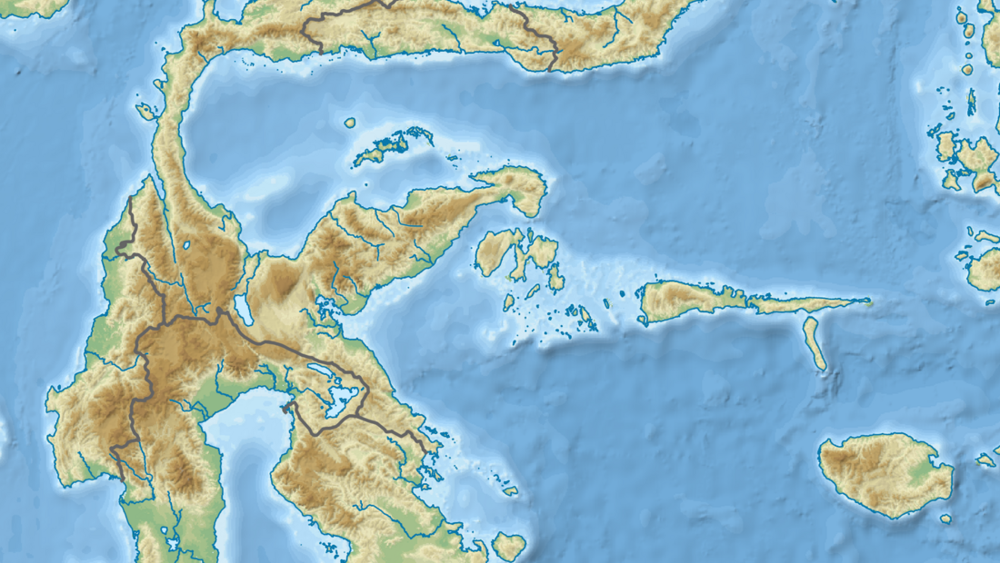
📸 Topographic map of Sulawesi — Wikimedia Commons
🗺️ Pick a story to explore
Topographic map of Sulawesi, Indonesia — Wikimedia Commons, GEBCO / OpenStreetMap contributors
History · Nature, August 2025
The Million-Year Sea Crossing: Seven Stone Tools Rewrite When Humans First Sailed
Seven flakes of stone from a cornfield in Sulawesi say early human relatives crossed deep ocean water more than a million years ago — long before modern humans, and long before anyone was supposed to have a boat.
◈ Both sides inside · ▶ Watch / Listen
1755 copper engraving of Lisbon in ruins — public domain, via Wikimedia Commons
History · 1 November 1755
Lisbon, 1755: The Morning Europe's Richest City Vanished
An earthquake, a tsunami, and a fire that burned for days, all before lunch on All Saints' Day — and out of the ashes, the science of seismology.
◈ Both sides inside · ▶ Watch / Listen
Harry Houdini, c. 1899 — Library of Congress, public domain, via Wikimedia Commons
History · 31 October 1926
Houdini, 1926: The Man No Lock Could Hold Ran Out of Escapes
He walked out of handcuffs, straitjackets, and a water torture cell. He could not walk out of a ruptured appendix — and the argument about what killed him has never settled.
◈ Both sides inside · ▶ Watch / Listen
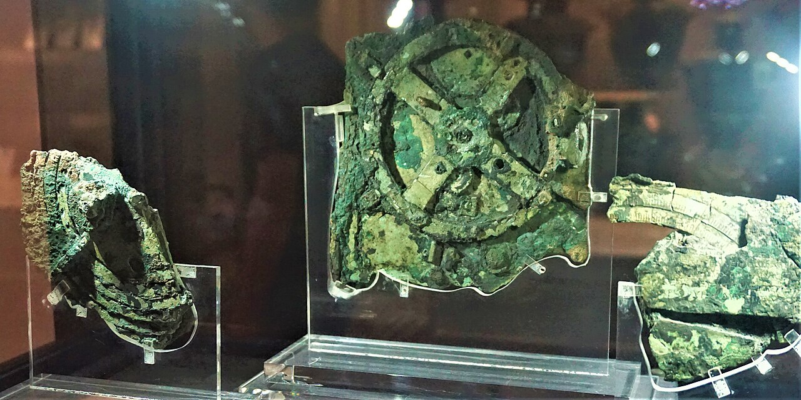
Antikythera mechanism, National Archaeological Museum, Athens — Joy of Museums, via Wikimedia Commons
Deep Past · Recovered 1901; built c. 2nd century BC
The Antikythera Mechanism: A Computer From 150 BC
Pulled from a shipwreck in 1901, a corroded lump of bronze turned out to contain gear wheels of a precision not seen again for a thousand years.
◈ Both sides inside · ▶ Watch / Listen
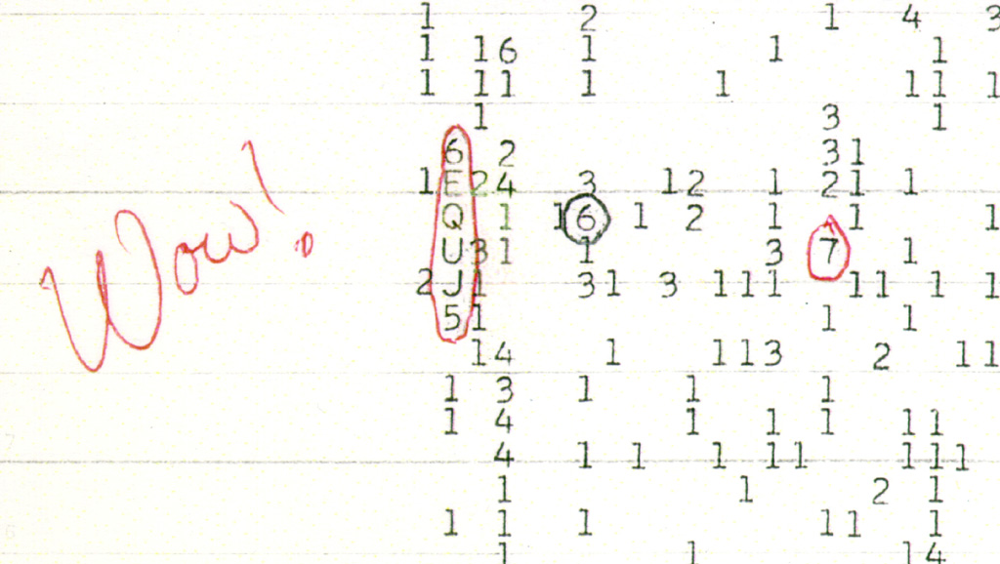
The original Wow! signal printout, 15 Aug 1977 — Big Ear Radio Observatory / NAAPO, via Wikimedia Commons
History · 15 August 1977
The Wow! Signal: 72 Seconds Nobody Can Explain Away
On 15 August 1977, Ohio State's Big Ear telescope printed out '6EQUJ5'. An astronomer circled it and wrote 'Wow!' It has never repeated.
◈ Both sides inside · ▶ Watch / Listen
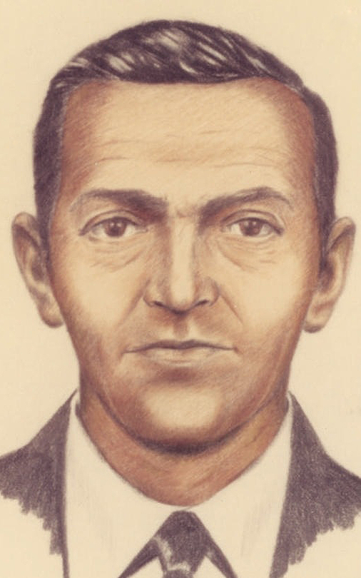
FBI composite sketch of D.B. Cooper, 1973 — FBI, public domain, via Wikimedia Commons
History · 24 November 1971
D.B. Cooper: The Man Who Fell Out of the Sky and Was Never Found
On 24 November 1971, a calm man in a suit hijacked a Boeing 727, took $200,000, strapped on a parachute, and stepped into a storm over Washington. The FBI closed the active case in 2016 without ever naming him.
◈ Both sides inside · ▶ Watch / Listen
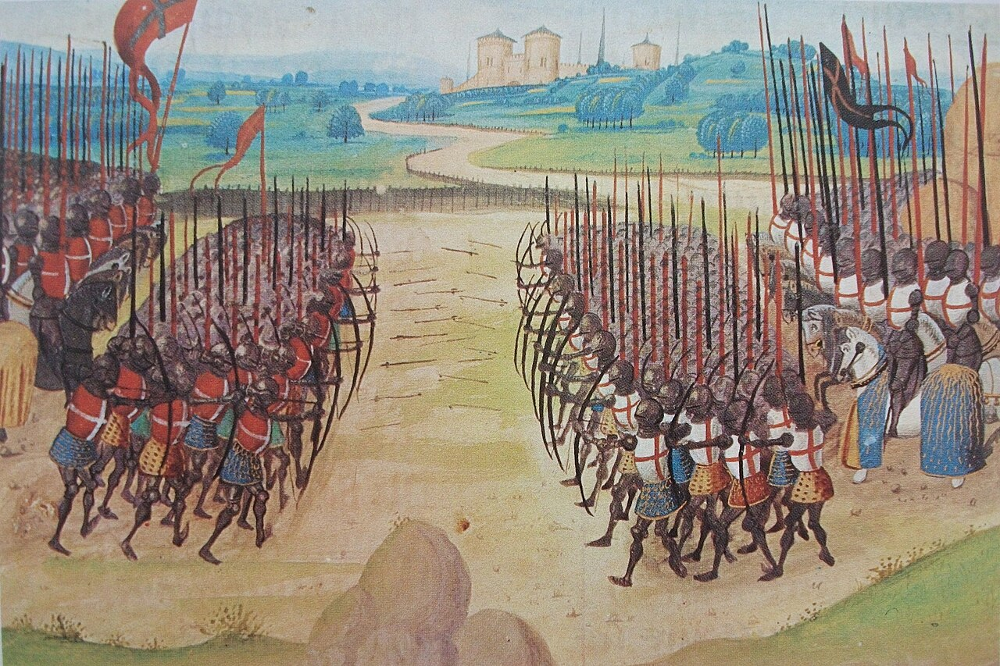
Battle of Agincourt, 15th-century miniature — Bibliothèque nationale de France, public domain, via Wikimedia Commons
History · 25 October 1415
Agincourt, 1415: The Longbow, the Mud, and the Myth
On St Crispin's Day 1415, Henry V's exhausted, outnumbered army beat a much larger French force in three hours. The numbers — and the legend — are still argued over.
◈ Both sides inside · ▶ Watch / Listen
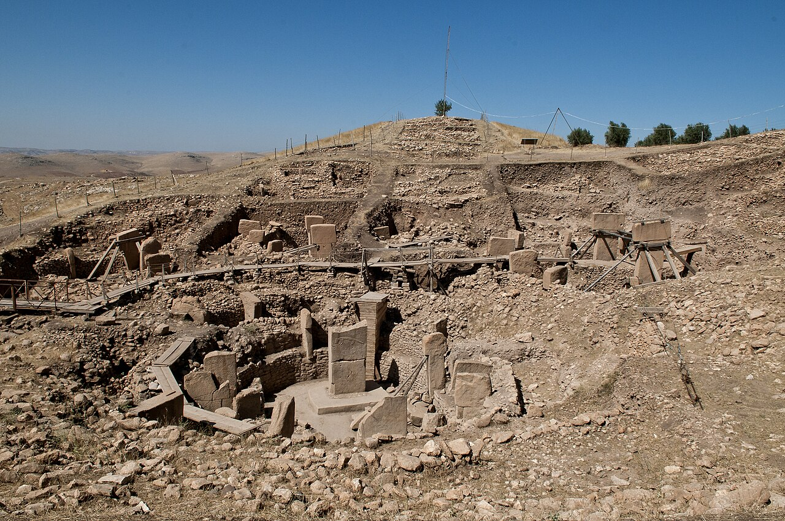
Göbekli Tepe, Şanlıurfa — Teomancimit, via Wikimedia Commons
Deep Past · The Younger Dryas, c. 12,800 years ago
The Lost Civilisation Claim: Hancock, Carlson, and the Younger Dryas
Graham Hancock and Randall Carlson argue an advanced civilisation was wiped out about 12,800 years ago — and that its survivors seeded the world's oldest monuments. Mainstream archaeology disagrees. Here is the argument, split into what is proven, what is argued, and what is a leap.
◈ Both sides inside · ▶ Watch / Listen
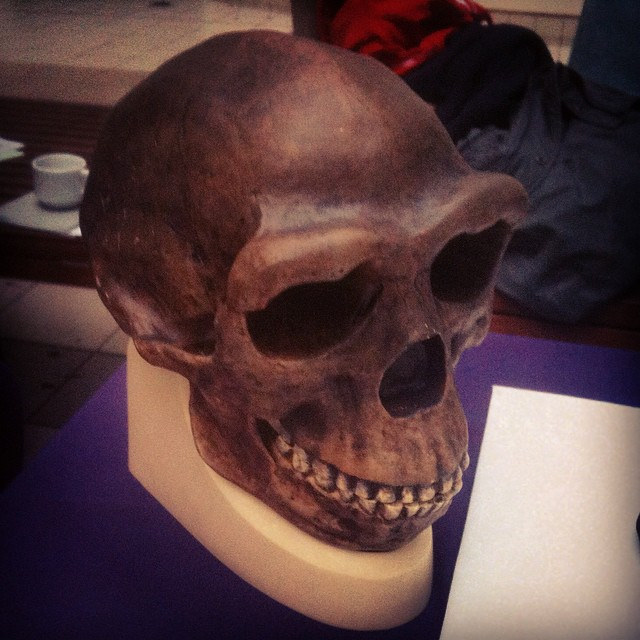
Replica Neanderthal skull — CC0, via Wikimedia Commons
Deep Past · From ~1.9 million years ago to ~40,000 years ago
Field Guide to the Other Humans: Who They Were, Where They Lived, What They Were Doing
For most of human history, we were not alone. At least seven other kinds of humans shared the planet with us or came just before us. This is the roll call.
◈ Both sides inside · ▶ Watch / Listen
❓CIllustrated cover — no verified photo available
Contested · Claims from 1989; JRE #2479, 3 April 2026
CONTESTED — Bob Lazar and Area 51: The Claim That Never Quite Dies
In 1989, a man calling himself a physicist said he had reverse-engineered alien craft at a site near Area 51. The story made him famous, made a documentary, and has never been corroborated. This article sits in the contested corner on purpose: it is not presented as institutional science.
◈ Both sides inside · ▶ Watch / Listen
🔬AIllustrated cover — no verified photo available
Rogan Science · JRE #2553, 14 Sep 2026
Andrew Huberman — Neuroscience and human performance
Andrew Huberman is a Stanford neuroscientist and host of the Huberman Lab podcast, one of the most-listened-to science shows in the world. On Rogan in September 2026 he was promoting his book Protocols: An Operating Manual for the Human Body, which his site listed as a #1 New York Times bestseller.
◈ Both sides inside · ▶ Watch / Listen
🔬CIllustrated cover — no verified photo available
Rogan Science · JRE #2554, 15 Sep 2026
Carlo Rovelli — Theoretical physics — loop quantum gravity
Carlo Rovelli is a theoretical physicist at Aix-Marseille University and one of the founders of loop quantum gravity — the attempt to describe gravity not as a smooth force but as a network of discrete, quantum loops of space itself.
David Sinclair — Genetics and the biology of ageing
David Sinclair is a professor of genetics at Harvard Medical School and author of Lifespan, the book that made 'ageing is a disease we can treat' a mainstream idea. His core claim is the Information Theory of Ageing: ageing is driven less by accumulated damage than by the loss of epigenetic information — the instructions that tell a cell which genes to read — and that information can, in principle, be restored.
Jared Diamond — Geography, history, and human societies
Jared Diamond is the Pulitzer-winning author of Guns, Germs, and Steel and Collapse, and the most famous living exponent of the argument that geography, not innate superiority, explains why some societies conquered and others were conquered.
◈ Both sides inside · ▶ Watch / Listen
🔬DIllustrated cover — no verified photo available
Rogan Science · JRE #2562, 7 Oct 2026
Dan McClellan — Biblical scholarship and the fight against Bible misinformation
Dan McClellan is a biblical scholar specialising in Second Temple Judaism, early Israelite religion, and the cognitive science of religion. He is best known online for short, blunt videos correcting viral claims about the Bible — what the text actually says in Hebrew and Greek, what scholars actually think, and where a popular claim quietly invents its evidence.
◈ Both sides inside · ▶ Watch / Listen
🔬DIllustrated cover — no verified photo available
Rogan Science · JRE, 27 Aug 2026
Daniel Everett — Linguistics — how language began
Daniel Everett spent years living with the Pirahã people of the Amazon, and came away with a claim that shook linguistics: the Pirahã language, he argued, has no recursion — no sentences nested inside sentences — and no words for numbers or colours in the way other languages have them. If true, that challenged the then-dominant idea that recursion is a universal, hard-wired feature of human language.
◈ Both sides inside · ▶ Watch / Listen
The pyramids of Giza — Morhaf Kamal Aljanee, via Wikimedia Commons
Rogan Science · JRE #2321, 14 May 2025 — earlier than the Nov 2025–Oct 2026 window, included here by request
Zahi Hawass — Egyptology — who really built the pyramids
Zahi Hawass is Egypt's most famous archaeologist: former Minister of Antiquities, excavator at Giza, and the public face of mainstream Egyptology for three decades. His Rogan appearance (episode #2321, May 2025) is included here even though it falls just before the November 2025–October 2026 window, because Hawass is the central mainstream voice in the pyramid debate this site covers.
Michael P. Masters — Biological anthropology — the 'extratempestrial' hypothesis
Michael P. Masters is a professor of biological anthropology at Montana Technological University who studies hominin anatomy and the evolution of the human skull. His public work takes that expertise somewhere unusual: he argues that the beings described in UFO encounters could be us — humans from the far future, evolved into the big-headed, small-bodied form reported by witnesses, travelling back in time.
⚠ CONTESTED◈ Both sides inside · ▶ Watch / Listen
The pyramids of Giza — Morhaf Kamal Aljanee, via Wikimedia Commons
Filippo Biondi — Satellite radar and the pyramids beneath the pyramids
Filippo Biondi is a telecommunications and signal-processing engineer whose team uses synthetic-aperture radar (SAR) and Doppler tomography to look inside structures from orbit. In March 2025 his team claimed something extraordinary: vast structures — shafts, chambers, and a spiral — beneath the Khafre pyramid at Giza, detected by analysing satellite radar data.
Ben van Kerkwyk — Independent researcher — ancient engineering
Ben van Kerkwyk runs UnchartedX, a video-essay and research project on ancient sites, megalithic engineering, and what he calls the mysteries of the past. His work focuses on precision: the machining marks on Egyptian granite, the tolerances of stone boxes in the Serapeum, the engineering questions mainstream tours tend to skip.
INDEPENDENT RESEARCHER◈ Both sides inside · ▶ Watch / Listen
🔬TIllustrated cover — no verified photo available
Rogan Science · JRE #2450, 6 Feb 2026
Tommy Wood — Neuroscience — dementia prevention and the stimulated brain
Tommy Wood is a physician-neuroscientist whose work sits at the intersection of brain health, traumatic brain injury, and elite-athlete performance. His framework, set out in The Stimulated Mind (March 2026) and on his site, is stimulus, supply, and support: the brain needs the right amount of stimulation (not too little, not too much), a supply of nutrients and oxygen, and support from sleep, exercise, and social life.
◈ Both sides inside · ▶ Watch / Listen
🔬CIllustrated cover — no verified photo available
Rogan Science · JRE #2420, 29 Nov 2025
Chris Masterjohn — Nutritional science — mitochondria
Chris Masterjohn is a nutritional scientist whose work centres on mitochondria — the energy factories of the cell — and on what happens when they run short of the nutrients they need. His Substack posts in 2026, including 'The Five Mitochondrial Strategies' (October 2026), lay out his framework: nutrient deficiency, energy budget, exercise, and timing with nature.
◈ Both sides inside · ▶ Watch / Listen
🔬DIllustrated cover — no verified photo available
Rogan Science · JRE #2551, 9 Sep 2026 — SCENARIO, NOT A PREDICTION
Daniel Kokotajlo — AI researcher and forecaster — AI 2027
Daniel Kokotajlo is a former OpenAI governance researcher and executive director of the AI Futures Project. In April 2025 he and co-authors published AI 2027, a detailed scenario forecast: AI systems progress rapidly to superintelligence, and the story branches into a 'race' ending and a 'slowdown' ending, with timelines, capabilities, and political consequences spelled out month by month.
◈ Both sides inside · ▶ Watch / Listen
🔬JIllustrated cover — no verified photo available
Rogan Science · JRE #2419, November 2025 — exact day not verified
John Lisle — History of science — the CIA, MKULTRA, and the scientists it used
John Lisle is a lecturer in the history of science at the University of Texas at Austin. His books The Dirty Tricks Department (2023) and Project Mind Control (2025) trace how American intelligence agencies recruited scientists — chemists, psychologists, physicians — for covert programmes, and what that recruitment did to the scientists and to the science.
◈ Both sides inside · ▶ Watch / Listen
🔬SIllustrated cover — no verified photo available
Rogan Science · JRE #2556, 22 Sep 2026
Siddharth Kara — Modern slavery researcher — cobalt, lithium, and the Congo
Siddharth Kara is a researcher on modern slavery and human trafficking, a visiting professor at the University of Nottingham's Rights Lab, and the author of Cobalt Red (2023, a Pulitzer finalist) and The Zorg (October 2025). His work is field research: travelling to artisanal mines in the Democratic Republic of the Congo and documenting, in named places and named supply chains, the children and adults digging cobalt and lithium that end up in phones, laptops, and electric cars.
Thomas Campbell — Physicist — consciousness as the fundamental reality
Thomas Campbell is a physicist — he worked on US missile-defence systems — who argues, in his My Big TOE trilogy (Theory of Everything), that consciousness is not produced by the physical world but is the fundamental substrate, and that physical reality is a computed virtual reality rendered for conscious players.
Zach Bush — Physician — soil, glyphosate, and the microbiome
Zach Bush is a physician trained in internal medicine, endocrinology, and hospice care, and the founder of Seraphic Group and Farmer's Footprint, a project promoting regenerative agriculture. His central argument links three things most medicine keeps separate: chemical agriculture (above all glyphosate), the soil microbiome, and the human microbiome — and through them, the rise in chronic and metabolic disease.
Rogan Science · JRE #2516, 18 Jun 2026 — journalist, not a lab scientist
Rowan Jacobsen — Science writer — in defence of sunlight
Rowan Jacobsen is a science journalist and author who writes on food and nature for Harper's, Scientific American, and Smithsonian. His 2026 book In Defense of Sunlight argues a counterintuitive case: that moderate sun exposure is associated with lower rates of many diseases, and that the public-health message on sun — avoid it, always, with sunscreen — has overshot.
◈ Both sides inside · ▶ Watch / Listen
🔬MIllustrated cover — no verified photo available
Rogan Science · JRE #2506, 28 May 2026
Michelle Thaller — Astrophysics and science communication
Michelle Thaller is an astrophysicist and science communicator who spent years at NASA — on the Spitzer Space Telescope, at JPL, and at Goddard — before retiring from the agency in 2024. (Older NASA pages still list her agency title; this article describes her as former NASA.)
◈ Both sides inside · ▶ Watch / Listen
🔬DIllustrated cover — no verified photo available
Rogan Science · JRE #2513, 11 Jun 2026
Dean Radin — Parapsychology and consciousness research
Dean Radin is chief scientist at the Institute of Noetic Sciences and the most prominent working parapsychologist in the United States. His research programme tests whether mind affects matter: presentiment experiments, random-number-generator studies, and, most recently, a 2026 preregistered retrocausal interferometer test run with both human and AI observers.
Dan Richards — Independent researcher — DeDunking the Past
Dan Richards runs DeDunking the Past, a video project that examines lost-civilisation and alternative-history claims — the same territory as Hancock and Carlson, but from a debunking-leaning chair. His videos test specific claims against the archaeological record: a particular carving, a particular date, a particular 'impossible' artefact.
INDEPENDENT RESEARCHER◈ Both sides inside · ▶ Watch / Listen
🔬RIllustrated cover — no verified photo available
Rogan Science · JRE #2568, 20 Oct 2026 — athlete, not a lab scientist
Ross Edgley — Endurance athlete and sport-science graduate
Ross Edgley is an endurance athlete and Loughborough sport-science graduate best known for swimming around Great Britain, swimming around Iceland, and swimming the Yukon River. His swims double as citizen science: the Iceland swim carried eDNA and microplastic sampling alongside university researchers, turning an endurance stunt into a moving survey of ocean health.
◈ Both sides inside · ▶ Watch / Listen
🏛️RIllustrated cover — no verified photo available
History · The empty fort, August 1590
Roanoke, 1590: 115 People Vanish — and Leave Behind a Single Word
A whole English town — men, women, and children, including a newborn baby — was gone when its governor came back with supplies. No bodies, no battle, no goodbye note. Just one word carved into a wooden post: CROATOAN.
◈ Both sides inside · ▶ Watch / Listen
Cast of the LB1 Homo floresiensis skull, Cantonal Museum of Geology, Lausanne — Rama, via Wikimedia Commons (CC BY-SA 3.0 FR)
Deep Past · 2003–2024 · FLORES, INDONESIA
The Real Hobbits of Flores: A Metre-Tall Human, a Grapefruit Brain, and the Tiny Arm Bone That Settled the Argument
In 2003, archaeologists digging in a cave on the Indonesian island of Flores pulled out the skeleton of a grown woman barely a metre tall, with a brain the size of a grapefruit. She was a new kind of human — and twenty years of argument later, a bone even smaller than hers may have settled the debate for good.
◈ Both sides inside · ▶ Watch / Listen
Ahu Tongariki's 15 moai — Camill1336, via Wikimedia Commons
History · The statues, c. 1250–1500 · the new evidence, 2024–2025
Easter Island: The Giant Heads That Walked — and the Collapse That Never Happened
Nearly 1,000 giant stone heads stand on the most remote inhabited island on Earth. For decades the story was that their builders destroyed themselves. New DNA and garden surveys say the real story is stranger — and the real collapse came by ship.
◈ Both sides inside · ▶ Watch / Listen
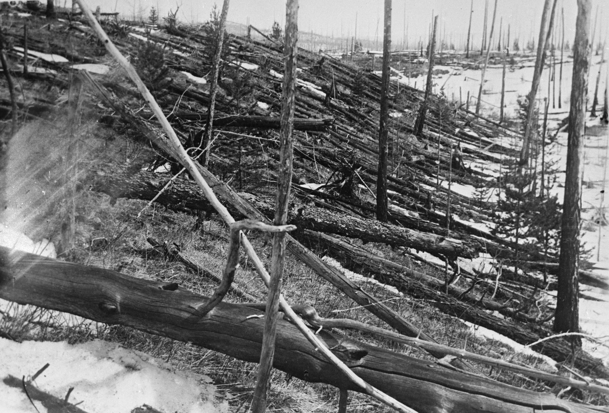
Flattened trees at Tunguska, photographed on the Kulik expeditions — public domain, via Wikimedia Commons
History · 30 June 1908, Siberia
Tunguska, 1908: The Explosion That Flattened a Forest the Size of a City — and Left No Crater
At 7:14 on a summer morning, the sky over Siberia split open. A blast a thousand times stronger than Hiroshima flattened 2,150 square kilometres of forest — and when scientists finally reached the spot, 19 years later, there was no crater and no meteorite. Just trees, lying in a giant butterfly pattern, pointing at an empty sky.
◈ Both sides inside · ▶ Watch / Listen
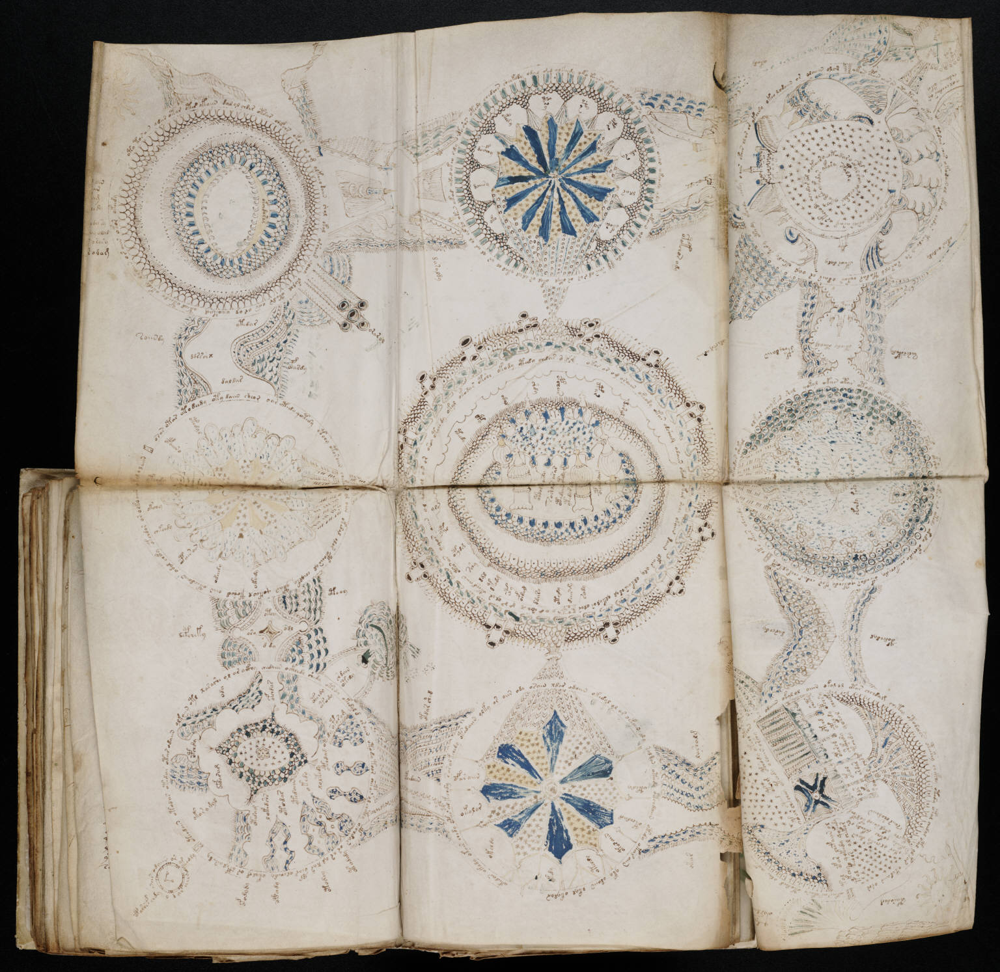
The Rosettes foldout (folios 85v–86r) — six panels of circular diagrams — public domain, Beinecke Library scan via Wikimedia Commons
History · Vellum dated 1404–1438 · At Yale since 1969
The Voynich Manuscript: The 600-Year-Old Book Nobody on Earth Can Read
Two hundred and forty pages of calfskin, plants that don't exist, star charts, and women bathing in green pools — written in a language no one has ever read. The world's best codebreakers tried. So did AI. It still hasn't given up a single word.
◈ Both sides inside · ▶ Watch / Listen
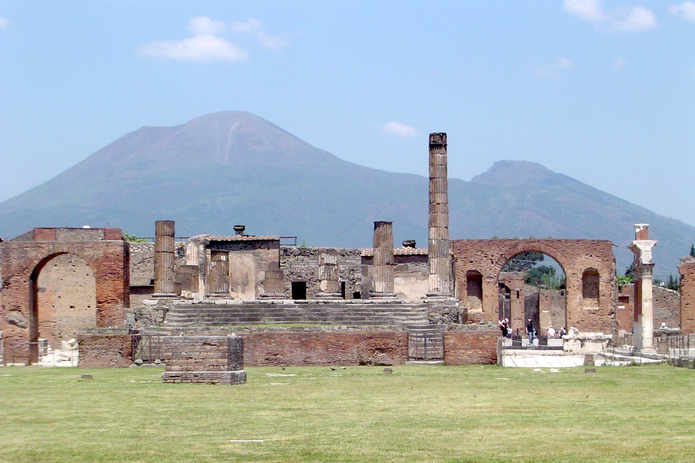
Pompeii's Forum with Mount Vesuvius towering above — Qfl247, via Wikimedia Commons (CC BY-SA)
History · AD 79 · DNA rewrites the story, 2024
Pompeii, AD 79: The City a Volcano Froze in Time — and the DNA That Rewrote Who Died There
In less than a day, Vesuvius buried a whole Roman city under metres of ash. For 150 years we told stories about the plaster casts of its victims — a mother and her child, two sisters dying in an embrace. In 2024, DNA from inside the casts said we had the families wrong. And even the date of the disaster is now argued over.
◈ Both sides inside · ▶ Watch / Listen
Amelia Earhart standing under the nose of her Lockheed Electra 10E, 1937 — Underwood & Underwood, public domain, via Wikimedia Commons
History · 2 July 1937 · the search goes on, 2026
Amelia Earhart, 1937: The Pilot Who Vanished Over the Pacific — and the Clues That Keep Dissolving
She was the most famous pilot alive, 7,000 miles from finishing a flight around the world, when her voice faded out over a speck of island in the Pacific. Eighty-nine years later the bones, the sonar pictures, and the satellite shapes have all promised an answer — and every one of them has dissolved on a closer look.
◈ Both sides inside · ▶ Watch / Listen
The Great Sphinx of Giza with Khafre's pyramid behind it, May 2015 — MusikAnimal, via Wikimedia Commons (CC BY-SA 3.0)
Contested · CONTESTED — mainstream date c. 2558–2532 BC
The Great Sphinx of Giza: A Lion With a King's Face — and the 4,500-Year Argument About When It Was Built
It is the oldest monumental sculpture in Egypt, about as long as a jumbo jet, and it guards the pyramids — or is it older than the pyramids? One geologist says rain-marks on its walls prove it was carved thousands of years before Egypt itself. Egyptologists say the stones say otherwise.
⚠ CONTESTED◈ Both sides inside · ▶ Watch / Listen
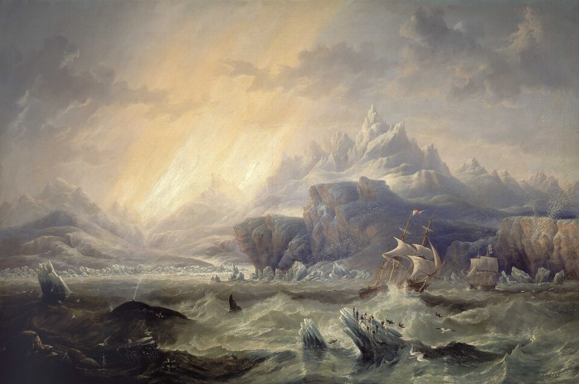
John Wilson Carmichael, 'Erebus' and 'Terror' in the Antarctic, 1847 — National Maritime Museum, public domain, via Wikimedia Commons
History · 1845–1848 · WRECKS FOUND 2014 & 2016
The Franklin Expedition, 1845: 129 Men Sailed Into the Ice — and Vanished Until the Inuit Were Finally Believed
Two of the finest ships Britain ever built sailed for the Northwest Passage in 1845 with 129 men aboard. None came home — and the people who knew where the ships were, and what the men did to survive, were ignored for over a century.
◈ Both sides inside · ▶ Watch / Listen
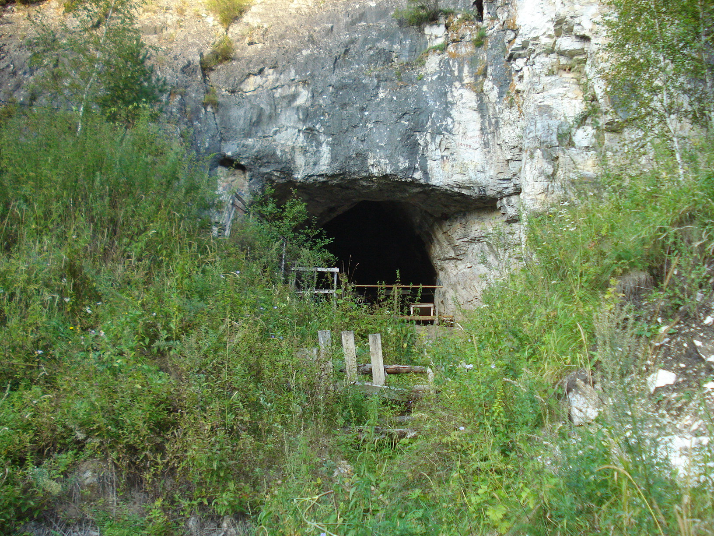
The mouth of Denisova Cave, Altai Mountains, Siberia — Yuriy59, via Wikimedia Commons (CC BY-SA 3.0)
Deep Past · 2008–2026 · SIBERIA TO TAIWAN
The Denisovans: The Ghost Humans Found in a Finger Bone — and the Dragon Man Skull That Gave Them a Face
In 2008, a single finger bone from a little girl in a Siberian cave revealed a whole kind of human nobody knew had existed. For fifteen years the Denisovans were a ghost made of DNA — then, in 2025 and 2026, a skull hidden in a well and bones dug up in the 1970s finally gave them a face.
◈ Both sides inside · ▶ Watch / Listen
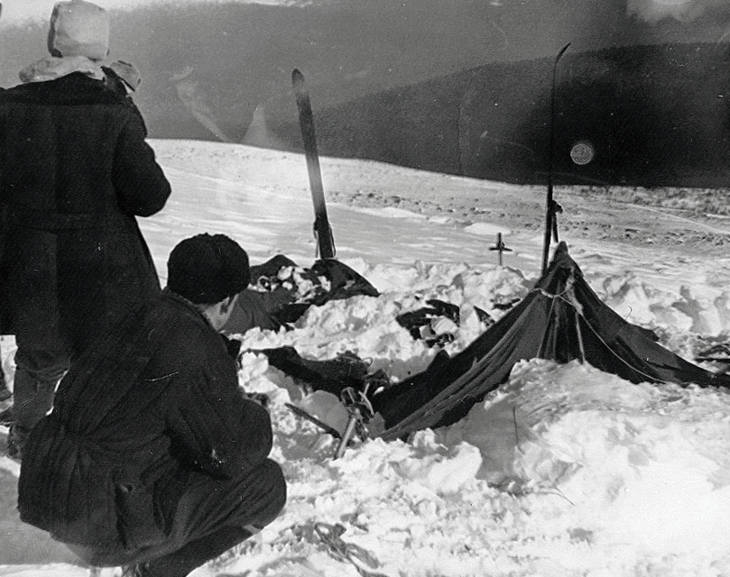
The tent as the searchers found it, 26 February 1959 — Soviet investigators, public domain, via Wikimedia Commons
Contested · CONTESTED — 1–2 February 1959
Dyatlov Pass, 1959: Nine Hikers Cut Their Way Out of Their Tent — and Never Came Back
On a frozen slope in the Soviet Urals, nine experienced ski-hikers slashed their tent open from the inside and walked into a −30 °C night in their socks. Sixty years later, snow science finally offered an answer — but the case is still argued over.
⚠ CONTESTED◈ Both sides inside · ▶ Watch / Listen
History · Nature, August 2025
The Million-Year Sea Crossing: Seven Stone Tools Rewrite When Humans First Sailed
Seven flakes of stone from a cornfield in Sulawesi say early human relatives crossed deep ocean water more than a million years ago — long before modern humans, and long before anyone was supposed to have a boat.
📸 Topographic map of Sulawesi, Indonesia — Wikimedia Commons, GEBCO / OpenStreetMap contributors
📖 4 story parts🕰️ 4 moments in time🔗 3 sources✅ 3 proven · ❌ 3 not proven
🧭 Follow the timeline
1.48–1.04 MaCalio tools made and buried in river sediments, southern Sulawesi.
1.02 MaStone tools at Wolo Sege, Flores — the previous Wallacea benchmark.
~194 kaTools at Talepu, Sulawesi — the old record for the island, now far surpassed.
Aug 2025Hakim and colleagues publish the Calio results in Nature.
🕰️ How old is this? (log scale — years ago)
Today
0
Oldest Sulawesi tools before this find
~194,000 yrs
Calio tools — at least
1,040,000 yrs
Calio tools — possibly up to
1,480,000 yrs
Bars are drawn on a log scale so a million years fits on one screen. Ages are the ones in the article.
🗺️ Schematic map — not to scale
Mainland Southeast Asia (Sunda) → deep water → Sulawesi (Calio) · Flores (Wolo Sege) · Luzon. Walking there was never an option — that is the mystery.
⚖️ Both sides — you decide
◈ The claim, at full strength
Early human relatives were deliberate seafarers more than a million years ago, building rafts and navigating open water on purpose.
◈ The pushback
The tools prove a crossing happened. They do not prove intent, navigation, or boat-building. No boats survive from this period anywhere, and an accidental crossing — a group swept out to sea on vegetation, or stranded after a storm — fits the same evidence. Deliberate seafaring is the exciting reading, not the proven one.
VS
A field team led by Indonesian archaeologist Budianto Hakim, working with researchers from Griffith University in Australia, dug seven stone artefacts out of a sandstone outcrop in a modern corn field at Calio, in southern Sulawesi. The artefacts are small, sharp-edged flakes struck from river pebbles — the telltale marks of deliberate tool-making, not rocks broken by nature.
The layers were dated by palaeomagnetic dating of the sandstone itself and by direct dating of a pig fossil found alongside the tools. The result: at least 1.04 million years old, and possibly as old as 1.48 million years. Before this, the oldest evidence on Sulawesi was about 194,000 years old, from Talepu. The new date pushes the island's human story back by roughly 800,000 years.
Sulawesi sits in Wallacea, the island zone east of mainland Southeast Asia, separated from the mainland by deep-water channels that stayed open even when Ice Age sea levels fell. Walking there was never an option. Somebody crossed water to get there — and did it at roughly the same time as, or earlier than, the tool-makers at Wolo Sege on Flores, dated to at least 1.02 million years ago.
No fossils were found at Calio, so the tool-makers' species is unknown. The leading candidate is Homo erectus or a close relative. Whether they built rafts on purpose or drifted on floating vegetation after a storm is also unknown — and that distinction is the whole argument now.
✓ What it proves
Hominins reached Sulawesi at least 1.04 million years ago.
They crossed deep water that could never be walked, even at low Ice Age sea levels.
They were making stone tools on Sulawesi at about the same time as on Flores.
✗ What it doesn't prove
That they built boats or navigated deliberately.
Which species made the tools — no fossils were found at Calio.
That this was a planned migration rather than an accident or a one-off stranding.
Timeline
1.48–1.04 Ma — Calio tools made and buried in river sediments, southern Sulawesi.
1.02 Ma — Stone tools at Wolo Sege, Flores — the previous Wallacea benchmark.
~194 ka — Tools at Talepu, Sulawesi — the old record for the island, now far surpassed.
Aug 2025 — Hakim and colleagues publish the Calio results in Nature.
Lisbon, 1755: The Morning Europe's Richest City Vanished
An earthquake, a tsunami, and a fire that burned for days, all before lunch on All Saints' Day — and out of the ashes, the science of seismology.
📸 1755 copper engraving of Lisbon in ruins — public domain, via Wikimedia Commons
📖 3 story parts🕰️ 3 moments in time🔗 1 sources✅ 3 proven · ❌ 2 not proven
🧭 Follow the timeline
9:40 a.m., 1 Nov 1755Main shock strikes as churches fill for Mass.
~40 min laterTsunami surges up the Tagus.
Days afterFires burn across the ruins; Pombal begins the rebuild and the parish survey.
⚖️ Both sides — you decide
◈ The claim, at full strength
The Lisbon disaster was divine punishment for a sinful city — the reading many preachers and pamphleteers pushed in 1755.
◈ The pushback
The earthquake had a natural, tectonic cause: faulting of the seafloor along plate boundaries in the Atlantic. The theological reading was a moral argument, not an explanation of the mechanism — and Pombal's survey, not prayer, is what produced the science that now saves lives in quake zones.
VS
At about 9:40 on the morning of 1 November 1755, with churches packed for All Saints' Day Mass, a massive earthquake struck off the coast of Portugal. Modern estimates put it at magnitude 8.5 to 9.0. Buildings collapsed, candles toppled onto the wreckage, and fires began that would burn for days — Britannica's account says about six days.
Roughly forty minutes later, a tsunami rolled up the Tagus estuary and finished what the shaking started. Waves of about 20 feet hit Lisbon and about 65 feet hit Cádiz. Death tolls are disputed: Britannica gives an estimate of 60,000 killed in Lisbon alone, while other modern summaries give a range of roughly 12,000 to 50,000 overall. The Ledger uses the range and flags the disagreement rather than picking one number.
The rebuild, led by the Marquis of Pombal, gave the world its first earthquake-resistant buildings. Pombal also sent a survey to every parish asking what people felt, where, and when — the first systematic earthquake questionnaire, and the founding move of seismology.
✓ What it proves
A magnitude ~8.5–9.0 quake, tsunami, and fire destroyed Lisbon on 1 Nov 1755.
Pombal's parish survey founded systematic seismology.
The rebuild pioneered earthquake-resistant construction.
✗ What it doesn't prove
An exact death toll — estimates range from tens of thousands to 60,000 in Lisbon alone.
That any single moral cause explains a tectonic event.
Timeline
9:40 a.m., 1 Nov 1755 — Main shock strikes as churches fill for Mass.
~40 min later — Tsunami surges up the Tagus.
Days after — Fires burn across the ruins; Pombal begins the rebuild and the parish survey.
Houdini, 1926: The Man No Lock Could Hold Ran Out of Escapes
He walked out of handcuffs, straitjackets, and a water torture cell. He could not walk out of a ruptured appendix — and the argument about what killed him has never settled.
📸 Harry Houdini, c. 1899 — Library of Congress, public domain, via Wikimedia Commons
📖 3 story parts🕰️ 4 moments in time🔗 2 sources✅ 3 proven · ❌ 2 not proven
🧭 Follow the timeline
22 Oct 1926Punches in the Montreal dressing room.
24 Oct 1926Final performance in Detroit at 104°F; collapse.
31 Oct 1926Death in Detroit, aged 52.
1936Bess ends the séances: 'Ten years is long enough to wait for any man.'
⚖️ Both sides — you decide
◈ The claim, at full strength
The punches killed Houdini — the version his doctors and his life insurer accepted at the time, with the insurer paying double on an accidental-death claim.
◈ The pushback
Modern medical opinion doubts it: he may already have had appendicitis, and the punches may only have masked how serious it was, delaying treatment. No autopsy was ever performed, so the mechanism cannot be proven either way. A third strand — that spiritualists poisoned him — has no supporting evidence and rests on a later biography's speculation.
VS
Harry Houdini, born Erik Weisz in Budapest in 1874, spent his life escaping handcuffs, straitjackets, sealed milk cans, and a water torture cell hung upside down. His later years were spent at war with fraudulent mediums who preyed on grieving families.
On 22 October 1926 in Montreal, after a lecture on exposing fake mediums, McGill student J. Gordon Whitehead asked in Houdini's dressing room whether he could really take any punch to the stomach. Houdini, lying on a couch with a sore ankle, said yes — before he could brace, Whitehead hit him several times in the gut.
Running a 104-degree fever, Houdini still took the stage in Detroit on 24 October, then collapsed. After two surgeries at Grace Hospital for a ruptured appendix, he died of peritonitis on 31 October 1926, aged 52. He had left his wife Bess a secret code — 'Rosabelle, believe' — promising to send it from the other side if he possibly could. She held séances for ten years. The code never came back in a way she accepted.
✓ What it proves
Houdini died of peritonitis from a ruptured appendix on 31 Oct 1926.
He was punched in the stomach in Montreal nine days earlier.
No autopsy was performed, so the causal chain is unproven.
✗ What it doesn't prove
That the punches ruptured his appendix.
That spiritualists poisoned him — no evidence supports this.
Timeline
22 Oct 1926 — Punches in the Montreal dressing room.
24 Oct 1926 — Final performance in Detroit at 104°F; collapse.
31 Oct 1926 — Death in Detroit, aged 52.
1936 — Bess ends the séances: 'Ten years is long enough to wait for any man.'
Deep Past · Recovered 1901; built c. 2nd century BC
The Antikythera Mechanism: A Computer From 150 BC
Pulled from a shipwreck in 1901, a corroded lump of bronze turned out to contain gear wheels of a precision not seen again for a thousand years.
📸 Antikythera mechanism, National Archaeological Museum, Athens — Joy of Museums, via Wikimedia Commons
📖 3 story parts🕰️ 4 moments in time🔗 2 sources✅ 3 proven · ❌ 2 not proven
🧭 Follow the timeline
c. 100 BCMechanism built (Britannica's dating, ±30 years).
1901Recovered from the Antikythera shipwreck.
1902Gear noticed in the Athens museum; first study begins.
2005–2008CT scanning maps the gear train; results published in Nature.
⚖️ Both sides — you decide
◈ The claim, at full strength
The mechanism is evidence of a lost, advanced civilisation — or even of knowledge that should not have existed in the ancient world.
◈ The pushback
The mechanism is extraordinary, but it sits inside a documented Greek tradition: Cicero describes similar devices, and the gearing, while sophisticated, is fully mechanical and Greek in design. What is missing is not the technology's origin but its predecessors — no earlier device of this complexity has survived, which is a gap in the record, not proof of a lost civilisation.
VS
Sponge divers off the Greek island of Antikythera recovered a corroded bronze mass from a Roman-era shipwreck in 1901. It sat in the National Archaeological Museum in Athens for two years before anyone noticed it contained gears.
Radiographic imaging later showed the fragments contained about 30 gear wheels, with dials tracking the Sun and Moon in the zodiac, lunar phases, the 19-year Metonic cycle, and even the timing of the Panhellenic games. Britannica dates its manufacture to around 100 BC, give or take 30 years; other summaries place it in the 2nd century BC. The mechanism is the only known physical survivor of a tradition of mechanical astronomical displays.
The Antikythera Mechanism Research Project's CT work, published in Nature in the 2000s, mapped the gear train and decoded thousands of Greek characters hidden inside the corrosion.
✓ What it proves
A geared astronomical calculator existed in the Greek world by c. 100 BC.
It tracked Sun, Moon, lunar phases, eclipse cycles, and the games cycle.
Its gearing was unmatched in the surviving record for over a millennium.
✗ What it doesn't prove
That it came from a lost advanced civilisation — no evidence supports this over the Greek tradition.
Its exact original purpose in full — some functions remain reconstructed, not observed.
Timeline
c. 100 BC — Mechanism built (Britannica's dating, ±30 years).
1901 — Recovered from the Antikythera shipwreck.
1902 — Gear noticed in the Athens museum; first study begins.
2005–2008 — CT scanning maps the gear train; results published in Nature.
The Wow! Signal: 72 Seconds Nobody Can Explain Away
On 15 August 1977, Ohio State's Big Ear telescope printed out '6EQUJ5'. An astronomer circled it and wrote 'Wow!' It has never repeated.
📸 The original Wow! signal printout, 15 Aug 1977 — Big Ear Radio Observatory / NAAPO, via Wikimedia Commons
📖 3 story parts🕰️ 4 moments in time🔗 2 sources✅ 3 proven · ❌ 2 not proven
🧭 Follow the timeline
15 Aug 1977Big Ear records the signal in Sagittarius.
Days laterEhman circles '6EQUJ5' and writes 'Wow!'
1977–presentFollow-up searches find no repeat.
2025Arecibo Wow! reassessment refines the frequency; the signal stays unexplained.
⚖️ Both sides — you decide
◈ The claim, at full strength
The Wow! signal was a transmission from an extraterrestrial civilisation.
◈ The pushback
The signal has the hallmarks researchers would hope for — narrowband, near the hydrogen line, the right rise-and-fall shape — but a single, never-repeated detection cannot confirm an alien origin, and Ehman himself did not think the evidence was strong enough to claim first contact. The honest status, after nearly fifty years, is unexplained: neither proven alien nor proven mundane.
VS
Ohio State University's Big Ear radio telescope, running the world's longest-running SETI program, recorded a strong, narrowband radio signal on 15 August 1977 from the direction of Sagittarius. It lasted the full 72-second window a fixed sky point spent in Big Ear's beam, rose and fell the way a distant, fixed source should, and sat near the 1420 MHz neutral-hydrogen line — the frequency physicists had proposed as a natural 'hello' channel.
Volunteer astronomer Jerry Ehman found it days later while reviewing printouts, circled the intensity sequence '6EQUJ5', and wrote 'Wow!' beside it. The signal appeared in only one of Big Ear's two feed horns, which fits a transient source rather than a steady background object.
Dozens — by some counts hundreds — of follow-up observations have found nothing. Hypotheses have included reflections from space debris, interstellar scintillation, and hydrogen clouds around comets. None has been confirmed. A 2025 reassessment using unpublished archival Ohio SETI observations (the Arecibo Wow! project) refined its frequency to about 1420.726 MHz, but did not solve it.
✓ What it proves
A strong narrowband signal was recorded on 15 Aug 1977, lasting 72 seconds.
It has never recurred despite many follow-up searches.
No natural or terrestrial explanation has been confirmed.
✗ What it doesn't prove
That it was definitely an alien transmission.
That it was definitely a comet, a satellite, or interference — none of those explanations has been confirmed either.
Timeline
15 Aug 1977 — Big Ear records the signal in Sagittarius.
Days later — Ehman circles '6EQUJ5' and writes 'Wow!'
1977–present — Follow-up searches find no repeat.
2025 — Arecibo Wow! reassessment refines the frequency; the signal stays unexplained.
D.B. Cooper: The Man Who Fell Out of the Sky and Was Never Found
On 24 November 1971, a calm man in a suit hijacked a Boeing 727, took $200,000, strapped on a parachute, and stepped into a storm over Washington. The FBI closed the active case in 2016 without ever naming him.
📸 FBI composite sketch of D.B. Cooper, 1973 — FBI, public domain, via Wikimedia Commons
📖 3 story parts🕰️ 3 moments in time🔗 2 sources✅ 3 proven · ❌ 2 not proven
🧭 Follow the timeline
24 Nov 1971Hijacking of Flight 305; the jump over southwest Washington.
1980Decaying ransom banknotes found on the Columbia River.
Jul 2016FBI redirects resources; active investigation ends.
⚖️ Both sides — you decide
◈ The claim, at full strength
D.B. Cooper survived, lived under a new identity, and spent the money — or a named suspect (Richard Floyd McCoy, and others) was Cooper.
◈ The pushback
Survival is possible but unproven: the jump was into a storm, at night, in a suit, with a parachute that may have been sewn shut (one of the chutes supplied was a training chute). McCoy, a favourite suspect, did commit a similar hijacking months later — but he was eliminated as Cooper on the evidence available, and no suspect has ever been charged. The case is unsolved, not solved by a favourite name.
VS
A man calling himself Dan Cooper bought a one-way ticket on Northwest Orient Flight 305 from Portland to Seattle, then handed a stewardess a note saying he had a bomb. In Seattle he traded the passengers for $200,000 in cash and four parachutes, then ordered the plane back into the air toward Mexico — and somewhere over southwest Washington, in a storm, he jumped from the rear stairs with the money and was never seen again.
The FBI's case, codenamed NORJAK, ran for 45 years. By the five-year anniversary, agents had considered more than 800 suspects and eliminated all but about two dozen. The FBI's own page notes the name 'D.B.' itself appears to be a press myth — the hijacker called himself Dan Cooper, and the FBI questioned a man with the initials D.B. who was not the hijacker.
The only physical trace ever recovered was a bundle of decaying banknotes, matching the ransom serial numbers, found by a boy on a Columbia River beach in 1980. In July 2016 the FBI redirected the resources allocated to the case to other priorities.
✓ What it proves
A man hijacked Flight 305 on 24 Nov 1971, took $200,000 and four parachutes, and jumped.
The FBI investigated for 45 years and closed the active case in 2016.
Ransom notes were found on a river beach in 1980; nothing else of the money has surfaced.
✗ What it doesn't prove
That any named suspect was Cooper.
That he survived — or that he died in the jump. Both are possible; neither is proven.
Timeline
24 Nov 1971 — Hijacking of Flight 305; the jump over southwest Washington.
1980 — Decaying ransom banknotes found on the Columbia River.
Jul 2016 — FBI redirects resources; active investigation ends.
Agincourt, 1415: The Longbow, the Mud, and the Myth
On St Crispin's Day 1415, Henry V's exhausted, outnumbered army beat a much larger French force in three hours. The numbers — and the legend — are still argued over.
📸 Battle of Agincourt, 15th-century miniature — Bibliothèque nationale de France, public domain, via Wikimedia Commons
📖 3 story parts🕰️ 4 moments in time🔗 1 sources✅ 3 proven · ❌ 2 not proven
🧭 Follow the timeline
1415Siege of Harfleur; march toward Calais.
24 Oct 1415French force blocks the road near Agincourt.
25 Oct 1415Battle: about three hours; English victory.
1420Treaty of Troyes names Henry heir to the French crown.
⚖️ Both sides — you decide
◈ The claim, at full strength
Agincourt was a triumph of English longbow superiority — a clean technological victory of bow over knight.
◈ The pushback
The longbow mattered, but so did the ground, the weather, and French mistakes: a constricted field, heavy rain, and a crowded, disorganised advance that turned the French army's size against itself. Exact army sizes are disputed — older accounts gave the French 50,000 to 150,000, figures modern historians treat as gross exaggerations — so any version that leans on a single ratio should be read with care.
VS
Henry V had marched his army from Harfleur toward Calais after a costly siege, weakened by dysentery and a march of more than 200 miles. Near the village of Agincourt on 24 October, a large French force under the Constable Charles d'Albret moved to block the road to Calais.
On the morning of 25 October — St Crispin's Day — the English, about 6,000 strong with roughly 5,000 archers, faced a French army Britannica puts at roughly 20,000 to 30,000. The French advanced across a narrow, rain-soaked field between two woods. English longbow stakes stopped the cavalry; arrows, mud, and close fighting did the rest. The battle lasted about three hours. English losses are put at around 400; French losses around 6,000, with the Constable among the dead.
The victory made possible England's conquest of Normandy and the Treaty of Troyes (1420), which named Henry heir to the French crown.
✓ What it proves
On 25 Oct 1415, Henry V's army defeated a larger French army at Agincourt.
Longbowmen, stakes, mud, and a narrow field shaped the outcome.
The victory led to the conquest of Normandy and the Treaty of Troyes.
✗ What it doesn't prove
Exact army sizes — estimates for the French range widely.
That the longbow alone won the battle.
Timeline
1415 — Siege of Harfleur; march toward Calais.
24 Oct 1415 — French force blocks the road near Agincourt.
25 Oct 1415 — Battle: about three hours; English victory.
1420 — Treaty of Troyes names Henry heir to the French crown.
Deep Past · The Younger Dryas, c. 12,800 years ago
The Lost Civilisation Claim: Hancock, Carlson, and the Younger Dryas
Graham Hancock and Randall Carlson argue an advanced civilisation was wiped out about 12,800 years ago — and that its survivors seeded the world's oldest monuments. Mainstream archaeology disagrees. Here is the argument, split into what is proven, what is argued, and what is a leap.
📸 Göbekli Tepe, Şanlıurfa — Teomancimit, via Wikimedia Commons
📖 3 story parts🕰️ 4 moments in time🔗 2 sources✅ 3 proven · ❌ 2 not proven
🧭 Follow the timeline
c. 12,800 years agoYounger Dryas cold period begins.
c. 11,600 years agoGöbekli Tepe in use — hunter-gatherer builders.
2007Younger Dryas Impact Hypothesis published.
2020sImpact markers debated; no consensus reached.
⚖️ Both sides — you decide
◈ The claim, at full strength
A lost, advanced civilisation existed before the Younger Dryas and was destroyed by a cosmic impact; its survivors taught the builders of Göbekli Tepe.
◈ The pushback
The impact hypothesis (the Younger Dryas Impact Hypothesis) is a real, published scientific proposal — but it remains contested: claimed impact markers such as nanodiamonds and platinum spikes have been challenged, with other teams failing to reproduce them or offering terrestrial explanations. And no site, artefact, or text of an advanced pre-Younger Dryas civilisation has been found. Göbekli Tepe, dated to about 11,600 years ago, post-dates the proposed impact and was built by hunter-gatherers — remarkable, but not evidence of a lost high civilisation.
VS
The claim, at its strongest, runs like this: about 12,800 years ago, at the start of the Younger Dryas cold period, a comet or asteroid impact (or airburst) triggered continent-scale fires, megafauna extinctions, and a sudden return to Ice Age cold. An advanced, seafaring civilisation that existed before the impact was destroyed; its survivors, the story goes, passed knowledge to the hunter-gatherers who later built Göbekli Tepe in Turkey and other early monuments.
Hancock presents the case in books including Magicians of the Gods and in the Netflix series Ancient Apocalypse; Carlson, a geologist, argues the geological side — scablands, flood features, and impact markers. Their sites and talks are the primary sources for the claim itself, and this article reports their argument in their terms before testing it.
The mainstream position accepts parts of the background and rejects the conclusion: the Younger Dryas cold snap is real, Göbekli Tepe is real and older than farming, and megafauna did die out around this time. What is not accepted is the impact as a proven cause, or any advanced pre-Ice Age civilisation, because the physical evidence for both is disputed and, for the civilisation, absent.
✓ What it proves
The Younger Dryas cold period began about 12,800 years ago.
Göbekli Tepe was built by hunter-gatherers about 11,600 years ago — before farming.
Megafauna extinctions cluster around the end of the Ice Age.
✗ What it doesn't prove
That a cosmic impact caused the Younger Dryas — contested, not settled.
That an advanced civilisation existed before it — no direct evidence has been found.
Timeline
c. 12,800 years ago — Younger Dryas cold period begins.
c. 11,600 years ago — Göbekli Tepe in use — hunter-gatherer builders.
2007 — Younger Dryas Impact Hypothesis published.
2020s — Impact markers debated; no consensus reached.
Deep Past · From ~1.9 million years ago to ~40,000 years ago
Field Guide to the Other Humans: Who They Were, Where They Lived, What They Were Doing
For most of human history, we were not alone. At least seven other kinds of humans shared the planet with us or came just before us. This is the roll call.
📸 Replica Neanderthal skull — CC0, via Wikimedia Commons
📖 7 story parts🕰️ 6 moments in time🔗 2 sources✅ 3 proven · ❌ 2 not proven
🧭 Follow the timeline
~1.9 MaHomo erectus appears; spreads out of Africa.
~709 kaTool-making and rhino butchery on Luzon.
~400–40 kaNeanderthals in Europe and western Asia.
~335–236 kaHomo naledi in South Africa.
~300 kaHomo sapiens appears in Africa.
~50 kaFloresiensis and the last Neanderthals fade from the record.
🦴 Who lived when? (approximate ranges from the article)
Homo erectus
~1.9M – 110k yrs ago
Homo heidelbergensis
~700k – 200k
Neanderthals
~400k – 40k
Denisovans
~400k – 30k
Homo naledi
~335k – 236k
Homo sapiens
~300k – today
Bars are illustrative, not to exact scale. Ranges are the ones in the article.
⚖️ Both sides — you decide
◈ The claim, at full strength
These other humans were primitive brutes — or, in the opposite direction, that they were fully modern in mind and only lacked our technology.
◈ The pushback
The record resists both simplifications. Neanderthals buried, painted, and made complex tools; naledi's burial claim is genuinely disputed, not settled; and small brains did not stop floresiensis or naledi from doing sophisticated things. 'Primitive' is a poor word for animals that survived hundreds of thousands of years in hard places.
VS
HOMO ERECTUS — Asia and Africa, about 1.9 million to 110,000 years ago. Long-legged, wide-ranging, the first hominin to leave Africa in a big way and the leading candidate for the Sulawesi tool-makers. Made handaxes and flakes, controlled fire, hunted large animals, and crossed water to reach Flores and Sulawesi.
HOMO HEIDELBERGENSIS — Africa and Europe, about 700,000 to 200,000 years ago. Big-game hunters who took rhinos and hippos with wooden spears, built shelters, and are the likely ancestors of both Neanderthals and us.
NEANDERTHALS — Europe and western Asia, about 400,000 to 40,000 years ago. Stocky, cold-adapted, buried their dead, painted cave walls, made glue, tools, and jewellery — and interbred with modern humans leaving DNA in people alive today.
DENISOVANS — Asia, about 400,000 to 30,000 years ago. Known first from DNA in a Siberian cave finger bone, later from fossils including a skull in China identified as Denisovan in 2025. Interbred with modern humans; their DNA is strongest in some Pacific and Southeast Asian populations today.
HOMO FLORESIENSIS, the 'hobbits' — Flores, Indonesia, until roughly 50,000 years ago. About a metre tall, small-brained, making stone tools and hunting dwarf elephants. Their small size is usually read as island dwarfing from an erectus-like ancestor.
HOMO LUZONENSIS — Luzon, Philippines, about 709,000 years ago for the tool and butchery evidence, with the species itself dated to roughly 50,000–67,000 years ago from cave fossils. Small-bodied, with a mix of ancient and modern traits; the butchered rhino at Kalinga shows hominins on Luzon hundreds of thousands of years before the fossils.
HOMO NALEDI — South Africa, about 335,000 to 236,000 years ago. Small-brained with human-like hands and feet, found deep in the Rising Star cave system. Whether they deliberately buried their dead there is claimed by the discovery team and disputed by other researchers — one of the liveliest arguments in the field.
✓ What it proves
At least seven other hominin kinds are documented in the fossil and DNA record.
Neanderthals and Denisovans interbred with modern humans.
Several kinds overlapped in time with Homo sapiens.
✗ What it doesn't prove
That every behaviour claimed for them is settled — naledi burials, for example, are disputed.
The exact species of the Sulawesi and Luzon tool-makers — no fossils yet.
Timeline
~1.9 Ma — Homo erectus appears; spreads out of Africa.
~709 ka — Tool-making and rhino butchery on Luzon.
~400–40 ka — Neanderthals in Europe and western Asia.
~335–236 ka — Homo naledi in South Africa.
~300 ka — Homo sapiens appears in Africa.
~50 ka — Floresiensis and the last Neanderthals fade from the record.
Contested · Claims from 1989; JRE #2479, 3 April 2026
CONTESTED — Bob Lazar and Area 51: The Claim That Never Quite Dies
In 1989, a man calling himself a physicist said he had reverse-engineered alien craft at a site near Area 51. The story made him famous, made a documentary, and has never been corroborated. This article sits in the contested corner on purpose: it is not presented as institutional science.
❓CIllustrated cover — no verified photo available
📖 3 story parts🕰️ 2 moments in time🔗 2 sources✅ 3 proven · ❌ 2 not proven
🧭 Follow the timeline
1989Lazar's S-4 claims first air on television.
3 Apr 2026Rogan episode #2479 with Lazar and Vendittelli; S-4 documentary released.
⚖️ Both sides — you decide
◈ The claim, at full strength
Lazar reverse-engineered alien craft at S-4, and the government has hidden the evidence ever since.
◈ The pushback
No element of the S-4 story — the craft, the element-115 reactor, the employment — has been corroborated by documents, institutions, or physical evidence, and key biographical claims have not checked out. The story is best understood as an unproven claim with a large cultural footprint, not as a scientific finding.
VS
Bob Lazar says that in late 1988 and 1989 he worked at a site he calls S-4, near Area 51 in Nevada, where he helped reverse-engineer disc-shaped craft powered by an element he called 115. He says the craft were of non-human origin. His story first broke in a 1989 television interview, and he returned to it in the 2026 documentary S-4: The Bob Lazar Story, released around his April 2026 Rogan appearance with filmmaker Luigi Vendittelli.
Lazar runs United Nuclear, a scientific-supply business, and that site is the closest thing to an official web presence for him. No personal research site was verified for this article.
The pushback is substantial and specific: Lazar's claimed education (MIT and Caltech) has not been corroborated by those institutions' records as reported by investigators; his claimed employment at Los Alamos appears in a phone directory but not in personnel records; and no physical evidence, document, or corroborating witness has established the S-4 craft. Believers point to his early, accurate description of element 115's properties before it was synthesised — sceptics reply that the properties he described were generic predictions, not a unique fingerprint.
✓ What it proves
Lazar made the S-4 claims publicly from 1989 onward.
He appeared on Rogan in April 2026 with a new documentary.
His education and employment claims have not been corroborated by the institutions named.
✗ What it doesn't prove
That alien craft were at S-4, or that Lazar worked on them.
That element 115 powered them — element 115 (moscovium) as synthesised is highly unstable and nothing like a fuel.
Timeline
1989 — Lazar's S-4 claims first air on television.
3 Apr 2026 — Rogan episode #2479 with Lazar and Vendittelli; S-4 documentary released.
Andrew Huberman — Neuroscience and human performance
🔬AIllustrated cover — no verified photo available
📖 3 story parts🕰️ 2 moments in time🔗 1 sources✅ 2 proven · ❌ 2 not proven
🧭 Follow the timeline
14 Sep 2026Rogan episode #2553.
Sep 2026Protocols published.
⚖️ Both sides — you decide
◈ The claim, at full strength
Following a neuroscience protocol — light, sleep, cold, supplements — can measurably improve focus, health, and performance.
◈ The pushback
Many individual protocols rest on real mechanisms but thin human trials; the strongest evidence in this space is for the boring basics (sleep, exercise, light timing), and supplement claims should be read as hypotheses with a product attached, not as prescriptions.
VS
Andrew Huberman is a Stanford neuroscientist and host of the Huberman Lab podcast, one of the most-listened-to science shows in the world. On Rogan in September 2026 he was promoting his book Protocols: An Operating Manual for the Human Body, which his site listed as a #1 New York Times bestseller.
What he posts about, week after week, is protocols: sleep, light exposure, exercise, focus, stress, and supplements, each tied to a named mechanism — dopamine, cortisol, adenosine, circadian clocks — and each given as a concrete routine. The appeal is the format: a lab result, translated into something a listener can do at 6 a.m.
The criticism, from other neuroscientists and physicians, is about the gap between mechanism and proof: a protocol can be biologically plausible and still unproven in humans at the dose and duration recommended, and supplement advice in particular is often ahead of the clinical evidence.
✓ What it proves
Huberman is a Stanford neuroscientist and a leading science communicator.
Sleep, exercise, and light timing have strong evidence behind them.
✗ What it doesn't prove
That every protocol he recommends is proven in humans at the stated dose.
Carlo Rovelli — Theoretical physics — loop quantum gravity
🔬CIllustrated cover — no verified photo available
📖 3 story parts🕰️ 2 moments in time🔗 1 sources✅ 2 proven · ❌ 1 not proven
🧭 Follow the timeline
15 Sep 2026Rogan episode #2554.
Sep 2026On the Equality of All Things published.
⚖️ Both sides — you decide
◈ The claim, at full strength
Space and time are not fundamental — they emerge from quantum relations, and time itself is an illusion of perspective.
◈ The pushback
Relational quantum mechanics and loop quantum gravity are serious, published research programmes, but they are not established fact. The 'time does not exist' slogan is a popularisation of a technical claim about how time appears in the equations, and rival programmes disagree about what, if anything, replaces it.
VS
Carlo Rovelli is a theoretical physicist at Aix-Marseille University and one of the founders of loop quantum gravity — the attempt to describe gravity not as a smooth force but as a network of discrete, quantum loops of space itself.
His wider argument, developed in books including Seven Brief Lessons on Physics, The Order of Time, and On the Equality of All Things (September 2026), is relational: time is not a river flowing past us but an effect of how things change relative to each other, and reality is a web of relations rather than a stage with objects on it.
Loop quantum gravity is a live research programme, not a confirmed theory. Its main rival, string theory, makes different bets about the deep structure of reality, and neither has yet produced a testable prediction that would settle the argument. Rovelli's popular writing is widely praised; his physics remains, by his own account, unfinished.
✓ What it proves
Rovelli is a leading loop-quantum-gravity theorist.
His books popularise real, published physics.
✗ What it doesn't prove
That loop quantum gravity is proven, or that time 'does not exist' in any everyday sense.
Timeline
15 Sep 2026 — Rogan episode #2554.
Sep 2026 — On the Equality of All Things published.
David Sinclair — Genetics and the biology of ageing
🔬DIllustrated cover — no verified photo available
📖 3 story parts🕰️ 2 moments in time🔗 1 sources✅ 3 proven · ❌ 2 not proven
🧭 Follow the timeline
7 Aug 2026Rogan appearance; Lifespan.com announced.
Jan 2026ER-100 IND reported FDA-cleared.
⚖️ Both sides — you decide
◈ The claim, at full strength
Ageing can be reversed by restoring lost epigenetic information, and partial reprogramming is the path to doing it in humans.
◈ The pushback
Partial reprogramming works in mice and is a genuine research frontier. In humans it is unproven, and the distance between a mouse result and a safe human therapy is where most such programmes fail. Sinclair's dual role as researcher and company stakeholder is a reason to demand independent data, not a reason to dismiss the field.
VS
David Sinclair is a professor of genetics at Harvard Medical School and author of Lifespan, the book that made 'ageing is a disease we can treat' a mainstream idea. His core claim is the Information Theory of Ageing: ageing is driven less by accumulated damage than by the loss of epigenetic information — the instructions that tell a cell which genes to read — and that information can, in principle, be restored.
On Rogan on 7 August 2026 he announced the launch of Lifespan Group LLC and Lifespan.com, built around ER-100, Life Biosciences' partial epigenetic reprogramming therapy, whose investigational new drug application was reported as FDA-cleared in January 2026. The therapy aims to reprogram aged cells toward a younger state without fully resetting them into stem cells.
Flag, stated plainly: Sinclair holds a scientific and financial stake in Life Biosciences. That does not make the science wrong — partial reprogramming has produced striking results in mice — but it does mean his promotion of a company product should be read with the stake in mind, and that human evidence for ER-100 is at an early stage.
✓ What it proves
Sinclair is a Harvard genetics professor and author of Lifespan.
Partial epigenetic reprogramming has strong mouse results.
He announced Lifespan.com on Rogan in August 2026.
✗ What it doesn't prove
That ER-100 reverses ageing in humans.
That ageing is 'solved' — it is not.
Timeline
7 Aug 2026 — Rogan appearance; Lifespan.com announced.
Jared Diamond — Geography, history, and human societies
🔬JIllustrated cover — no verified photo available
📖 3 story parts🕰️ 3 moments in time🔗 1 sources✅ 2 proven · ❌ 1 not proven
🧭 Follow the timeline
3 Sep 2026Rogan episode #2549.
1997Guns, Germs, and Steel published.
2005Collapse published.
⚖️ Both sides — you decide
◈ The claim, at full strength
Geography and environment, more than culture or individual genius, explain the broad shape of human history.
◈ The pushback
The geography argument is powerful for the big patterns and weaker for the particulars: it explains why Eurasia had advantages, but not why two neighbours with the same geography diverged, or why a single leader sometimes changed everything. Diamond's own latest work is, in part, an answer to that criticism.
VS
Jared Diamond is the Pulitzer-winning author of Guns, Germs, and Steel and Collapse, and the most famous living exponent of the argument that geography, not innate superiority, explains why some societies conquered and others were conquered.
His thesis, in one line: societies that happened to sit on the right continent, with the right crops, animals, and east-west axis for spreading them, got a head start in food production — and food surpluses paid for soldiers, bureaucracies, and guns. At his Rogan appearance in September 2026, his latest book was Profits, Prophets, Coaches, and Kings, turning the same lens on when individual leaders actually matter against the tide of geography.
The criticism, long-standing among historians, is that the geography thesis underplays contingency, culture, and human agency — the very things his new book tries to bring back into the frame.
✓ What it proves
Diamond won the Pulitzer for Guns, Germs, and Steel.
Geography shaped which societies developed food surpluses first.
✗ What it doesn't prove
That geography determines everything — Diamond himself argues it does not.
Dan McClellan — Biblical scholarship and the fight against Bible misinformation
🔬DIllustrated cover — no verified photo available
📖 3 story parts🕰️ 2 moments in time🔗 1 sources✅ 2 proven · ❌ 1 not proven
🧭 Follow the timeline
Apr 2025The Bible Says So published.
7 Oct 2026Rogan episode #2562.
⚖️ Both sides — you decide
◈ The claim, at full strength
Most viral claims about what 'the Bible says' are wrong, and the text, read in context, is stranger and more interesting than the slogans.
◈ The pushback
McClellan's corrections rest on mainstream textual scholarship, which is itself a field of argued readings — Hebrew and Greek are ambiguous in places, and scholars disagree. His debunks are strongest where a claim has no textual basis at all, and weakest where the text itself is genuinely contested.
VS
Dan McClellan is a biblical scholar specialising in Second Temple Judaism, early Israelite religion, and the cognitive science of religion. He is best known online for short, blunt videos correcting viral claims about the Bible — what the text actually says in Hebrew and Greek, what scholars actually think, and where a popular claim quietly invents its evidence.
His book The Bible Says So (April 2025) and his podcast Data Over Dogma (co-hosted) make the same case in longer form: the Bible is a collection of ancient texts, written by many people over centuries, and reading it honestly means reading it in its historical context — not as a single, flat rulebook.
His critics come from two directions: conservative readers who see his corrections as attacks on faith, and other scholars who dispute individual readings. McClellan's own position is that scholarship and faith are different questions, and that bad history should be corrected whether or not it is convenient.
✓ What it proves
McClellan is a published biblical scholar; The Bible Says So appeared in April 2025.
He appeared on Rogan on 7 Oct 2026 (#2562).
✗ What it doesn't prove
That scholarship settles every disputed passage — it does not.
📖 3 story parts🕰️ 3 moments in time🔗 1 sources✅ 2 proven · ❌ 2 not proven
🧭 Follow the timeline
27 Aug 2026Rogan appearance.
2008Don't Sleep, There Are Snakes published.
2017How Language Began published.
⚖️ Both sides — you decide
◈ The claim, at full strength
Language evolved gradually from culture and gesture, and the Pirahã show that even recursion is not universal.
◈ The pushback
Everett's fieldwork is real and his challenge mattered, but the Pirahã analysis is contested by linguists who read the same data differently, and the gradual-evolution account competes with nativist accounts that still command wide support. Treat this as a live scientific argument, not a verdict.
VS
Daniel Everett spent years living with the Pirahã people of the Amazon, and came away with a claim that shook linguistics: the Pirahã language, he argued, has no recursion — no sentences nested inside sentences — and no words for numbers or colours in the way other languages have them. If true, that challenged the then-dominant idea that recursion is a universal, hard-wired feature of human language.
His books Don't Sleep, There Are Snakes and How Language Began argue the wider case: language did not arrive as a sudden genetic mutation, but grew gradually out of gesture, culture, and social life — humanity's greatest invention, built slowly, not switched on.
The Pirahã claims remain fiercely disputed. Other linguists argue Everett misanalysed the language, that recursion is present in forms he missed, and that a single small language cannot overturn a universal claim. Everett replies that his critics have mostly not done the fieldwork. The field has not settled it.
✓ What it proves
Everett did extended fieldwork with the Pirahã and wrote two major books on language origins.
Rogan Science · JRE #2321, 14 May 2025 — earlier than the Nov 2025–Oct 2026 window, included here by request
Zahi Hawass — Egyptology — who really built the pyramids
📸 The pyramids of Giza — Morhaf Kamal Aljanee, via Wikimedia Commons
📖 3 story parts🕰️ 2 moments in time🔗 1 sources✅ 2 proven · ❌ 1 not proven
🧭 Follow the timeline
14 May 2025Rogan episode #2321.
c. 2560 BCGreat Pyramid of Khufu built (conventional dating).
⚖️ Both sides — you decide
◈ The claim, at full strength
The pyramids were built by Egyptians, by an organised Egyptian workforce, in the Old Kingdom — no lost civilisation required.
◈ The pushback
The Egyptian-builder case is supported by tombs, papyri, quarries, and tool marks — the strongest evidence in the debate. What it does not fully settle, in the eyes of critics, is every engineering detail: how exactly the largest blocks were lifted remains reconstructed, not observed, which is the gap alternative theories exploit.
VS
Zahi Hawass is Egypt's most famous archaeologist: former Minister of Antiquities, excavator at Giza, and the public face of mainstream Egyptology for three decades. His Rogan appearance (episode #2321, May 2025) is included here even though it falls just before the November 2025–October 2026 window, because Hawass is the central mainstream voice in the pyramid debate this site covers.
His position, stated on his site and in his books, is the mainstream one: the pyramids were built by Egyptians, in the Old Kingdom, by a large, organised workforce of skilled labourers and seasonal workers — not by slaves in the Hollywood sense, and not by a lost civilisation. The evidence he cites includes workers' tombs at Giza, papyri such as the Diary of Merer recording limestone transport, and the quarry and ramp archaeology.
Hawass is also a polarising gatekeeper figure: critics accuse him of controlling access to Egyptian sites and of dismissing alternative theories without engaging them. His supporters reply that the alternative theories he dismisses — lost civilisations, alien builders — have no evidence to engage with.
✓ What it proves
Hawass is a former Egyptian Minister of Antiquities and a leading Giza excavator.
Workers' tombs and the Merer papyrus support an Egyptian workforce.
✗ What it doesn't prove
That every engineering step is known — some remain reconstructed.
Timeline
14 May 2025 — Rogan episode #2321.
c. 2560 BC — Great Pyramid of Khufu built (conventional dating).
Michael P. Masters — Biological anthropology — the 'extratempestrial' hypothesis
🔬MIllustrated cover — no verified photo available
📖 3 story parts🕰️ 3 moments in time🔗 1 sources✅ 2 proven · ❌ 1 not proven
🧭 Follow the timeline
18 Dec 2025Rogan episode #2428.
2019Identified Flying Objects published (self-published).
2022The Extratempestrial Model published.
⚖️ Both sides — you decide
◈ The claim, at full strength
UFO beings are evolved future humans visiting their own past.
◈ The pushback
The anatomical trend Masters cites is real, and the hypothesis is more disciplined than most UFO theories. But it is not a scientific finding: it cannot be falsified with current evidence, it was not peer-reviewed in its original form, and the witness reports it explains are themselves unreliable data. Read it as a thought experiment, not a result.
VS
Michael P. Masters is a professor of biological anthropology at Montana Technological University who studies hominin anatomy and the evolution of the human skull. His public work takes that expertise somewhere unusual: he argues that the beings described in UFO encounters could be us — humans from the far future, evolved into the big-headed, small-bodied form reported by witnesses, travelling back in time.
The argument, laid out in Identified Flying Objects (2019), The Extratempestrial Model (2022), and Revelation: The Future Human Past (2023), runs: human evolution trends toward larger brains, smaller jaws, and upright, gracile bodies; witnesses consistently describe beings that look like that trend continued; and time travel, while unproven, is not ruled out by physics in the way faster-than-light travel is.
Flag: the 2019 book was self-published through Masters' own imprint with informal review by three colleagues, not formal academic peer review. And the hypothesis, while internally consistent, is not testable in its current form — it explains the witness reports by positing future humans, but offers no prediction that would distinguish it from the simpler explanation that the reports are misperceptions, hoaxes, or classified aircraft.
✓ What it proves
Masters is a professor of biological anthropology.
Human evolution has trended toward larger brains and smaller jaws.
✗ What it doesn't prove
That UFO beings are future humans — untestable on current evidence.
Timeline
18 Dec 2025 — Rogan episode #2428.
2019 — Identified Flying Objects published (self-published).
Filippo Biondi — Satellite radar and the pyramids beneath the pyramids
📸 The pyramids of Giza — Morhaf Kamal Aljanee, via Wikimedia Commons
📖 3 story parts🕰️ 3 moments in time🔗 1 sources✅ 2 proven · ❌ 2 not proven
🧭 Follow the timeline
Mar 2025Khafre claim announced.
23 Jan 2026Rogan episode #2443.
Aug 2026Earlier method paper reported as retracted (report unconfirmed).
⚖️ Both sides — you decide
◈ The claim, at full strength
Satellite radar has revealed a vast hidden complex beneath the Khafre pyramid.
◈ The pushback
The method cannot plausibly deliver the resolution claimed at that depth, the result has not passed peer review, and independent experts have not reproduced it. Until a peer-reviewed paper and an independent replication exist, this is a claim about a radar analysis, not a discovery about a pyramid.
VS
Filippo Biondi is a telecommunications and signal-processing engineer whose team uses synthetic-aperture radar (SAR) and Doppler tomography to look inside structures from orbit. In March 2025 his team claimed something extraordinary: vast structures — shafts, chambers, and a spiral — beneath the Khafre pyramid at Giza, detected by analysing satellite radar data.
The claim exploded online, was amplified by Rogan in January 2026, and was immediately challenged. Egyptologists and radar specialists pointed out that SAR, at the wavelengths used, cannot resolve structures hundreds of metres underground with the precision claimed, and that the 'structures' were more plausibly artefacts of the processing method.
Flag, stated carefully: the team's earlier 2022 paper using the same method on the Great Pyramid was reported in August 2026 as retracted; that retraction report was itself search-reported and has not been independently confirmed for this article. The Khafre claim itself has not been peer-reviewed. This article therefore treats the claim as contested and unproven, not as a discovery.
✓ What it proves
Biondi's team made the Khafre claim in March 2025 and discussed it on Rogan in January 2026.
SAR is a real remote-sensing method.
✗ What it doesn't prove
That structures exist beneath Khafre as described.
That the earlier paper's retraction is confirmed — that report is itself unverified here.
Timeline
Mar 2025 — Khafre claim announced.
23 Jan 2026 — Rogan episode #2443.
Aug 2026 — Earlier method paper reported as retracted (report unconfirmed).
Ben van Kerkwyk — Independent researcher — ancient engineering
🔬BIllustrated cover — no verified photo available
📖 3 story parts🕰️ 1 moments in time🔗 1 sources✅ 2 proven · ❌ 1 not proven
🧭 Follow the timeline
25 Nov 2025Rogan episode #2417.
⚖️ Both sides — you decide
◈ The claim, at full strength
Some ancient stonework shows a precision that known ancient methods cannot explain.
◈ The pushback
The precision is real and worth explaining. The inference — that it requires lost technology — does not follow: experimental archaeology has reproduced comparable precision with stone, sand, and abrasive methods, and no workshop, tool, or text of a lost technology has been found.
VS
Ben van Kerkwyk runs UnchartedX, a video-essay and research project on ancient sites, megalithic engineering, and what he calls the mysteries of the past. His work focuses on precision: the machining marks on Egyptian granite, the tolerances of stone boxes in the Serapeum, the engineering questions mainstream tours tend to skip.
His argument is narrower than Hancock's and, for that reason, harder to dismiss out of hand: whatever built these objects had tools and methods we have not fully reconstructed, and archaeology has sometimes settled for 'ramps and copper chisels' where the stonework suggests something more capable.
Flag: van Kerkwyk is an independent researcher, not an institutional scientist, and his work is not peer-reviewed. Mainstream archaeologists reply that the precision he highlights is achievable with known ancient methods — abrasives, pounding, and time — and that 'we don't fully know how' is not evidence of lost technology.
✓ What it proves
Van Kerkwyk documents real machining marks and tolerances on ancient stone.
Tommy Wood — Neuroscience — dementia prevention and the stimulated brain
🔬TIllustrated cover — no verified photo available
📖 3 story parts🕰️ 2 moments in time🔗 1 sources✅ 2 proven · ❌ 1 not proven
🧭 Follow the timeline
6 Feb 2026Rogan episode #2450.
Mar 2026The Stimulated Mind published.
⚖️ Both sides — you decide
◈ The claim, at full strength
Dementia risk can be substantially reduced by managing stimulation, supply, and support decades before symptoms.
◈ The pushback
The risk factors Wood names are well supported observationally; a proven, packaged prevention protocol is not. His framework is a sensible synthesis of the evidence, not a prescription with trial proof behind every element.
VS
Tommy Wood is a physician-neuroscientist whose work sits at the intersection of brain health, traumatic brain injury, and elite-athlete performance. His framework, set out in The Stimulated Mind (March 2026) and on his site, is stimulus, supply, and support: the brain needs the right amount of stimulation (not too little, not too much), a supply of nutrients and oxygen, and support from sleep, exercise, and social life.
On dementia, his message is prevention over cure: most dementia risk is shaped decades before symptoms, by vascular health, hearing, sleep, exercise, and cognitive engagement — levers that are individually modest and collectively large.
The pushback is the usual one for prevention science: the individual levers have good observational evidence but few long randomised trials proving that a combined protocol prevents dementia, and 'brain stimulation' products and programmes routinely overclaim on the back of real but modest findings.
✓ What it proves
Wood is a physician-neuroscientist; The Stimulated Mind appeared in March 2026.
Vascular health, sleep, exercise, and hearing are established dementia risk factors.
✗ What it doesn't prove
That any single programme is proven to prevent dementia.
Chris Masterjohn — Nutritional science — mitochondria
🔬CIllustrated cover — no verified photo available
📖 3 story parts🕰️ 2 moments in time🔗 1 sources✅ 2 proven · ❌ 1 not proven
🧭 Follow the timeline
29 Nov 2025Rogan episode #2420.
3 Oct 2026'The Five Mitochondrial Strategies' published on Substack.
⚖️ Both sides — you decide
◈ The claim, at full strength
Fixing mitochondrial nutrient shortfalls and energy budgets can restore cellular energy and slow ageing.
◈ The pushback
Mitochondrial health is central to ageing and metabolism, and Masterjohn's synthesis is careful. But nutrient strategies in healthy people lack the long randomised trials that would turn a plausible framework into a proven intervention — read it as an informed hypothesis, not a prescription.
VS
Chris Masterjohn is a nutritional scientist whose work centres on mitochondria — the energy factories of the cell — and on what happens when they run short of the nutrients they need. His Substack posts in 2026, including 'The Five Mitochondrial Strategies' (October 2026), lay out his framework: nutrient deficiency, energy budget, exercise, and timing with nature.
He also hosts the Mastering Nutrition podcast and founded Mitome, a reader-funded project. Disclosure note, stated plainly: his work is reader-funded, which keeps it independent of supplement companies but also means it is not institutional research — it is one scientist's synthesis, published directly to readers.
The mainstream view agrees mitochondria matter enormously for ageing and metabolic disease, and disagrees mainly about how far the current evidence goes: mitochondrial nutrient strategies are plausible and partly supported, but they are not a proven programme for reversing ageing in healthy people.
✓ What it proves
Masterjohn is a PhD nutritional scientist; his Substack framework is public and dated.
Mitochondrial dysfunction is well established in ageing research.
✗ What it doesn't prove
That his strategies are proven to reverse ageing in humans.
Timeline
29 Nov 2025 — Rogan episode #2420.
3 Oct 2026 — 'The Five Mitochondrial Strategies' published on Substack.
Rogan Science · JRE #2551, 9 Sep 2026 — SCENARIO, NOT A PREDICTION
Daniel Kokotajlo — AI researcher and forecaster — AI 2027
🔬DIllustrated cover — no verified photo available
📖 3 story parts🕰️ 3 moments in time🔗 1 sources✅ 2 proven · ❌ 1 not proven
🧭 Follow the timeline
Apr 2025AI 2027 published.
Aug 2026Timeline medians revised.
9 Sep 2026Rogan episode #2551.
⚖️ Both sides — you decide
◈ The claim, at full strength
AI could reach superintelligence around 2027, with a race or a slowdown shaping what happens next.
◈ The pushback
AI 2027 is a serious, detailed scenario from researchers who know the field — and it is a scenario. Its timeline is a modelling choice, not a measured result, and the AI research community is split on whether the pace it assumes is realistic.
VS
Daniel Kokotajlo is a former OpenAI governance researcher and executive director of the AI Futures Project. In April 2025 he and co-authors published AI 2027, a detailed scenario forecast: AI systems progress rapidly to superintelligence, and the story branches into a 'race' ending and a 'slowdown' ending, with timelines, capabilities, and political consequences spelled out month by month.
The project updated its timelines through 2025 and 2026, including revised medians in August 2026, and Kokotajlo discussed the forecast on Rogan in September 2026. The site ai-2027.com carries the full scenario.
Flag, in the author's own terms and the Ledger's: this is a scenario, not a prediction. Kokotajlo's team presents it as one plausible path used to think through policy choices, not as a forecast with a probability attached to a date. Critics in AI research argue the timeline is too fast, the capability jumps too smooth, and the political modelling too neat; supporters reply that scenario work is meant to be provocative, not precise.
✓ What it proves
Kokotajlo is a former OpenAI governance researcher; AI 2027 was published in April 2025.
The project has published timeline updates since.
✗ What it doesn't prove
That superintelligence arrives in 2027 — that is a scenario date, not a prediction.
Rogan Science · JRE #2419, November 2025 — exact day not verified
John Lisle — History of science — the CIA, MKULTRA, and the scientists it used
🔬JIllustrated cover — no verified photo available
📖 3 story parts🕰️ 3 moments in time🔗 1 sources✅ 2 proven · ❌ 1 not proven
🧭 Follow the timeline
2023The Dirty Tricks Department published.
2025Project Mind Control published.
Nov 2025Rogan episode #2419 (exact day not verified).
⚖️ Both sides — you decide
◈ The claim, at full strength
The CIA's use of scientists for MKULTRA failed as science and succeeded, unintentionally, at breeding conspiracy culture.
◈ The pushback
MKULTRA is documented history — the programme, the dosing, the destruction of records, and the later hearings are all on the record. Where historians argue is about scale and legacy: how much was actually achieved, how many victims there were, and how far the conspiracy culture that followed can fairly be blamed on the programme itself.
VS
John Lisle is a lecturer in the history of science at the University of Texas at Austin. His books The Dirty Tricks Department (2023) and Project Mind Control (2025) trace how American intelligence agencies recruited scientists — chemists, psychologists, physicians — for covert programmes, and what that recruitment did to the scientists and to the science.
His Rogan discussion centred on MKULTRA, the CIA programme that dosed unwitting subjects with LSD and other drugs in search of mind control, and on the depositions and documents that survived the programme's attempted destruction. Lisle's argument is that MKULTRA's failure mattered as much as its crimes: a programme that produced nothing usable still fed a conspiracy culture, because secrecy left a vacuum that speculation filled.
Note on verification for this article: Lisle's episode is confirmed as November 2025, episode #2419, but the exact day was not confirmed in the sources checked, so this article gives the month only. His personal website URL was also not confirmed live, so this article links his University of Texas CV instead — the solid, verifiable source.
✓ What it proves
Lisle is a UT Austin history-of-science lecturer; his two books are published works.
MKULTRA's existence and its record destruction are documented.
✗ What it doesn't prove
Exact victim counts and the full scope of MKULTRA — much of the record was destroyed.
Timeline
2023 — The Dirty Tricks Department published.
2025 — Project Mind Control published.
Nov 2025 — Rogan episode #2419 (exact day not verified).
Siddharth Kara — Modern slavery researcher — cobalt, lithium, and the Congo
🔬SIllustrated cover — no verified photo available
📖 3 story parts🕰️ 3 moments in time🔗 1 sources✅ 2 proven · ❌ 1 not proven
🧭 Follow the timeline
2023Cobalt Red published.
14 Oct 2025The Zorg published.
22 Sep 2026Rogan episode #2556.
⚖️ Both sides — you decide
◈ The claim, at full strength
The cobalt and lithium in our devices and cars are dug, in part, by children and enslaved labour in the Congo, inside supply chains that claim to be clean.
◈ The pushback
Kara's field reporting documents real, named exploitation. The debate among specialists is about proportions and framing — how large the artisanal share is, and who bears responsibility — not about whether the exploitation exists. The Ledger reports the exploitation as documented and the proportions as disputed.
VS
Siddharth Kara is a researcher on modern slavery and human trafficking, a visiting professor at the University of Nottingham's Rights Lab, and the author of Cobalt Red (2023, a Pulitzer finalist) and The Zorg (October 2025). His work is field research: travelling to artisanal mines in the Democratic Republic of the Congo and documenting, in named places and named supply chains, the children and adults digging cobalt and lithium that end up in phones, laptops, and electric cars.
His argument is that the clean-energy and AI boom runs, in part, on labour that the companies buying the minerals prefer not to see: a supply chain that is formally audited at the top and brutally informal at the bottom, where the digging actually happens.
Congo specialists' criticism, reported in the research for this article, is that Kara's framing sometimes overstates how much of the cobalt trade is artisanal and understates the role of industrial mining and Congolese actors themselves. Kara's reply, in his books, is that the artisanal share is not the point — the point is that children are digging at all, inside supply chains that claim to be clean.
✓ What it proves
Kara is a Rights Lab visiting professor; Cobalt Red was a Pulitzer finalist.
Children dig cobalt in the Congo; that is documented field reporting.
✗ What it doesn't prove
Exact shares of artisanal vs industrial cobalt — disputed among specialists.
Thomas Campbell — Physicist — consciousness as the fundamental reality
🔬TIllustrated cover — no verified photo available
📖 3 story parts🕰️ 2 moments in time🔗 1 sources✅ 2 proven · ❌ 1 not proven
🧭 Follow the timeline
18 Aug 2026Rogan episode #2541.
2003–2005My Big TOE trilogy published.
⚖️ Both sides — you decide
◈ The claim, at full strength
Consciousness is fundamental; physical reality is a virtual reality computed for it.
◈ The pushback
Campbell's model is a philosophical proposal dressed in physics language, not a tested theory. Mainstream physics does not accept that reality is computed, that AI is already conscious, or that remote viewing works — and Campbell's experiments have not produced the controlled, replicated evidence that would change that. Read him as a provocateur with a physics background, not as a source of findings.
VS
Thomas Campbell is a physicist — he worked on US missile-defence systems — who argues, in his My Big TOE trilogy (Theory of Everything), that consciousness is not produced by the physical world but is the fundamental substrate, and that physical reality is a computed virtual reality rendered for conscious players.
On Rogan in August 2026 he extended the claim: AI systems, he argued, are already conscious, and remote-viewing tests with AI can probe the virtual-reality model. His site carries the books, lectures, and the experimental programme he proposes.
Flag: this is contested, and the contest is not close in mainstream physics. Campbell's model is not a published, peer-reviewed theory of everything, it makes no testable prediction that distinguishes it from standard physics, and the remote-viewing and AI-consciousness claims rest on experiments that have not been replicated under controlled conditions. What is interesting about Campbell is not that he has solved physics but that a working physicist is willing to argue, in public, that consciousness comes first.
✓ What it proves
Campbell is a physicist by training and author of the My Big TOE trilogy.
He appeared on Rogan on 18 Aug 2026 (#2541).
✗ What it doesn't prove
That reality is a computed virtual reality, or that AI is conscious.
Zach Bush — Physician — soil, glyphosate, and the microbiome
🔬ZIllustrated cover — no verified photo available
📖 3 story parts🕰️ 1 moments in time🔗 1 sources✅ 2 proven · ❌ 2 not proven
🧭 Follow the timeline
22 Jul 2026Rogan episode #2529.
⚖️ Both sides — you decide
◈ The claim, at full strength
Chemical agriculture is damaging human health through the soil and gut microbiomes, and regenerative farming is the medical fix.
◈ The pushback
Soil health matters, the microbiome matters, and glyphosate exposure is a legitimate research question. What is not established is Bush's causal chain — that glyphosate is a primary driver of chronic disease, or that regenerative food is medicine. And his supplement business means his claims should be checked against independent evidence, not taken on his say-so.
VS
Zach Bush is a physician trained in internal medicine, endocrinology, and hospice care, and the founder of Seraphic Group and Farmer's Footprint, a project promoting regenerative agriculture. His central argument links three things most medicine keeps separate: chemical agriculture (above all glyphosate), the soil microbiome, and the human microbiome — and through them, the rise in chronic and metabolic disease.
On his site and in his talks, he argues that glyphosate damages the tight junctions of the gut, that degraded soil produces degraded food, and that regenerative farming — rebuilding soil biology — is a medical intervention, not just an environmental one.
Flag, stated plainly: Bush sells ION*, a supplement built on the same microbiome theory he promotes, so his commercial interest and his medical argument point the same way. And his framing — which critiques germ theory and modern medicine in broad terms — is his position, not a consensus: glyphosate's health effects are genuinely debated, but the claim that it is a primary driver of chronic disease is not established, and regenerative agriculture's health benefits, while plausible, are not proven as medicine.
✓ What it proves
Bush is a physician (internal medicine, endocrinology, hospice) and founder of Farmer's Footprint.
He appeared on Rogan on 22 Jul 2026 (#2529).
✗ What it doesn't prove
That glyphosate is a primary cause of chronic disease.
That ION* or regenerative food is proven medicine.
Rogan Science · JRE #2516, 18 Jun 2026 — journalist, not a lab scientist
Rowan Jacobsen — Science writer — in defence of sunlight
🔬RIllustrated cover — no verified photo available
📖 3 story parts🕰️ 2 moments in time🔗 1 sources✅ 2 proven · ❌ 2 not proven
🧭 Follow the timeline
18 Jun 2026Rogan episode #2516.
2026In Defense of Sunlight published.
⚖️ Both sides — you decide
◈ The claim, at full strength
Moderate sun exposure is, on balance, good for you — and the avoid-the-sun message has done more harm than good.
◈ The pushback
The association Jacobsen cites is real in observational studies, and the mechanisms are plausible. But association is not causation, the studies are confounded by lifestyle, and skin cancer risk from UV is proven. The honest summary is: some sun is probably fine and possibly beneficial; a lot of sun is harmful; nobody has run the trial that settles the middle.
VS
Rowan Jacobsen is a science journalist and author who writes on food and nature for Harper's, Scientific American, and Smithsonian. His 2026 book In Defense of Sunlight argues a counterintuitive case: that moderate sun exposure is associated with lower rates of many diseases, and that the public-health message on sun — avoid it, always, with sunscreen — has overshot.
His argument is epidemiological: populations with more sun exposure show lower all-cause mortality in several large studies, even after accounting for skin cancer, and the mechanisms (vitamin D, nitric oxide release, circadian effects) are plausible. He does not argue for sunburn; he argues for moderation, and for distinguishing a tan from a burn.
Flag: Jacobsen is a journalist, not a lab scientist, and his book is a synthesis of other people's studies. Dermatologists' pushback is that the epidemiological association is confounded — healthier, more active, wealthier people get more sun — and that skin cancer is a proven, dose-dependent harm, while the mortality benefit is an association, not a trial result.
✓ What it proves
Jacobsen is an established science journalist; In Defense of Sunlight appeared in 2026.
He appeared on Rogan on 18 Jun 2026 (#2516).
✗ What it doesn't prove
That sun exposure is proven to extend life.
That sunscreen should be abandoned — Jacobsen does not argue this.
Michelle Thaller — Astrophysics and science communication
🔬MIllustrated cover — no verified photo available
📖 3 story parts🕰️ 2 moments in time🔗 1 sources✅ 2 proven · ❌ 1 not proven
🧭 Follow the timeline
28 May 2026Rogan episode #2506.
2024Thaller retires from NASA.
⚖️ Both sides — you decide
◈ The claim, at full strength
The universe is stranger, older, and larger than intuition suggests — and most headlines about it overstate what we actually know.
◈ The pushback
Thaller's popularisation is mainstream astrophysics, clearly explained. The arguments in her field are about interpretation at the edges — what a given Webb spectrum does or does not imply — not about the foundations she teaches.
VS
Michelle Thaller is an astrophysicist and science communicator who spent years at NASA — on the Spitzer Space Telescope, at JPL, and at Goddard — before retiring from the agency in 2024. (Older NASA pages still list her agency title; this article describes her as former NASA.)
What she posts and talks about is cosmic scale done properly: what the Big Bang actually means and what it does not, why the most common misconceptions about black holes are wrong, what the Webb telescope is really seeing, and how seriously to take claims of signs of life elsewhere.
Her Rogan appearance in May 2026 ranged across exactly that territory — the size and age of the universe, the limits of what telescopes can show, and why 'we found life' headlines almost always overstate the data.
✓ What it proves
Thaller is a former NASA astrophysicist (Spitzer, JPL, Goddard).
She appeared on Rogan on 28 May 2026 (#2506).
✗ What it doesn't prove
That any 'sign of life' claim from Webb data is settled — none is.
Dean Radin — Parapsychology and consciousness research
🔬DIllustrated cover — no verified photo available
📖 3 story parts🕰️ 2 moments in time🔗 1 sources✅ 2 proven · ❌ 1 not proven
🧭 Follow the timeline
11 Jun 2026Rogan episode #2513.
2026Preregistered retrocausal interferometer test (Zenodo).
⚖️ Both sides — you decide
◈ The claim, at full strength
Mind can affect matter, and consciousness phenomena are real, measurable effects.
◈ The pushback
Radin's experiments are real experiments, and his recent preregistered work is the right response to the replication criticism. But the effects remain small, contested, and unreplicated by independent labs at scale, and the Cognigenics mouse claim is unestablished. This is a fringe field with a serious practitioner, not a settled science.
VS
Dean Radin is chief scientist at the Institute of Noetic Sciences and the most prominent working parapsychologist in the United States. His research programme tests whether mind affects matter: presentiment experiments, random-number-generator studies, and, most recently, a 2026 preregistered retrocausal interferometer test run with both human and AI observers.
He also works on what he calls Cognigenics — an intranasal RNA-interference therapy for dementia. His claim, reported in the research for this article, is that it doubled memory and cut anxiety by about 100% in mice. That is his claim, from his own reporting, not an established finding, and this article labels it as such.
Mainstream psychology and neuroscience regard parapsychology's positive results as artefacts of small samples, publication bias, and flexible analysis — and note that the field's most famous effects have shrunk or vanished under preregistration and replication. Radin's reply is that preregistration is exactly what his recent work does, and that the effects, while small, persist. The field has not convinced the mainstream.
✓ What it proves
Radin is chief scientist at the Institute of Noetic Sciences.
He appeared on Rogan on 11 Jun 2026 (#2513).
✗ What it doesn't prove
That mind-matter effects are established, or that Cognigenics works in humans.
Timeline
11 Jun 2026 — Rogan episode #2513.
2026 — Preregistered retrocausal interferometer test (Zenodo).
Dan Richards — Independent researcher — DeDunking the Past
🔬DIllustrated cover — no verified photo available
📖 3 story parts🕰️ 1 moments in time🔗 1 sources✅ 1 proven · ❌ 1 not proven
🧭 Follow the timeline
8 Oct 2026Rogan episode #2563.
⚖️ Both sides — you decide
◈ The claim, at full strength
Most lost-civilisation claims fail when checked against the actual evidence — but the checking has to be done claim by claim.
◈ The pushback
Richards' method — check the specific claim, not the worldview — is sound, and his individual debunks stand or fall on the documents he cites. The limitation is the format: a video can demolish a claim without proving the mainstream alternative in full, and selection effects (which claims get covered) shape the impression left behind.
VS
Dan Richards runs DeDunking the Past, a video project that examines lost-civilisation and alternative-history claims — the same territory as Hancock and Carlson, but from a debunking-leaning chair. His videos test specific claims against the archaeological record: a particular carving, a particular date, a particular 'impossible' artefact.
His position is useful to state precisely, because it is not simply 'mainstream archaeology says no': Richards argues that many alternative claims fail on their own terms — misread dates, misidentified images, quotes taken out of context — and that the interesting part is figuring out which claims survive that treatment and which do not.
Flag: Richards is an independent researcher, not an institutional scientist, and his channel is advocacy as well as analysis. Mainstream archaeologists would mostly agree with his conclusions while noting that a YouTube debunk is not peer review — and alternative-history supporters accuse him of selective reading. The Ledger's view: judge each video's evidence, not the channel's stance.
✓ What it proves
Richards runs DeDunking the Past and appeared on Rogan on 8 Oct 2026 (#2563).
✗ What it doesn't prove
That every alternative claim is false — each must be checked on its own evidence.
Rogan Science · JRE #2568, 20 Oct 2026 — athlete, not a lab scientist
Ross Edgley — Endurance athlete and sport-science graduate
🔬RIllustrated cover — no verified photo available
📖 3 story parts🕰️ 1 moments in time🔗 1 sources✅ 2 proven · ❌ 1 not proven
🧭 Follow the timeline
20 Oct 2026Rogan episode #2568.
⚖️ Both sides — you decide
◈ The claim, at full strength
The human body can be trained to endure far more than people assume — and extreme swims can do real science along the way.
◈ The pushback
Edgley's feats are documented and his resilience framework is grounded in sport science. The citizen-science data from his swims is genuine but opportunistic, and 'what worked for one athlete on one swim' is not a prescription for anyone else.
VS
Ross Edgley is an endurance athlete and Loughborough sport-science graduate best known for swimming around Great Britain, swimming around Iceland, and swimming the Yukon River. His swims double as citizen science: the Iceland swim carried eDNA and microplastic sampling alongside university researchers, turning an endurance stunt into a moving survey of ocean health.
What he posts about is the science of fatigue and resilience: what the body does at the edge, how cold, salt, and sleep deprivation interact, and what recovery actually requires. His books The World's Fittest Book and The Art of Resilience turn those swims into training and mindset frameworks.
Flag: Edgley is an athlete with a sport-science degree, not a lab scientist, and his claims are best read as field experience plus the published science he cites. The citizen-science sampling on his swims is real but opportunistic — useful data, not a controlled study.
✓ What it proves
Edgley swam around Great Britain and Iceland; the Iceland swim included eDNA and microplastic sampling.
He appeared on Rogan on 20 Oct 2026 (#2568).
✗ What it doesn't prove
That his training framework is clinically proven — it is field experience, not a trial.
Roanoke, 1590: 115 People Vanish — and Leave Behind a Single Word
A whole English town — men, women, and children, including a newborn baby — was gone when its governor came back with supplies. No bodies, no battle, no goodbye note. Just one word carved into a wooden post: CROATOAN.
🏛️RIllustrated cover — no verified photo available
📖 6 story parts🕰️ 10 moments in time🔗 5 sources✅ 4 proven · ❌ 3 not proven
🧭 Follow the timeline
1584Raleigh's scouts reach the Carolina coast; Manteo and Wanchese travel to England.
1585–1586First Roanoke colony; evacuated by Drake in 1586.
18 Aug 1587Virginia Dare is born on Roanoke Island.
Late Aug 1587John White sails for England for supplies.
1588The Spanish Armada war delays every relief ship.
Aug 1590White returns: empty settlement, CROATOAN carved on a post, no cross.
1701John Lawson reports Native people speaking of white ancestors — a claim later writers treated cautiously.
2012British Museum finds the hidden fort symbol on White's map.
2015–2019Site X and Site Y digs in Bertie County uncover English pottery.
2025Iron-working debris on Hatteras Island is reported, supporting an English presence there.
🗺️ Schematic map — not to scale: where did they go?
Roanoke Island (the empty settlement) → ~50 miles south to Croatoan / Hatteras Island, home of Manteo's people · ~50 miles west to Site X / Site Y in Bertie County, on the Chowan River. The leading theory says the colonists split between these two directions — but no single find proves the whole journey.
🔍 The clue board — what was found, and what it is worth
Word carved at the fort
CROATOAN
Distress cross carved with it?
None
Bodies or graves found
None
Signs of a battle
None
Bars are a visual summary of the article's evidence, not measurements. The empty fort is the mystery: everything else is interpretation.
⚖️ Both sides — you decide
◈ The claim, at full strength
The colonists split up and lived on among their Algonquian neighbours — some with the Croatoan on Hatteras Island, others inland on the Chowan River — and that is why no bodies or battlefield were ever found on Roanoke.
◈ The pushback
The split-and-assimilate story is the leading theory, not a proven fact. No site has produced a 'smoking gun' — the First Colony Foundation's own dig leader has said so. The Site X pottery types stayed in use into the mid-1600s, so the sherds could come from later traders; the Hatteras finds were recovered in contexts one excavator dates to the mid-to-late 1600s, which would make them heirlooms or trade goods rather than proof of settlers living there. Old reports of grey-eyed Native descendants (explorer John Lawson, 1701) and later DNA projects are suggestive at best and inconclusive. Starvation, disease, and attack elsewhere have not been proven either — but the absence of evidence on Roanoke Island alone does not rule them out.
VS
It is America's oldest missing-persons mystery, and it starts with a baby. On 18 August 1587, on Roanoke Island off the coast of what is now North Carolina, Eleanor Dare gave birth to Virginia Dare — the first English child born in America. Her grandfather, John White, was the governor of the new colony: about 115 men, women, and children sent by Sir Walter Raleigh to build a permanent English town in the New World.
This was Raleigh's second try. A first, all-male colony on the same island in 1585 had run short of food and been evacuated in 1586. The 1587 group was different: whole families, meant to stay. They had even been aimed at Chesapeake Bay, further north — but the expedition's pilot, Simon Fernandes, put them ashore on Roanoke instead, and there they stayed, repairing the old settlement's buildings.
Nine days after Virginia's birth, White sailed back to England for supplies, leaving his daughter and granddaughter behind. Then war with Spain — the year of the Spanish Armada, 1588 — swallowed every available ship, and White could not get back for three years. When he finally landed on Roanoke in August 1590, the town was empty. The houses had been taken down. There were no bodies, no graves, and no signs of a fight.
There was exactly one clue. Carved into a palisade post was the word CROATOAN, and the letters CRO were cut into a nearby tree. Before White left, he and the colonists had agreed on a code: if they had to move, they would carve where they were going — and if they were in danger, they would carve a Maltese cross above it. There was no cross. White read the word the way it was meant to be read: we have gone to Croatoan, the island about 50 miles south (today's Hatteras Island), home of the friendly Croatoan people and of Manteo, the Croatoan man who had travelled to England and was the colony's great ally. Storms and a lost anchor stopped White from sailing there to look, and he returned to England. He never saw his family again.
For 400 years the mystery sat there — until archaeology started catching up. In 2012, at the First Colony Foundation's request, the British Museum examined two paper patches stuck on John White's own map of the coast, La Virginea Pars. Under one patch, at the head of Albemarle Sound in what is now Bertie County, was a fort symbol. Digs at the spot it pointed to — called Site X — and a nearby Site Y turned up English pottery of the period, far inland from Roanoke, along the Chowan River. On Hatteras Island itself, diggers found a 16th-century rapier hilt, a slate writing tablet, and other European objects among Croatoan village remains; researchers reported in 2025 that iron-working debris (hammerscale) had been found there too, the kind of waste left by someone actually forging metal, not just trading it.
Put together, the picture most archaeologists now favour is not one dramatic disappearance but a quiet split: some colonists went south to Croatoan, others went west up the rivers, and over time they married into Algonquian communities and stopped being a separate English town. That is why the colony is 'lost' — not because everyone died on the spot, but because the town itself dissolved into its neighbours.
✓ What it proves
In August 1590, White found the Roanoke settlement deserted, its houses taken down.
The only clue was CROATOAN (and CRO) — with no distress cross, the agreed sign of danger.
A fort symbol hidden under a patch on White's map points to Bertie County, where Site X and Site Y yielded period English pottery.
European objects and reported iron-working debris have been found among Croatoan remains on Hatteras Island.
✗ What it doesn't prove
That the colonists definitely survived and assimilated — no settler burial or document confirms it.
That they were massacred on Roanoke Island — no bodies, graves, or battle signs have been found there.
That CROATOAN was a mystery message — to White it was a place name and a planned destination, not a riddle.
Timeline
1584 — Raleigh's scouts reach the Carolina coast; Manteo and Wanchese travel to England.
1585–1586 — First Roanoke colony; evacuated by Drake in 1586.
18 Aug 1587 — Virginia Dare is born on Roanoke Island.
Late Aug 1587 — John White sails for England for supplies.
1588 — The Spanish Armada war delays every relief ship.
Aug 1590 — White returns: empty settlement, CROATOAN carved on a post, no cross.
1701 — John Lawson reports Native people speaking of white ancestors — a claim later writers treated cautiously.
2012 — British Museum finds the hidden fort symbol on White's map.
2015–2019 — Site X and Site Y digs in Bertie County uncover English pottery.
2025 — Iron-working debris on Hatteras Island is reported, supporting an English presence there.
The Real Hobbits of Flores: A Metre-Tall Human, a Grapefruit Brain, and the Tiny Arm Bone That Settled the Argument
In 2003, archaeologists digging in a cave on the Indonesian island of Flores pulled out the skeleton of a grown woman barely a metre tall, with a brain the size of a grapefruit. She was a new kind of human — and twenty years of argument later, a bone even smaller than hers may have settled the debate for good.
📸 Cast of the LB1 Homo floresiensis skull, Cantonal Museum of Geology, Lausanne — Rama, via Wikimedia Commons (CC BY-SA 3.0 FR)
📖 6 story parts🕰️ 12 moments in time🔗 11 sources✅ 4 proven · ❌ 5 not proven
🧭 Follow the timeline
~1.27–1 MaErectus-like ancestors reach Flores, crossing deep water that was never a land bridge.
~1.02 MaStone tools at Wolo Sege in the So'a Basin — the oldest tools on Flores.
~700 kaMata Menge hominins: jaw, teeth, and a tiny adult arm bone — the smallest in the fossil record.
190–50 kaStone tools at Liang Bua cave.
100–60 kaLB1 and the other Liang Bua skeletons — the hobbits in the cave.
~50 kaLast tools at Liang Bua; the species disappears, around when Homo sapiens reaches the region.
2 Sept 2003LB1 found in Liang Bua by the Sutikna–Morwood team.
28 Oct 2004Brown and colleagues name Homo floresiensis in Nature; the 'hobbit' nickname sticks.
2005–2007Falk's brain-shape studies and the primitive wrist bones push back on the disease claims.
Aug 2014Henneberg and colleagues claim LB1 had Down syndrome (PNAS).
Mar–Jun 2016Sutikna re-dates the hobbits to 100,000–60,000 years ago (Nature); Baab rejects the Down syndrome diagnosis (PLOS ONE).
6 Aug 2024Kaifu and colleagues publish the Mata Menge humerus — an ancestor about 100 cm tall (Nature Communications).
📏 How small is small? (heights, from the article)
Giant stork that shared the island
~180 cm
Average adult today
~170 cm
LB1, the hobbit (Liang Bua)
~106 cm
Mata Menge ancestor, 700,000 yrs ago
~100 cm
Bars are drawn to scale from the article's figures. The ancestor was shorter than the hobbit — the shrinking happened early, and it never reversed.
🧠 Brain size (cubic centimetres, from the article)
Modern human
~1,350 cm³
Chimpanzee
~400 cm³
LB1, the hobbit
~380 cm³
Bars are drawn to scale. A brain the size of a chimp's, in a body that made stone tools and hunted dwarf elephants — that is the puzzle of the hobbits.
🗺️ Schematic map — not to scale: one island, two fossil sites
Java (where the ancestors probably came from) → deep water, never a land bridge → Flores: Liang Bua cave in the west (LB1, 100,000–60,000 years ago) · Mata Menge, ~75 km east (jaw, teeth, tiny arm bone, ~700,000 years ago) · Wolo Sege nearby in the So'a Basin (tools at least ~1.02 million years old). One island, one lineage, shrinking for a million years.
⚖️ Both sides — you decide
◈ The claim, at full strength
LB1 was not a new species at all — just a modern human with a disease. Microcephaly, then Laron syndrome, then Down syndrome: pick your diagnosis. One sick woman, found in a cave, mistaken for a whole new kind of human — and a twenty-year 'hobbit' industry built on a misdiagnosis.
◈ The pushback
A single sick person cannot explain the record. Falk's brain-shape studies sort LB1 with normal humans, not microcephalics; her wrist bones are primitive, not modern; Baab's 2016 analysis found her brain far smaller than in Down syndrome and her skull shape outside the human range. And the Mata Menge humerus is a different individual, 700,000 years old and 75 kilometres away, even smaller than LB1 — the smallest adult arm bone in the fossil record. Diseases do not run in a straight line for 700,000 years. Most researchers now accept floresiensis as a real species; what is still argued is which ancestor it shrank from — Homo erectus, or something older like Homo habilis.
VS
In September 2003, a joint Indonesian-Australian team led by archaeologist Thomas Sutikna and Mike Morwood was digging in Liang Bua, a limestone cave on the Indonesian island of Flores. They were looking for traces of modern humans on their way to Australia. Instead, about six metres down, they found a nearly complete skeleton: an adult woman, judged about 30 years old from her teeth, who stood about 1.06 metres tall — three foot six — and weighed roughly 25 kilograms. Her bones were so fragile they had the consistency of wet blotting paper. The team catalogued her LB1, for Liang Bua 1. When the find was published in the journal Nature on 28 October 2004, the world gave her a nickname borrowed from J. R. R. Tolkien: the hobbit.
LB1 was strange in ways that went far beyond size. Her brain measured about 380 cubic centimetres — roughly a third of a modern human's, about the size of a chimpanzee's, and smaller than some later estimates of about 417 cubic centimetres. Her skull was low with a heavy brow ridge and no chin. Her feet were long and flat, about 20 centimetres — nearly the size of a modern person's feet, on a body half the height. Yet this tiny-brained human made stone tools, sharp flakes and points struck from local rock, and hunted the island's dwarf elephants — pony-sized Stegodon — leaving butchered bones in the cave. She shared Flores with giant rats, Komodo dragons, and a flightless stork nearly 1.8 metres tall. It was an island out of proportion, and she fit it.
Flores was never connected to mainland Asia. Deep water separated it even when Ice Age sea levels fell, so her ancestors must have crossed open water to get there — the same puzzle as the million-year-old stone tools on Sulawesi. Stone tools in the So'a Basin on Flores, at a site called Wolo Sege, date to at least about 1.02 million years ago, and the ancestors of the hobbits are thought to have arrived on the island roughly 1.27 to 1 million years ago. Then, cut off from the mainland, they shrank. On islands, big animals often get small and small animals get big — the island rule — and over hundreds of thousands of years a large-bodied ancestor, probably an early Asian Homo erectus, became a metre-tall human.
The story then got rewritten once. At first the skeleton was dated to only about 18,000 years ago, which meant the hobbits had lived alongside modern humans for tens of thousands of years. In 2016, a team led by Sutikna re-excavated and re-dated the cave, publishing in Nature: the skeletons are between about 100,000 and 60,000 years old, the stone tools run from about 190,000 to 50,000 years ago, and the species seems to have vanished around 50,000 years ago — about the time Homo sapiens first reached the region. Whether the two kinds of human ever actually met on Flores is still an open question.
For twenty years, the fiercest argument was not about her age but about what she was. Critics said LB1 was not a new species at all, just a modern human with a disease — microcephaly, then Laron syndrome, then, in a 2014 paper, Down syndrome. The rebuttals came back study by study: Dean Falk's team showed in 2005 and 2007 that LB1's brain shape sorts with normal humans, not microcephalics; her wrist bones turned out to be primitive, like an ape's or an early hominin's, not a modern human's; and a 2016 analysis by Karen Baab and colleagues found her brain far smaller than in Down syndrome, her skull shape and chin outside the human range, and her height below the Down syndrome range. The clincher arrived in August 2024, from Mata Menge, a site about 75 kilometres east of Liang Bua: an adult upper-arm bone from about 700,000 years ago, estimated 9 to 16 percent shorter and thinner than LB1's, belonging to an individual only about 100 centimetres tall — the smallest adult arm bone in the entire hominin fossil record. One sick person cannot explain a whole lineage of tiny bones stretching back 700,000 years.
There is one more thread, and it belongs to folklore. The Nage people of central Flores tell stories of the Ebu Gogo — small, hairy, fast-running people, about 1.5 metres tall, 'grandmothers who eat anything' — and the ethnographer Gregory Forth has suggested the tales could be a memory of real encounters with Homo floresiensis. It is a wonderful idea, and it has little mainstream support: after the 2016 re-dating, the hobbits were gone 50,000 years ago, not 12,000, and the Nage live more than 100 kilometres from Liang Bua, across mountains and jungle, among a different people, the Manggarai. No scientific link between the legend and the bones has ever been shown. The Ebu Gogo remain a story — but they are the reason the hobbits feel so close.
✓ What it proves
A distinct small-bodied human lived on Flores from at least about 700,000 years ago until about 50,000 years ago.
Its small size evolved early — the 700,000-year-old Mata Menge ancestor was even smaller than LB1.
They made stone tools and hunted dwarf Stegodon on an island they could only have reached by crossing water.
LB1's brain shape and wrist bones do not match a diseased modern human.
✗ What it doesn't prove
That they ever met Homo sapiens — the overlap around 50,000 years ago is possible, not proven.
That the Ebu Gogo legends are memories of real hobbits — no scientific link has been shown.
Which ancestor they shrank from — Homo erectus is the leading candidate, an earlier Homo is still possible.
That they controlled fire — possible hearths at Liang Bua are claimed, not settled.
Why they vanished — climate, volcanoes, competition with modern humans, or something else are all guesses.
Timeline
~1.27–1 Ma — Erectus-like ancestors reach Flores, crossing deep water that was never a land bridge.
~1.02 Ma — Stone tools at Wolo Sege in the So'a Basin — the oldest tools on Flores.
~700 ka — Mata Menge hominins: jaw, teeth, and a tiny adult arm bone — the smallest in the fossil record.
190–50 ka — Stone tools at Liang Bua cave.
100–60 ka — LB1 and the other Liang Bua skeletons — the hobbits in the cave.
~50 ka — Last tools at Liang Bua; the species disappears, around when Homo sapiens reaches the region.
2 Sept 2003 — LB1 found in Liang Bua by the Sutikna–Morwood team.
28 Oct 2004 — Brown and colleagues name Homo floresiensis in Nature; the 'hobbit' nickname sticks.
2005–2007 — Falk's brain-shape studies and the primitive wrist bones push back on the disease claims.
Aug 2014 — Henneberg and colleagues claim LB1 had Down syndrome (PNAS).
Mar–Jun 2016 — Sutikna re-dates the hobbits to 100,000–60,000 years ago (Nature); Baab rejects the Down syndrome diagnosis (PLOS ONE).
6 Aug 2024 — Kaifu and colleagues publish the Mata Menge humerus — an ancestor about 100 cm tall (Nature Communications).
History · The statues, c. 1250–1500 · the new evidence, 2024–2025
Easter Island: The Giant Heads That Walked — and the Collapse That Never Happened
Nearly 1,000 giant stone heads stand on the most remote inhabited island on Earth. For decades the story was that their builders destroyed themselves. New DNA and garden surveys say the real story is stranger — and the real collapse came by ship.
📸 Ahu Tongariki's 15 moai — Camill1336, via Wikimedia Commons
📖 7 story parts🕰️ 9 moments in time🔗 7 sources✅ 5 proven · ❌ 4 not proven
🧭 Follow the timeline
c. 1250–1500Moai carved at Rano Raraku and set on ahu around the coast.
1722Europeans first reach Rapa Nui; they find roughly 3,000 inhabitants.
1995Rapa Nui National Park inscribed as a UNESCO World Heritage Site.
Jun 2024Rock-garden survey (Science Advances): gardens could feed at most ~4,000.
Sep 2024Ancient genomes (Nature): no pre-contact collapse; contact with the Americas confirmed.
2025Walking-moai study (Journal of Archaeological Science): road statues designed to rock upright.
👥 How many people? The old story vs. the new evidence
Ecocide story: peak population claimed
15,000–30,000
Rock gardens could feed, at most
~4,000
What Europeans found (1722)
~3,000
Survivors left by 1877
~111
Bars are drawn to scale from the article's figures. The crash that really happened came in the 1860s — by ship, not by statue.
🗺️ Schematic map — not to scale
Rano Raraku quarry (where ~95% of moai were carved) → ancient roads → ahu platforms around the coast, statues facing inland. The island sits in the south-east Pacific, over 3,500 km from the coast of Chile.
⚖️ Both sides — you decide
◈ The claim, at full strength
The people of Rapa Nui cut down their whole forest to move giant statues, overpopulated to 15,000 or more, and collapsed into war and starvation before Europeans ever arrived — a self-inflicted 'ecocide' and a warning to humanity.
◈ The pushback
The forest did vanish, but the population crash did not happen when the story says it did. Ancient DNA from 15 Rapa Nui shows no pre-contact bottleneck — a stably growing population instead — and the island's rock gardens could never have fed more than about 4,000 people, matching the roughly 3,000 Europeans found in 1722. The near-extinction came in the 1860s, when Peruvian slave raids and smallpox cut the island to about 111 people. The ecocide story gets the ending right and the cause and the century wrong.
VS
On Rapa Nui — Easter Island, a speck of volcanic rock in the south-east Pacific, over 3,500 km from the coast of Chile — stand some of the most famous statues on Earth. The moai are monolithic human figures carved by the Rapa Nui people between about 1250 and 1500, mostly from the soft volcanic tuff of one quarry, the Rano Raraku crater, where nearly half of them still sit, half-carved into the hillside. More than 900 are known, and statues were still being discovered as recently as 2023.
The average moai stands about 4 metres tall and weighs around 12.5 tonnes — about twice an adult African elephant. The tallest ever raised, called Paro, reached almost 10 metres and weighed 82 tonnes. The heaviest ever erected, at Ahu Tongariki, weighed 86 tonnes. And still in the quarry wall lies an unfinished giant that would have stood about 21 metres tall. The statues were set on stone platforms called ahu around the island's coast, facing inland toward the villages — they are ancestors, watching over their people. Some wore red stone topknots called pukao. The 'heads' in the famous photos are full bodies: most statues are buried to the shoulders by centuries of soil.
For a century, the island came with a ready-made moral. In Jared Diamond's Collapse (2005) and countless retellings, the story went like this: Polynesian settlers arrived, cut down every palm tree to roll their giant statues, and their population ballooned to 15,000 or even 30,000 — then starved and collapsed in wars, statue-toppling, and cannibalism, all before Europeans arrived in 1722. Easter Island was humanity's warning label: this is what overusing your resources looks like.
Then the evidence started answering back. In June 2024, Dylan Davis and colleagues published an island-wide survey of the Rapa Nui's rock gardens — fields mulched with stone to grow sweet potatoes — in Science Advances. Earlier estimates had counted far more garden land than actually exists: the real total is just 0.76 square kilometres, enough to feed at most about 4,000 people — close to the roughly 3,000 that Europeans actually found on the island. There was never room for 15,000.
Three months later, a second blow landed. In Nature, J. Víctor Moreno-Mayar and colleagues published the genomes of 15 Rapa Nui people who lived between 1670 and 1950. A population crash leaves a scar in DNA — a bottleneck, a sudden loss of diversity. There was none. The genomes showed a stably growing population from the 13th century right through to European contact — and, as a bonus, 6 to 11 percent of the DNA traced to Native American ancestors, evidence of contact with the Americas centuries before Europeans arrived. The same study's authors put it bluntly: there was no dramatic pre-contact collapse.
The statues have their own twist. Ask Rapa Nui islanders how the moai moved and the answer was always the same: they walked. For years outsiders laughed that off and assumed logs and rollers — which conveniently explained the vanished forest. Then anthropologists Carl Lipo and Terry Hunt took the oral tradition literally. In a 2025 paper in the Journal of Archaeological Science, building on experiments from the early 2010s, they showed that the statues found lying along the ancient roads share a design the platform statues lack: a wide, D-shaped base and a slight forward lean, like the rounded bottom of a bowling pin. Rocked side to side with ropes, a statue walks. Their test proved it: 18 people moved a 4.35-tonne replica 100 metres in 40 minutes, and the team calculated that 40 people could walk a 20-tonne moai 10 kilometres in 15 to 22 days — no forest of rollers required.
So what really happened to Rapa Nui? The trees did vanish — cleared for farming, and likely helped along by rats that ate the palm seeds — and statue-building did stop, with every standing moai eventually toppled in the island's own conflicts. But the people did not vanish with them. The population crash that nearly ended Rapa Nui came by ship, not by statue: in 1862–1863 Peruvian slave raiders seized around 1,500 islanders — about a third of the population, including the king and many of the elders who could read the rongorongo tablets. The few survivors sent home brought smallpox with them. By 1877, only about 111 Rapa Nui remained. Chile annexed the island in 1888, and the population has been recovering ever since.
✓ What it proves
More than 900 moai were carved at Rano Raraku between about 1250 and 1500, averaging ~4 m and ~12.5 tonnes; the tallest erected, Paro, was almost 10 m.
The island's rock gardens cover only 0.76 km² — enough to feed at most ~4,000 people, not 15,000+.
Ancient Rapa Nui genomes (1670–1950) show no pre-contact population bottleneck — the population grew steadily to European contact.
Moai along the old roads have D-shaped bases and a forward lean, and a 4.35-tonne replica was 'walked' 100 m by 18 people with ropes.
Peruvian slave raids in 1862–1863 took ~1,500 people; smallpox followed, and by 1877 only about 111 Rapa Nui remained.
✗ What it doesn't prove
That the population ever reached 15,000–30,000 — the gardens say it could not.
That statue-building caused a collapse — construction continued even after European arrival, and the people survived it.
That aliens moved the statues — the walking experiments show small teams of people could do it with ropes.
Exactly how the palm forest vanished — clearing, rats, or both, in what proportions, is still debated.
Timeline
c. 1250–1500 — Moai carved at Rano Raraku and set on ahu around the coast.
1722 — Europeans first reach Rapa Nui; they find roughly 3,000 inhabitants.
Tunguska, 1908: The Explosion That Flattened a Forest the Size of a City — and Left No Crater
At 7:14 on a summer morning, the sky over Siberia split open. A blast a thousand times stronger than Hiroshima flattened 2,150 square kilometres of forest — and when scientists finally reached the spot, 19 years later, there was no crater and no meteorite. Just trees, lying in a giant butterfly pattern, pointing at an empty sky.
📸 Flattened trees at Tunguska, photographed on the Kulik expeditions — public domain, via Wikimedia Commons
📖 5 story parts🕰️ 9 moments in time🔗 6 sources✅ 5 proven · ❌ 5 not proven
🧭 Follow the timeline
30 Jun 1908, ~7:14 a.m.Fireball and airburst over the Podkamennaya Tunguska River; forest flattened, skies glow for nights after.
1908–1921Reports circulate, but no scientist reaches the site; the area is too remote.
1921Leonid Kulik's first survey trip for the Soviet Academy of Sciences.
1927Kulik reaches the centre: no crater, standing stripped trees, radial tree-fall mapped.
2007Italian team proposes Lake Cheko as an impact crater — disputed.
15 Feb 2013Chelyabinsk airburst (~500 kilotons) filmed by thousands of cameras.
2015Asteroid Day launched, marked every 30 June in memory of Tunguska.
💥 How big was the blast? (log scale — megatons of TNT)
Hiroshima bomb, 1945
~0.015 Mt
Chelyabinsk airburst, 2013
~0.5 Mt
Tunguska — low estimate
3 Mt
Tunguska — often quoted
10–15 Mt
Tunguska — high estimate
30 Mt
Bars are drawn on a log scale so a city bomb and a megaton blast fit on one screen. Tunguska's true yield is a range, not one number — that is the honest state of the science.
🗺️ Schematic — not to scale: what happened in the sky
A rock about 50–80 m across streaks in from the south-east → it bursts 5–10 km up instead of hitting the ground → the blast flattens a butterfly-shaped 2,150 km² of forest → directly underneath, an ~8 km zone of trees stays standing, stripped of branches like telegraph poles, because the blast hit them straight from above.
⚖️ Both sides — you decide
◈ The claim, at full strength
It was not an ordinary asteroid at all — a comet that vanished in the sky, an iron rock that grazed the atmosphere and bounced back into space, or something stranger still: Nikola Tesla's experimental death ray, a miniature black hole passing through the Earth, or an alien craft. The missing crater and the missing rock prove the official story does not add up.
◈ The pushback
An airburst explains the missing crater without any mystery: a rock that explodes 5–10 km up never reaches the ground, so no crater is expected — and Kulik's standing, stripped trees are exactly what an overhead blast predicts. NASA's position is that most scientists today favour a stony asteroid; a comet remains a published possibility, and the 2020 iron-grazer model (an iron asteroid skimming the atmosphere and returning to space) is a real paper but a minority one, with no way to prove it. The Tesla, black-hole, and UFO versions have no supporting evidence at all — Tesla's Wardenclyffe tower was not firing anything of that power in 1908, and no black-hole or craft signature has ever been found. The honest gap is narrower than the legends: asteroid or comet, and exactly how big — not whether something from space exploded.
VS
On the morning of 30 June 1908, in one of the remotest places on Earth — the taiga forest around the Podkamennaya Tunguska River in central Siberia — witnesses saw a fireball streak across the sky, brighter than the Sun, followed by an explosion so loud it was heard hundreds of kilometres away. People were thrown to the ground, windows broke 65 km away, and seismic instruments across Russia recorded the tremors. For several nights afterwards, skies over Europe and Asia glowed so brightly that people in London could reportedly read a newspaper outdoors at midnight.
The blast flattened about 2,150 square kilometres of forest — 830 square miles, an area bigger than Greater London — in a butterfly-shaped pattern, with the trees lying radially outward from a central point. The often-quoted figure of 80 million flattened trees is an old estimate from the 1930s; modern researchers note it was an extrapolation, not a count, and it may be far too high. At least three people are thought to have died, according to modern archival research — remarkably few, only because the area was almost empty.
Here is the mystery that made Tunguska famous: there was no crater. When Russian mineralogist Leonid Kulik finally reached the centre of the devastation in 1927 — 19 years after the blast, guided by local Evenki hunters — he had gone looking for a giant iron meteorite and the hole it should have made. Instead he found something stranger. In a zone about 8 km across at the very centre, the trees were still standing — scorched and stripped of every branch, like telegraph poles. Only further out had the trees been knocked flat. That pattern is the fingerprint of an explosion in the sky, not on the ground: directly underneath the blast, the shock wave came straight down and stripped the trees but could not push them over; further out it arrived at an angle and flattened them.
The scientific consensus today, stated plainly by NASA, is that a stony asteroid about 50–80 metres across — roughly the length of a football field, travelling at tens of thousands of kilometres per hour — exploded in the air 5–10 km above the forest. Estimates of its energy range from 3 to 30 megatons of TNT, most often quoted at 10–15 megatons. That is roughly 1,000 times the Hiroshima bomb. A mid-air explosion vaporised the object, which is why no large meteorite was ever found — although later expeditions did find microscopic particles consistent with extraterrestrial material in the soil, they could not be conclusively tied to the blast.
The story did not end in 1908. On 15 February 2013 it happened again, smaller and on camera: a 20-metre asteroid burst over Chelyabinsk, Russia, with about 500 kilotons of energy, shattering windows and injuring about 1,500 people, mostly from flying glass. Chelyabinsk let scientists calibrate the computer models they also use for Tunguska — and it is why NASA set up its Planetary Defense Coordination Office in 2016, and why the DART mission in 2022 tested nudging an asteroid off course. Tunguska is also why 30 June is Asteroid Day, marked every year since 2015.
✓ What it proves
On 30 June 1908, an object exploded over the Podkamennaya Tunguska River, flattening ~2,150 km² of forest.
The tree-fall pattern — radial, butterfly-shaped, with an ~8 km zone of standing stripped trees at the centre — proves an airburst, not a ground impact.
NASA and most scientists today favour a stony asteroid ~50–80 m across, exploding 5–10 km up, with energy in the 3–30 megaton range.
No crater and no large meteorite have ever been found, despite expeditions from 1927 onward.
Chelyabinsk in 2013 showed the same kind of airburst on camera, at ~500 kilotons, and helped calibrate the Tunguska models.
✗ What it doesn't prove
Whether the object was a stony asteroid or a comet — both remain published possibilities, asteroid favoured.
Its exact size and energy — estimates span 3–30 megatons, so any single number is a choice, not a measurement.
That Lake Cheko, ~8 km from the epicentre, is an impact crater — proposed in 2007, disputed ever since.
That Tesla, a black hole, or aliens caused it — no evidence supports any of these.
The often-quoted '80 million trees' — an old extrapolation, not a count.
Timeline
30 Jun 1908, ~7:14 a.m. — Fireball and airburst over the Podkamennaya Tunguska River; forest flattened, skies glow for nights after.
1908–1921 — Reports circulate, but no scientist reaches the site; the area is too remote.
1921 — Leonid Kulik's first survey trip for the Soviet Academy of Sciences.
1927 — Kulik reaches the centre: no crater, standing stripped trees, radial tree-fall mapped.
2007 — Italian team proposes Lake Cheko as an impact crater — disputed.
15 Feb 2013 — Chelyabinsk airburst (~500 kilotons) filmed by thousands of cameras.
2015 — Asteroid Day launched, marked every 30 June in memory of Tunguska.
History · Vellum dated 1404–1438 · At Yale since 1969
The Voynich Manuscript: The 600-Year-Old Book Nobody on Earth Can Read
Two hundred and forty pages of calfskin, plants that don't exist, star charts, and women bathing in green pools — written in a language no one has ever read. The world's best codebreakers tried. So did AI. It still hasn't given up a single word.
📸 The Rosettes foldout (folios 85v–86r) — six panels of circular diagrams — public domain, Beinecke Library scan via Wikimedia Commons
📖 4 story parts🕰️ 10 moments in time🔗 7 sources✅ 5 proven · ❌ 4 not proven
🧭 Follow the timeline
1404–1438The vellum is made — radiocarbon date of the calfskin pages.
c. 1600The book surfaces in Prague; a rumour says it was at Emperor Rudolf II's court (unverified).
1665–66Jan Marek Marci writes to Athanasius Kircher in Rome — the first securely documented mention.
1912Book dealer Wilfrid Voynich buys it from a Jesuit collection near Rome.
1940sWilliam Friedman's codebreaking team transcribes it onto IBM punch cards — no break.
1969Hans Kraus donates it to Yale; catalogued as Beinecke MS 408.
2009University of Arizona carbon-dates the vellum to 1404–1438.
2019Gerard Cheshire's proto-Romance claim; the University of Bristol deletes its press release.
2020Yale publishes the whole manuscript online.
Oct 2026Schwartz preprint tests 130 reading hypotheses — none passes; Layfield & Davis argue the pages are bound in the wrong order.
🔢 How big is the mystery? (log scale — the numbers in the article)
Pages surviving
~240
Different words
~9,000
Words in the book
~38,000
Characters (glyphs)
~170,000
Words anyone has ever read
0
Bars are drawn on a log scale so a page count and a glyph count fit on one screen. The last bar is the whole story.
🗺️ Schematic map — not to scale: the book's 600-year journey
Central Europe (written, early 1400s) → Prague (Rudolf II's court, c. 1600 — rumoured; Baresch, 1600s) → Rome (Kircher and the Jesuits) → Yale University, USA (1969–today). Six centuries, four cities, zero words read.
⚖️ Both sides — you decide
◈ The claim, at full strength
The manuscript is a real book in a real language — a lost tongue, or a lost cipher — and the right key will open it. The statistics prove it: word frequencies follow Zipf's law, the pattern real languages show; different sections use different vocabularies, exactly as chapters of a real book would; and five scribes wrote it, which is how real books get made. The decipherments that 'failed' only failed because the field is too cautious to accept them.
◈ The pushback
Zipf's law is a necessary test, not a sufficient one: a fake built with the right tricks can pass it, and in the early 2000s Gordon Rugg showed that a simple cardboard grille could generate text with Voynich-like statistics. Every claimed decipherment so far has collapsed the same way — the letter substitutions are chosen subjectively, the readings don't reproduce, and the 'translations' read like word salad in the target language. The text also has a quirk no known language shares: its grammatical markers never appear in the middle of words. And the newest test, Schwartz's October 2026 preprint, tried 130 reading hypotheses on pages the hypotheses had never seen — and none of them passed. The honest status: the text looks like language, but no one has shown that it is one.
VS
Somewhere in the early 1400s, in a place nobody can name, five scribes sat down with quills, iron gall ink, and the skins of at least fourteen calves, and wrote a book about 240 pages long. It is small enough to hold in one hand — 23.5 by 16.2 centimetres — and it is divided into six sections: plants, star charts, bathing women in pools connected by pipes, circular diagrams, apothecary jars, and recipes. The drawings are vivid and strange: plants that match no known species, zodiac wheels with month names written in Latin script from March to December, and a six-page foldout of interlocking circles called the Rosettes page. The text is written left to right in about 20 to 25 characters that match no alphabet on Earth. It has roughly 38,000 words, about 9,000 of them different from each other — and not one of them has ever been read.
What we know about the book itself is solid, because the object has been tested. In 2009, researchers at the University of Arizona radiocarbon-dated four samples of its vellum to between 1404 and 1438, with 95 per cent confidence. That single result killed two old stories at once: the book cannot be the work of the 13th-century friar Roger Bacon, as was claimed for centuries, and it cannot be a fake made by the man who gave it its name — the book dealer Wilfrid Voynich bought it in 1912, five hundred years after the skins were made. Protein tests in 2014 confirmed the pages are calfskin, and multispectral scans taken in 2014 were made public in 2024, letting researchers read faded and retouched ink. Yale published the whole manuscript online in 2020, so anyone can turn its pages.
The book's journey is almost as strange as its contents. The first confirmed owner was Georg Baresch, a 17th-century alchemist in Prague. A letter found inside the covers, written in 1665 or 1666 by the Prague scholar Jan Marek Marci to the Jesuit polymath Athanasius Kircher in Rome, is the first securely documented mention of the book — and it repeats, second-hand, a rumour that the book once belonged to the Holy Roman Emperor Rudolf II, who supposedly paid 600 gold ducats for it. No record of that sale exists. From Rome the book passed into Jesuit hands, was hidden from confiscation in 1870, and was sold in 1912 to Wilfrid Voynich. After his death it passed to his widow Ethel, then to Anne Nill, then to the dealer Hans Kraus, who could not find a buyer and donated it to Yale in 1969, where it is catalogued as Beinecke MS 408.
Everybody has tried to read it. In the 1940s, America's top wartime codebreaker William Friedman and his team transcribed the whole book onto IBM punch cards and got nowhere; the British codebreaker John Tiltman and the analyst Prescott Currier fared no better. Since then the claims have come in waves: a 2016 computer study suggested the language might be Hebrew written in anagrams — its own authors say they have not deciphered anything; a 2017 claim that it was abbreviated Latin was rejected by medievalists; a 2019 claim that it was a lost 'proto-Romance' language made headlines until the University of Bristol deleted its own press release. In 2026 the cycle repeated with viral stories that AI had decoded it — but a review that October found no paper behind the claims, and a preprint by Matthew Schwartz tested 130 reading hypotheses against held-out pages and found that none of them passed. In the same month, Colin Layfield and Lisa Fagin Davis published a paper arguing the book's pages are bound in the wrong order — a proposal about how the book was put together, not a translation. Six hundred years on, the book's score stands: codebreakers 0, manuscript 1.
✓ What it proves
The vellum was made between 1404 and 1438 (University of Arizona radiocarbon dating, 2009).
The book is a genuine 15th-century object — not a modern fake, and not Roger Bacon's.
About 240 pages survive, in six illustrated sections, written by at least five scribes.
Its word statistics look language-like — frequencies follow Zipf's law.
No decipherment has ever been accepted by specialists — not by wartime codebreakers, not by linguists, not by AI.
✗ What it doesn't prove
That the text is a real language — it could be a cipher, or a hoax built to look like one.
That any claimed solution (Hebrew anagrams, abbreviated Latin, proto-Romance, AI) cracked it — none has held up.
That Rudolf II owned it or paid 600 ducats — the story is a rumour with no record behind it.
That the plants, star charts, or bathing scenes mean what they look like — the pictures are as unread as the words.
Timeline
1404–1438 — The vellum is made — radiocarbon date of the calfskin pages.
c. 1600 — The book surfaces in Prague; a rumour says it was at Emperor Rudolf II's court (unverified).
1665–66 — Jan Marek Marci writes to Athanasius Kircher in Rome — the first securely documented mention.
1912 — Book dealer Wilfrid Voynich buys it from a Jesuit collection near Rome.
1940s — William Friedman's codebreaking team transcribes it onto IBM punch cards — no break.
1969 — Hans Kraus donates it to Yale; catalogued as Beinecke MS 408.
2009 — University of Arizona carbon-dates the vellum to 1404–1438.
2019 — Gerard Cheshire's proto-Romance claim; the University of Bristol deletes its press release.
2020 — Yale publishes the whole manuscript online.
Oct 2026 — Schwartz preprint tests 130 reading hypotheses — none passes; Layfield & Davis argue the pages are bound in the wrong order.
Pompeii, AD 79: The City a Volcano Froze in Time — and the DNA That Rewrote Who Died There
In less than a day, Vesuvius buried a whole Roman city under metres of ash. For 150 years we told stories about the plaster casts of its victims — a mother and her child, two sisters dying in an embrace. In 2024, DNA from inside the casts said we had the families wrong. And even the date of the disaster is now argued over.
📸 Pompeii's Forum with Mount Vesuvius towering above — Qfl247, via Wikimedia Commons (CC BY-SA)
📖 5 story parts🕰️ 11 moments in time🔗 7 sources✅ 5 proven · ❌ 4 not proven
🧭 Follow the timeline
AD 62A major earthquake damages Pompeii; repairs are still under way 17 years later.
24 Aug AD 79 (traditional date)Vesuvius erupts; Pliny the Younger watches from Misenum; his uncle sails to the rescue and dies at Stabiae.
Into the next day, AD 79Pyroclastic surges sweep Pompeii; the city is buried under 4–6 m of ash and pumice.
1738Herculaneum rediscovered.
23 Mar 1748Excavations begin at Pompeii; the ruins are only identified as Pompeii in 1763.
1863Giuseppe Fiorelli pours the first plaster casts.
2015Restoration of 86 casts; CT scans show none holds a complete skeleton.
2018Charcoal inscription dated 17 October found in the House of the Garden — the date debate reignites.
2022First full genome sequenced from a single Pompeii victim (Scientific Reports).
7 Nov 2024Ancient DNA from the casts published in Current Biology — the family stories are wrong.
Aug–Dec 2024A charcoal test and the park director's study push back: the October date rests on shaky ground — though Pliny himself could still have been wrong.
🗿 The casts, by the numbers (from the article)
Bodies found at Pompeii (by 2003)
~1,044
Plaster casts ever made
104
Casts sampled for DNA (2024 study)
14
Full genomes recovered
5
Bars are drawn to scale from the article's figures. Five genomes were enough to overturn a century of family stories — the casts are plaster, not people, and the people inside them were not who we assumed.
🗺️ Schematic map — not to scale: one volcano, three cities, one witness
Mount Vesuvius → Pompeii (south-east — buried under 4–6 m of ash and pumice) · Herculaneum (west — buried far deeper, under ~20 m) · Misenum, 29 km across the Bay of Naples (where 17-year-old Pliny watched it all, and his uncle sailed from, to his death at Stabiae).
⚖️ Both sides — you decide
◈ The claim, at full strength
Pompeii is a city frozen in time — a perfect snapshot of Roman life on a single day in AD 79, with the victims' families exactly as the plaster casts show them: mothers clutching children, sisters dying in each other's arms, a family of four huddled together.
◈ The pushback
The snapshot is real, but the family stories were our invention. DNA from the casts shows the 'mother' was a man, the 'family of four' were unrelated men, and the 'sisters' included a man — the poses were read through modern eyes, not Roman ones. Even the date is a manuscript reading, not a certainty, and a third of the city is still underground. Pompeii is a snapshot, but the captions were written by us, not by the Romans.
VS
On a morning in AD 79, a 17-year-old named Pliny the Younger looked across the Bay of Naples from Misenum, 29 kilometres from the volcano, and saw a cloud rising from Mount Vesuvius 'like an umbrella pine' — a towering column that spread out flat at the top. It was the first volcanic eruption anyone had ever described in writing, and Pliny's two letters about it, written to the historian Tacitus about 25 years later, are still the only eyewitness account that survives. His uncle, Pliny the Elder — admiral of the Roman fleet, author of 37 books on the natural world — sailed toward the eruption to rescue people, after a message came from a woman named Rectina, trapped at the foot of the mountain. He never came back; he died at Stabiae, across the bay.
Over Pompeii, the wind carried the cloud straight overhead. Pumice — light volcanic rock — rained down for hours, piling up until roofs caved in. Then, in the early morning of the next day, the eruption changed: superheated surges of gas and ash, hundreds of degrees hot, swept down the mountain and through the streets. A 2010 study found that being caught in such a flow, even 10 kilometres from the volcano, could kill instantly, even inside a building. By the time it was over, Pompeii lay under 4 to 6 metres of ash and pumice, and Herculaneum, to the west, under about 20 metres. Pompeii had been a wealthy city of perhaps 10,000 to 20,000 people. The remains of over 1,500 people have been found at Pompeii and Herculaneum; estimates of the total dead run from 1,500 to as high as 16,000, and the true number will never be known — many escaped, and many bodies are still buried.
The city then vanished for nearly 1,700 years. Herculaneum was rediscovered in 1738; excavations at Pompeii began on 23 March 1748, and the ruins were only identified as Pompeii in 1763. What the diggers found was extraordinary: a whole Roman town, preserved almost as it stood — bread still in the ovens, election posters on the walls, fast-food counters on the street corners. About a third of the city is still unexcavated today. The most famous finds were the victims themselves. As bodies decayed inside the hardened ash, they left perfect hollow cavities; in 1863 the archaeologist Giuseppe Fiorelli realised he could pour liquid plaster into them and recover the shape of the person who had died there. A little over a hundred casts were made — 104 in total — and for a century and a half, everyone who looked at them told stories about them: here a mother clutching her child, there two sisters dying in each other's arms, there a family of four, huddled together.
In November 2024, the stories fell apart. An international team — Harvard Medical School, the University of Florence, and the Max Planck Institute for Evolutionary Anthropology — published DNA from the casts in Current Biology. During the restoration of 86 damaged casts in 2015, researchers had collected bone fragments mixed into the plaster from 14 of them; five yielded full or partial genomes. The adult wearing a golden bracelet, holding a child on their lap — long exhibited as a mother and her child — was genetically male, and biologically unrelated to the child. The four people found together in the House of the Golden Bracelet, long assumed to be a family, were all male and unrelated to one another (three were tested; the fourth could not be analysed). The two figures lying in an embrace, long called the 'Two Maidens' and thought to be sisters, or a mother and daughter — at least one of them was male. The DNA also showed something bigger: the victims' ancestry came mainly from recent immigrants from the eastern Mediterranean, a reminder that Pompeii was a cosmopolitan port city, not a closed little town. Two years earlier, in 2022, scientists had sequenced the first full genome of a single Pompeii victim — a man of about 35 from the House of the Blacksmith — proving the DNA could survive at all.
And the date on the tombstone is argued over too. The traditional date, 24 August AD 79, comes from Pliny's letters — and 95 per cent of the surviving manuscript copies agree on it, including the oldest, from the 9th century. But in 2018, archaeologists found a charcoal inscription in the House of the Garden reading 'XVI K NOV' — 17 October — and pointed to autumn fruits buried in the ash: pomegranates, figs, walnuts, chestnuts. For a while, many came to prefer 24 October. Then the argument turned again: in 2023 researchers wrote the same charcoal message on the same wall, and ten months later it was still intact — charcoal is not as fragile as the October case assumed, so the inscription could be from a year earlier. A 2022 book by the classicist Pedar Foss showed that every date except 24 August has no basis in the manuscript tradition at all, and the park now states that all dates outside August 24 are pure invention. But as the park's own director, Gabriel Zuchtriegel, has pointed out, that does not settle it either: Pliny himself could have been wrong. The manuscript says 24 August. Whether the volcano agrees is still, honestly, open.
✓ What it proves
Vesuvius erupted in AD 79 and buried Pompeii under 4–6 m of ash and pumice; the eruption type is named Plinian, after Pliny's account.
More than 1,500 victims' remains have been found at Pompeii and Herculaneum; 104 plaster casts were made from the voids left by decayed bodies.
DNA from five casts (Current Biology, 7 Nov 2024) contradicts the traditional family stories: the 'mother and child' were an unrelated adult male and child, the presumed family of four were unrelated men, and the embracing pair included a man.
Pompeiians' ancestry was mainly recent eastern Mediterranean immigrants — a cosmopolitan Roman port city.
Pliny the Younger's two letters to Tacitus are the only surviving eyewitness account of the eruption.
✗ What it doesn't prove
That the casts show real families — the relationships were assigned by modern viewers, and DNA contradicts them.
That the eruption happened on 24 August — that is the date in 95% of Pliny's manuscripts, but the 2018 charcoal inscription and the autumn finds keep an autumn date alive, and Pliny himself could have been wrong.
An exact death toll — estimates run from 1,500 to 16,000.
That the city was 'frozen' unchanged — it had been damaged by an earthquake in AD 62 and was still being repaired, and about a third of it remains unexcavated.
Timeline
AD 62 — A major earthquake damages Pompeii; repairs are still under way 17 years later.
24 Aug AD 79 (traditional date) — Vesuvius erupts; Pliny the Younger watches from Misenum; his uncle sails to the rescue and dies at Stabiae.
Into the next day, AD 79 — Pyroclastic surges sweep Pompeii; the city is buried under 4–6 m of ash and pumice.
1738 — Herculaneum rediscovered.
23 Mar 1748 — Excavations begin at Pompeii; the ruins are only identified as Pompeii in 1763.
1863 — Giuseppe Fiorelli pours the first plaster casts.
2015 — Restoration of 86 casts; CT scans show none holds a complete skeleton.
2018 — Charcoal inscription dated 17 October found in the House of the Garden — the date debate reignites.
2022 — First full genome sequenced from a single Pompeii victim (Scientific Reports).
7 Nov 2024 — Ancient DNA from the casts published in Current Biology — the family stories are wrong.
Aug–Dec 2024 — A charcoal test and the park director's study push back: the October date rests on shaky ground — though Pliny himself could still have been wrong.
Amelia Earhart, 1937: The Pilot Who Vanished Over the Pacific — and the Clues That Keep Dissolving
She was the most famous pilot alive, 7,000 miles from finishing a flight around the world, when her voice faded out over a speck of island in the Pacific. Eighty-nine years later the bones, the sonar pictures, and the satellite shapes have all promised an answer — and every one of them has dissolved on a closer look.
📸 Amelia Earhart standing under the nose of her Lockheed Electra 10E, 1937 — Underwood & Underwood, public domain, via Wikimedia Commons
📖 7 story parts🕰️ 14 moments in time🔗 9 sources✅ 5 proven · ❌ 4 not proven
🧭 Follow the timeline
24 Jul 1897Amelia Mary Earhart born in Atchison, Kansas.
20–21 May 1932First woman to fly solo across the Atlantic — Harbor Grace to near Londonderry, about 15 hours.
11–12 Jan 1935First person to fly solo from Hawaii to the US mainland — Honolulu to Oakland.
20 Mar 1937First world-flight attempt ends in a take-off crash at Luke Field, Honolulu.
1 Jun 1937Second attempt begins from Oakland, eastbound, with navigator Fred Noonan.
2 Jul 1937, 10:00 a.m. LaeDepart Lae for Howland, 2,556 miles; at 8:43 a.m. the last message: 'on the line 157 337', fuel low. Then silence.
19 Jul 1937Official search called off after about 16 days and ~250,000 square miles; declared lost at sea.
5 Jan 1939Declared legally dead by a Los Angeles court.
Apr 1940Bones, a woman's shoe, and a 1918 sextant box found on Nikumaroro (then Gardner Island).
Jul 2017History Channel's 'Lost Evidence' photograph debunked within days — it was published in 1935.
Mar 2018Jantz reanalysis: the lost bones match Earhart better than 99% of a reference sample — contested.
Jan–Nov 2024Deep Sea Vision's sonar 'plane' near Howland turns out to be a rock formation.
14 Nov 20254,624 pages of Earhart records declassified and released by the National Archives.
Oct 2026Purdue-backed expedition to Nikumaroro: the 'Taraia Object' in the lagoon was most likely trees.
✈️ The search, by the numbers (log scale — from the article)
Miles: Lae to Howland
2,556
Square miles searched in 1937
~250,000
Feet down: the 2024 sonar 'plane'
~16,000
Pages of records released, 2025
4,624
Pieces of the Electra ever confirmed found
0
Bars are drawn on a log scale so a flight leg and an ocean search fit on one screen. The last bar is the whole mystery: the biggest search in the story found nothing that could be proven to be hers.
🗺️ Schematic map — not to scale: one flight, two islands, and two clues that dissolved
Lae, New Guinea (take-off, 2 July 1937) → 2,556 miles → Howland Island (the target — a speck under 2 miles long, never reached) · Nikumaroro, ~350 miles south-east (the castaway theory — bones found 1940, lagoon 'plane' turned out to be trees, 2026) · the 2024 sonar 'plane', ~100 miles from Howland (turned out to be rocks).
⚖️ Both sides — you decide
◈ The claim, at full strength
Earhart and Noonan landed on Nikumaroro's reef and died as castaways — the bones, the woman's shoe, the sextant box, and the reports of radio signals in the days after the disappearance all point to the same island, and the 2018 forensic reanalysis says the bones found there match Earhart better than 99 per cent of people.
◈ The pushback
The bones are lost — only the 1940 measurements survive, and the doctor who took them called the remains a stocky man; a 2015 study defended his methods, so the reanalysis is argued, not settled. No wreckage of the Electra has ever been found on or near Nikumaroro despite more than fifteen searches, and the official position — fuel ran out, the plane ditched and sank near Howland — fits the last radio call without needing a 350-mile detour. The Japanese capture story's best 'proof' was a photograph published two years before she vanished. And the two newest leads both dissolved: the 2024 sonar 'plane' was rocks, and the 2026 lagoon 'plane' was trees.
VS
Amelia Mary Earhart was born on 24 July 1897 in Atchison, Kansas, and by 1937 she was the most famous pilot in the world. On 20–21 May 1932 she became the first woman — and only the second person after Charles Lindbergh — to fly solo across the Atlantic, leaving Harbor Grace, Newfoundland, and landing about 15 hours and 2,026 miles later in a field near Londonderry, Northern Ireland. A few months later she became the first woman to fly solo across the United States, Los Angeles to Newark in 19 hours and 5 minutes. On 11–12 January 1935 she became the first person to fly solo from Hawaii to the US mainland, Honolulu to Oakland. She was 39, and the world flight was meant to be the capstone: the first circumnavigation of the globe near the equator.
The flight nearly ended before it began. The first attempt, westbound from Oakland, crashed on take-off at Luke Field, Honolulu, on 20 March 1937, and the Lockheed Electra 10E Special — registration NR16020, financed through the Purdue Research Foundation — had to be rebuilt. The second attempt set off eastbound from Oakland on 1 June 1937, with the experienced navigator Fred Noonan beside her. By the start of July they had flown about 22,000 miles, with about 7,000 left to go. The next leg was the hardest one of the whole trip: 2,556 miles over open ocean from Lae, New Guinea, to Howland Island, a flat coral atoll less than two miles long and under a mile wide — a speck to find from the air. The US Coast Guard cutter Itasca was stationed off Howland to talk them in.
They left Lae at 10:00 a.m. local time on 2 July. The Itasca began hearing Earhart in the early morning, but the radio link was one-way in practice: she could transmit, but she seems never to have heard the ship's replies, and neither she nor Noonan could work Morse code. At 7:42 a.m. Howland time her voice came through, urgent: 'We must be on you, but we cannot see you. Gas is running low. Have been unable to reach you by radio. We are flying at 1,000 feet.' At 8:43 a.m. came the last message the Itasca ever logged, at full strength: 'We are on the line 157 337, will repeat this message, we will repeat this on 6210 kilocycles, wait.' The line 157–337 was a line of position from a sun sight, running north-north-west to south-south-east straight through Howland — a line, not a place. It said where they believed they were, but not whether they were north or south of the island. Then nothing. The Itasca kept transmitting and listening for hours. No confirmed message from Earhart was ever heard again.
The official search ran for about 16 days and covered roughly 250,000 square miles of ocean before it was called off. Earhart and Noonan were declared lost at sea on 19 July 1937, and on 5 January 1939 a Los Angeles court declared Earhart legally dead at her husband George Putnam's request. The US government's conclusion, then and now, is the simplest one: the Electra ran out of fuel and went into the sea near Howland, and the plane sank in water thousands of feet deep. No wreckage has ever been confirmed — not a piece of the Electra, not a body, not a single serial-numbered part.
That is where the other stories begin. The strongest rival is the castaway theory: that Earhart and Noonan flew on past Howland, south-east along the 157–337 line, and landed on the reef of Nikumaroro — then Gardner Island — about 350 miles from Howland, and died there. In April 1940 a British party found 13 human bones under a tree on the island, along with a woman's shoe, a sextant box made around 1918, a Benedictine bottle, and campfire remains. The bones were sent to Fiji, where a doctor measured them and called them a stocky European man — and then the bones were lost. In 2018, forensic anthropologist Richard Jantz of the University of Tennessee re-ran the surviving measurements through modern software and concluded the bones were more likely a woman of Earhart's height, more similar to her than to 99 per cent of a large reference sample. But the reanalysis is argued, not settled: a 2015 study had defended the original examiner's methods, and without the bones themselves the argument runs on four skull measurements and three long-bone lengths. Nikumaroro has been searched more than fifteen times, and no piece of the Electra has ever been found there.
The Japanese capture theory says the pair were taken prisoner and died on Saipan. Its most famous 'proof' collapsed in public: in July 2017 the History Channel aired a documentary built around a photograph supposedly showing Earhart and Noonan alive in Japanese custody — and within two days a Japanese military-history blogger found the same photograph in a travel book published in 1935, two years before the flight. The History Channel cancelled rebroadcasts. No document or witness has ever established a capture.
And the newest leads keep dissolving the same way. In January 2024 the exploration company Deep Sea Vision released a sonar image of a plane-shaped object about 100 miles from Howland, more than 16,000 feet down, and the world held its breath. When the team returned in November 2024 with better imaging, the 'plane' was a natural rock formation — CEO Tony Romeo called it 'the cruelest formation ever'. In October 2026 a 17-member Purdue-backed expedition sailed to Nikumaroro to investigate the 'Taraia Object', a plane-shaped anomaly spotted in satellite images of the island's lagoon. On 19 October the team announced the result: no conclusive evidence of wreckage — the object was most likely a collection of large trees deposited along the sandspit. A month later, on 14 November 2025, the US government released 4,624 pages of Earhart records across 53 files — including the Navy search report and the last communications — but much of it had already been public, and it named no new ending. The instruments keep getting better. The answer stays exactly where it was in 1937: somewhere in the Pacific, unproven.
✓ What it proves
Earhart and Noonan vanished on 2 July 1937 on the 2,556-mile Lae–Howland leg; the last confirmed contact came at 8:43 a.m., on the 157–337 line of position, with fuel running low.
Earhart was a record-breaking pilot: first woman to fly solo across the Atlantic (1932), first person to fly solo from Hawaii to the US mainland (1935).
Bones, a woman's shoe, and a 1918 sextant box were found on Nikumaroro in 1940; the bones are lost and only the 1940 measurements survive.
The 2024 sonar shape near Howland was a natural rock formation; the 2026 lagoon object on Nikumaroro was most likely trees.
The US government released 4,624 pages of Earhart records in November 2025 — including the Navy search report and the last communications.
✗ What it doesn't prove
That the Nikumaroro bones were Earhart's — the 2018 reanalysis is contested, and the bones themselves are gone.
That she was captured by the Japanese — the famous 2017 photograph was published in 1935, two years before the flight.
That any sonar or satellite shape is the Electra — the two most recent 'finds' turned out to be rocks and trees.
Where the plane is — no wreckage of the Electra has ever been confirmed, anywhere.
Timeline
24 Jul 1897 — Amelia Mary Earhart born in Atchison, Kansas.
20–21 May 1932 — First woman to fly solo across the Atlantic — Harbor Grace to near Londonderry, about 15 hours.
11–12 Jan 1935 — First person to fly solo from Hawaii to the US mainland — Honolulu to Oakland.
20 Mar 1937 — First world-flight attempt ends in a take-off crash at Luke Field, Honolulu.
1 Jun 1937 — Second attempt begins from Oakland, eastbound, with navigator Fred Noonan.
2 Jul 1937, 10:00 a.m. Lae — Depart Lae for Howland, 2,556 miles; at 8:43 a.m. the last message: 'on the line 157 337', fuel low. Then silence.
19 Jul 1937 — Official search called off after about 16 days and ~250,000 square miles; declared lost at sea.
5 Jan 1939 — Declared legally dead by a Los Angeles court.
Apr 1940 — Bones, a woman's shoe, and a 1918 sextant box found on Nikumaroro (then Gardner Island).
Jul 2017 — History Channel's 'Lost Evidence' photograph debunked within days — it was published in 1935.
Mar 2018 — Jantz reanalysis: the lost bones match Earhart better than 99% of a reference sample — contested.
Jan–Nov 2024 — Deep Sea Vision's sonar 'plane' near Howland turns out to be a rock formation.
14 Nov 2025 — 4,624 pages of Earhart records declassified and released by the National Archives.
Oct 2026 — Purdue-backed expedition to Nikumaroro: the 'Taraia Object' in the lagoon was most likely trees.
Contested · CONTESTED — mainstream date c. 2558–2532 BC
The Great Sphinx of Giza: A Lion With a King's Face — and the 4,500-Year Argument About When It Was Built
It is the oldest monumental sculpture in Egypt, about as long as a jumbo jet, and it guards the pyramids — or is it older than the pyramids? One geologist says rain-marks on its walls prove it was carved thousands of years before Egypt itself. Egyptologists say the stones say otherwise.
📸 The Great Sphinx of Giza with Khafre's pyramid behind it, May 2015 — MusikAnimal, via Wikimedia Commons (CC BY-SA 3.0)
📖 5 story parts🕰️ 11 moments in time🔗 8 sources✅ 5 proven · ❌ 4 not proven
🧭 Follow the timeline
c. 2558–2532 BCMainstream date: the Sphinx is carved in the reign of Pharaoh Khafre (some argue Khufu or Djedefre).
c. 1400 BCThutmose IV clears the sand and sets up the Dream Stele between the paws.
1378The historian al-Maqrizi says the Sufi Muhammad Sa'im al-Dahr defaced the Sphinx — the exact date is unproven.
1737Frederic Louis Norden's drawing already shows the Sphinx without a nose — 61 years before Napoleon.
1817Giovanni Battista Caviglia clears the Sphinx's chest.
1925–1936Émile Baraize clears the whole body; the Sphinx is fully visible for the first time in centuries.
1979–1983Mark Lehner maps the Sphinx stone by stone.
1991Schoch and West present the water-erosion redating at the Geological Society of America, San Diego.
1992Dobecki's seismic survey finds deeper weathering and reports cavities under the Sphinx.
1993NBC airs 'The Mystery of the Sphinx', hosted by Charlton Heston.
2026The argument continues: mainstream Egyptology still dates the Sphinx to Khafre, and no excavation has settled it.
🗓️ How old is it? The four dates in the argument (years ago)
Mainstream: Khafre
~4,500 yrs
Reader's middle view
~5,000 yrs
Schoch: core body
7,000–9,000 yrs
West: 10,500 BC
~12,500 yrs
Bars are drawn to scale from the article's figures. The gap between the first bar and the last is the whole argument: nearly 8,000 years, decided by how you read the wear on one wall.
🗺️ Schematic map — not to scale: the Giza plateau
River Nile, east → the Sphinx, facing the sunrise, at the foot of Khafre's causeway → uphill, west, to Khafre's pyramid · Khufu's Great Pyramid to the north-east · Menkaure's pyramid to the south-west. The Sphinx's position inside Khafre's complex is the backbone of the mainstream date.
⚖️ Both sides — you decide
◈ The claim, at full strength
The Sphinx is far older than the pyramids beside it — carved between 7,000 and 5,000 BC, or even around 10,500 BC, by a lost pre-dynastic civilisation. The rain-marks on its enclosure walls prove it: the Sahara has been dry for 5,000 years, so the weathering had to happen before the desert. Khafre only restored it, and a Hall of Records may still lie beneath its paws.
◈ The pushback
Mainstream Egyptology and geology reject the redating. Lehner's stone-by-stone mapping shows the Sphinx, its temple, and its enclosure were quarried and built as one project with Khafre's pyramid complex, in an order that leaves no room for a pre-Khafre date. Other geologists dispute that the weathering requires rainfall at all — wind, sand, salt, and water pooling in the ditch can make the same patterns, and the statue spent most of its life buried in sand. No trace of a pre-dynastic culture capable of carving a 73-metre statue has ever been found at Giza, and the seismic 'cavities' under the Sphinx have never been excavated or confirmed. Even the mainstream does not agree on whose face it is — but it agrees on roughly when it was made.
VS
On the edge of the desert west of Cairo, a lion the size of a jumbo jet crouches in the sand with the head of a king. The Great Sphinx of Giza is about 73 metres long from paw to tail, 20 metres high from base to crown, and 19 metres wide across its haunches — the face alone is about 4 metres wide. It was not built from blocks like a temple. It was carved straight out of the limestone bedrock of the Giza plateau, the lion's body still sitting in the ditch its makers quarried around it, its face turned east to meet the rising sun. It is the oldest known monumental sculpture in Egypt, and it watches over the pyramids of Khufu, Khafre, and Menkaure. And after 4,500 years, nobody can prove who ordered it built, whose face it wears, or exactly when it was carved.
The mainstream answer is Pharaoh Khafre. Most Egyptologists date the Sphinx to his reign, about 2558–2532 BC, in the Fourth Dynasty of the Old Kingdom. The case is built from the ground, not from a text: the Sphinx sits at the foot of Khafre's causeway, beside his Valley Temple, and was cut from the same quarry that supplied the temple's stone. The Sphinx Temple in front of it was built with blocks from that same quarry, and the statue's face is usually read as Khafre's own. But even inside the mainstream, the 'who' is argued: the Egyptologist Rainer Stadelmann argued the face is Khufu, builder of the Great Pyramid, and Vassil Dobrev has argued for Khafre's brother Djedefre, who may have built it as a monument to their father Khufu. What the mainstream agrees on is the 'when' — roughly 4,500 years ago, in the age of the pyramids.
The Sphinx is also a catalogue of damage. Its nose is missing, and the famous story — that Napoleon's soldiers shot it off with a cannon in 1798 — is simply wrong: a drawing made by the Danish explorer Frederic Louis Norden in 1737 already shows the Sphinx without a nose, more than sixty years before Napoleon arrived. The 15th-century historian al-Maqrizi blamed a Sufi named Muhammad Sa'im al-Dahr, who he said defaced the statue in 1378 after finding peasants leaving offerings to it — though the exact date has never been proven, and other scholars place the damage centuries earlier. The beard has fallen too; pieces of it sit in the British Museum and in Cairo. Traces of pigment suggest the whole statue was once painted, and small votive sphinxes found nearby were painted red, the traditional colour. For most of its life the Sphinx was buried up to its neck in sand — which, ironically, is what saved it. Around 1400 BC the young prince Thutmose fell asleep in its shadow and dreamed the Sphinx promised him the throne if he cleared the sand away; he did, became Thutmose IV, and set up the Dream Stele, a granite slab about 3.6 metres tall, between the paws to tell the story. In modern times Giovanni Battista Caviglia cleared the chest in 1817, and the French engineer Émile Baraize spent 1925 to 1936 digging the whole body out — the first time it had been fully visible in centuries.
In 1991, a Boston University geologist named Robert Schoch walked into the argument and moved the date by thousands of years. Working with the independent Egyptologist John Anthony West, Schoch presented a paper at the Geological Society of America's meeting in San Diego arguing that the deep, rounded, vertical weathering on the walls of the Sphinx enclosure — and on the body of the statue itself — was the signature of prolonged heavy rainfall, not wind and sand. Egypt has been hyper-arid for the past 5,000 years, so Schoch argued the carving had to predate the desert: his estimate put the original carving of the core body at 7,000–5,000 BC, with the head recarved and the rump finished later, probably in Khafre's time. Seismic surveys by the geophysicist Thomas Dobecki in 1992, measuring how deep the weathering went, supported an older date and reported cavities under the Sphinx. West went further, tying the Sphinx to about 10,500 BC. In 1993 NBC aired 'The Mystery of the Sphinx', hosted by Charlton Heston, and the old-lion theory went worldwide. The American psychic Edgar Cayce had added a stranger claim decades earlier: a 'Hall of Records' — a library of a lost civilisation — hidden under the Sphinx's paws. Nothing excavated has ever confirmed it.
The pushback has been just as long-running. The archaeologist Mark Lehner, who mapped the Sphinx stone by stone between 1979 and 1983, argues from the order the site was built: the Sphinx, its temple, and the enclosure were quarried and laid out as one project with Khafre's complex, and the sequence of construction does not allow a date older than Khafre's reign. Other archaeologists and geologists have challenged the rainfall reading itself, arguing the same wear can come from wind, sand, salt, and water pooling in the ditch — and the statue spent most of its life buried in sand up to its neck, which would have shielded it from the very rain the theory needs. A middle position exists too: the geologist Colin Reader, reading the same walls, puts the Sphinx a few centuries before Khafre, around 3000 BC — older than the textbooks, but not thousands of years older. And the deeper problem for the old-Sphinx case is the missing civilisation: a culture carving a 73-metre statue in 7000 BC would have left tools, settlements, and tombs across Egypt, and none have been found. The Sphinx keeps its secret: the oldest statue in Egypt still will not say who made it, or when.
✓ What it proves
The Sphinx is 73 m long, 20 m high, and 19 m wide, carved from the bedrock of the Giza plateau — the oldest known monumental sculpture in Egypt.
No Old Kingdom inscription names its builder, its face, or its purpose.
The Dream Stele (c. 1400 BC) proves the Sphinx was already ancient and worshipped as Horemakhet, 'Horus of the Horizon', more than 3,000 years ago.
Its nose was deliberately removed centuries before Napoleon — a 1737 drawing already shows it missing.
The deep, rounded weathering on the enclosure walls is real, and geologists still disagree about what caused it.
✗ What it doesn't prove
That the Sphinx is 7,000–5,000 BC old — the rainfall reading of the weathering is disputed by other geologists and by the site's archaeology.
That Khafre — or Khufu, or Djedefre — is definitely the face; even mainstream Egyptologists disagree.
That a Hall of Records or hidden chamber lies beneath it — seismic anomalies have never been excavated.
That Napoleon's soldiers shot the nose off — drawings from 1737 predate his 1798 campaign by 61 years.
Timeline
c. 2558–2532 BC — Mainstream date: the Sphinx is carved in the reign of Pharaoh Khafre (some argue Khufu or Djedefre).
c. 1400 BC — Thutmose IV clears the sand and sets up the Dream Stele between the paws.
1378 — The historian al-Maqrizi says the Sufi Muhammad Sa'im al-Dahr defaced the Sphinx — the exact date is unproven.
1737 — Frederic Louis Norden's drawing already shows the Sphinx without a nose — 61 years before Napoleon.
1817 — Giovanni Battista Caviglia clears the Sphinx's chest.
1925–1936 — Émile Baraize clears the whole body; the Sphinx is fully visible for the first time in centuries.
1979–1983 — Mark Lehner maps the Sphinx stone by stone.
1991 — Schoch and West present the water-erosion redating at the Geological Society of America, San Diego.
1992 — Dobecki's seismic survey finds deeper weathering and reports cavities under the Sphinx.
1993 — NBC airs 'The Mystery of the Sphinx', hosted by Charlton Heston.
2026 — The argument continues: mainstream Egyptology still dates the Sphinx to Khafre, and no excavation has settled it.
The Franklin Expedition, 1845: 129 Men Sailed Into the Ice — and Vanished Until the Inuit Were Finally Believed
Two of the finest ships Britain ever built sailed for the Northwest Passage in 1845 with 129 men aboard. None came home — and the people who knew where the ships were, and what the men did to survive, were ignored for over a century.
📸 John Wilson Carmichael, 'Erebus' and 'Terror' in the Antarctic, 1847 — National Maritime Museum, public domain, via Wikimedia Commons
📖 6 story parts🕰️ 16 moments in time🔗 11 sources✅ 5 proven · ❌ 4 not proven
🧭 Follow the timeline
19 May 1845Erebus and Terror sail from Greenhithe, England, with 129 men to find the Northwest Passage.
Late July 1845Whalers meet the ships in Baffin Bay — the last time any European sees the men alive.
Jan–Apr 1846Torrington, Hartnell, and Braine die at Beechey Island in the first winter — three graves in the permafrost.
12 Sept 1846Both ships are beset in ice off King William Island. The ice never releases them.
28 May 1847Victory Point note, part one: 'All well.'
11 June 1847Sir John Franklin dies aboard Erebus.
22 April 1848The 105 survivors abandon both ships and march south toward the Back River.
25 April 1848The second Victory Point message is written in the margins — then silence.
1854Explorer John Rae brings home Inuit accounts of starvation and cannibalism. Victorian Britain refuses to believe them.
May 1859Lt. William Hobson finds the Victory Point note in a cairn — the only written record of the expedition's fate.
1984Owen Beattie exhumes the three Beechey Island bodies; lead tests launch the tinned-food theory.
2013–2014Synchrotron study and re-analysis challenge the lead theory; the crew's lead looks like a lifetime's exposure.
Sept 2014Parks Canada finds HMS Erebus in Queen Maud Gulf, in about 11 metres of water.
Sept 2016HMS Terror is found in Terror Bay — after Inuk ranger Sammy Kogvik recalls a mast in the ice.
2021DNA identifies Erebus engineer John Gregory — the first crew member ever named from bones.
Sept 2024DNA identifies Captain James Fitzjames from a molar; cut marks on his jaw confirm he was cannibalised.
🧊 The 129 men, by the numbers (from the article)
Sailed from England, May 1845
129
Dead by the time the ships were abandoned
24
Survivors who marched south
105
Who ever came home
0
Bars are drawn to scale from the article's figures. The last bar is the whole mystery: the biggest Arctic search in history found no one alive.
⏳ How long were the ships lost? (years)
Sailed 1845 → Erebus found 2014
169 yrs
Sailed 1845 → Terror found 2016
171 yrs
Bars are drawn to scale. Both wrecks were found in the places Inuit oral history had named all along.
🗺️ Schematic map — not to scale: one voyage, two wrecks
Greenhithe, England (sailed 19 May 1845) → Baffin Bay (last seen alive, July 1845) → Beechey Island (first winter, three graves) → King William Island (trapped in ice, Sept 1846; abandoned, Apr 1848) → Back River (where the 105 marched, and vanished). The wrecks: Erebus in Queen Maud Gulf (found 2014) · Terror in Terror Bay (found 2016).
⚖️ Both sides — you decide
◈ The claim, at full strength
The tinned food killed them. Beattie's tests found lead at up to twenty times the normal level in the crew's bodies, and the expedition's rushed cans were sealed with sloppy lead solder — poison in every meal, driving the men weak, confused, and paranoid until the Arctic finished them. The cans were the murder weapon.
◈ The pushback
The lead was in their bones before they ever sailed. Synchrotron X-ray mapping (Martin et al., 2013) showed the lead spread evenly through the bone — the signature of a lifetime's exposure, not a sudden poisoning on the voyage. A 2014 re-analysis found the crew's lead levels ordinary beside other Royal Navy sailors of the same era. The voyage was too short for tin solder to load their skeletons that heavily, and the tins were never proven to be the source. Scurvy, starvation, cold, and disease killed the Franklin men; the lead is an open question, not the answer. And the same scepticism once aimed at the Inuit witnesses was proved wrong by the bones — the cut marks were real, and so was the cannibalism.
VS
On 19 May 1845, two ships sailed down the Thames from Greenhithe to the sound of cheering crowds. HMS Erebus and HMS Terror were the toughest polar ships Britain had ever built — former bomb vessels with hulls sheathed in iron, fitted with steam engines and screw propellers, warmed by central heating, and stocked with a library of more than a thousand books and three years of tinned food. Aboard were 129 officers and men under Captain Sir John Franklin, a 59-year-old veteran explorer. Their orders: finish mapping the last uncharted stretch of the Northwest Passage, the sea route through the Arctic that would link the Atlantic to the Pacific — and to the riches of Asia. It was supposed to be a triumph. It became the worst disaster in the history of polar exploration.
The last time any European saw the men alive was late July 1845, when two whaling ships met Erebus and Terror in Baffin Bay, waiting for the ice to open. Then the expedition sailed north — and vanished. The ships spent their first winter frozen in at Beechey Island, where three men died and were buried in the permafrost: John Torrington, just 20, in January 1846, John Hartnell days later, and William Braine that April. Their graves, marked by wooden headboards, are still there on one of the loneliest beaches on Earth. In the summer of 1846 the ships pushed south again — and on 12 September 1846 both were caught fast in the ice off King William Island. The ice never let them go.
Everything we know about what happened next comes from a single sheet of paper. In May 1859, Lieutenant William Hobson of Francis McClintock's search expedition found it folded inside a cairn — a pile of stones — at Victory Point on King William Island. It was a pre-printed Admiralty form with two messages on it. The first, dated 28 May 1847, was almost cheerful: the ships had wintered in the ice, a party had gone out exploring, and it ended with the words 'All well.' The second message, squeezed into the margins a year later and dated 25 April 1848, told a different story: the ships had been abandoned on 22 April, 24 officers and men were dead — including Franklin, who had died on 11 June 1847 — and the 105 survivors, now under Captain Francis Crozier, were marching south toward the Back River on the Canadian mainland. Then the paper runs out. No diary, no logbook, no letter from the march has ever been found.
The Inuit who lived along the route knew more than that paper. In 1854 the explorer John Rae came home with Inuit accounts of starving men staggering south, and of the last survivors eating the dead. Victorian Britain was horrified — not at the deaths, but at the accusation. Charles Dickens led a public campaign against Rae and the Inuit witnesses, insisting British sailors could never do such a thing. The witnesses were right. When searchers and later scientists examined the bones scattered on King William Island, they found knife marks on about a quarter of them — cuts made to strip meat and crack bones for marrow. In 2024 the proof got a name: DNA from a tooth in a jawbone identified Captain James Fitzjames, the expedition's third-in-command, and the cut marks on his own jaw showed that even the captain had been eaten by his starving crew. He was only the second crew member ever identified from his bones — the first, Erebus engineer John Gregory, was named by DNA in 2021.
For forty years, the most famous answer to 'what killed them?' was lead poisoning. In 1984 the anthropologist Owen Beattie exhumed the three frozen bodies on Beechey Island and found lead in their tissues at up to twenty times the normal level. His book Frozen in Time blamed the expedition's tinned food: the order for the cans had been rushed, the solder was sloppy, and the lead leaked into every meal. It was a neat, chilling story — the world's best-equipped expedition poisoned by its own lunch. But the science has pushed back. In 2013, chemist Ron Martin's team at Western University mapped lead inside the crew's bones with a synchrotron — a particle accelerator used as a giant X-ray — and found it spread evenly through the bone, the pattern of a lifetime of exposure, not a sudden dose from the tins. A 2014 re-analysis by Keith Millar and colleagues found the crew's lead levels unexceptional beside other Royal Navy sailors of the same era, men who never sailed to the Arctic at all. The voyage, the critics say, was simply too short for tin solder to load the men's skeletons that heavily. The lead was real. Whether it killed anyone is now an open question — and scurvy, starvation, freezing cold, tuberculosis and pneumonia remain the prime suspects.
The ships themselves were the last secret, and the Inuit knew that too. Searchers had hunted for them for more than 150 years, but both wrecks were found almost exactly where Inuit oral history had always placed them. In September 2014, a Parks Canada expedition found HMS Erebus sitting upright in about 11 metres of water in Queen Maud Gulf. In September 2016, the Arctic Research Foundation found HMS Terror in Terror Bay — after an Inuk ranger named Sammy Kogvik remembered seeing a wooden mast sticking out of the sea ice there years before. Terror was so well preserved that her propeller was still in place — a clue, researchers say, that the ship was re-manned and sailed on to open water after the men supposedly abandoned her. Today both wrecks form a National Historic Site co-managed by Parks Canada and the Inuit Heritage Trust, and archaeologists still dive on them every summer, bringing up books, instruments, and toothbrushes — the small things 129 men carried into the ice and never brought home.
✓ What it proves
129 men sailed in May 1845 and none returned; the Victory Point note is the only written record of their fate.
The ships were trapped in ice on 12 September 1846 and abandoned on 22 April 1848; Franklin died on 11 June 1847 and 24 men were dead by the time the survivors marched south.
Inuit testimony about cannibalism was right — cut marks on the bones prove it, most recently on Captain Fitzjames's jaw, identified by DNA in 2024.
Both wrecks were found in 2014 and 2016, in the places Inuit oral history had named all along.
The lead levels in the crew's bones were genuinely high — the argument is about where the lead came from, not whether it was there.
✗ What it doesn't prove
That the tinned food poisoned the crew — the lead pattern fits a lifetime of exposure, and later studies dispute the tins as the source.
That all 105 survivors died the same way — they split into groups, some lived longer than others, and no record of the final weeks survives.
That the ships sank where they were abandoned — Terror's propeller was still in place, suggesting she was sailed on after the men left.
That the Northwest Passage was worth the cost — the search for Franklin mapped the Canadian Arctic, but the route stayed frozen and useless for ordinary shipping.
Timeline
19 May 1845 — Erebus and Terror sail from Greenhithe, England, with 129 men to find the Northwest Passage.
Late July 1845 — Whalers meet the ships in Baffin Bay — the last time any European sees the men alive.
Jan–Apr 1846 — Torrington, Hartnell, and Braine die at Beechey Island in the first winter — three graves in the permafrost.
12 Sept 1846 — Both ships are beset in ice off King William Island. The ice never releases them.
28 May 1847 — Victory Point note, part one: 'All well.'
11 June 1847 — Sir John Franklin dies aboard Erebus.
22 April 1848 — The 105 survivors abandon both ships and march south toward the Back River.
25 April 1848 — The second Victory Point message is written in the margins — then silence.
1854 — Explorer John Rae brings home Inuit accounts of starvation and cannibalism. Victorian Britain refuses to believe them.
May 1859 — Lt. William Hobson finds the Victory Point note in a cairn — the only written record of the expedition's fate.
1984 — Owen Beattie exhumes the three Beechey Island bodies; lead tests launch the tinned-food theory.
2013–2014 — Synchrotron study and re-analysis challenge the lead theory; the crew's lead looks like a lifetime's exposure.
Sept 2014 — Parks Canada finds HMS Erebus in Queen Maud Gulf, in about 11 metres of water.
Sept 2016 — HMS Terror is found in Terror Bay — after Inuk ranger Sammy Kogvik recalls a mast in the ice.
2021 — DNA identifies Erebus engineer John Gregory — the first crew member ever named from bones.
Sept 2024 — DNA identifies Captain James Fitzjames from a molar; cut marks on his jaw confirm he was cannibalised.
The Denisovans: The Ghost Humans Found in a Finger Bone — and the Dragon Man Skull That Gave Them a Face
In 2008, a single finger bone from a little girl in a Siberian cave revealed a whole kind of human nobody knew had existed. For fifteen years the Denisovans were a ghost made of DNA — then, in 2025 and 2026, a skull hidden in a well and bones dug up in the 1970s finally gave them a face.
📸 The mouth of Denisova Cave, Altai Mountains, Siberia — Yuriy59, via Wikimedia Commons (CC BY-SA 3.0)
📖 7 story parts🕰️ 18 moments in time🔗 11 sources✅ 5 proven · ❌ 5 not proven
🧭 Follow the timeline
~400 kaDenisovans and Neanderthals split from a shared ancestor — the genetic estimate is more than 390,000 years ago.
1933A labourer building a bridge near Harbin, China, finds a near-complete skull in the Songhua River — and hides it in a well.
1976–1979Twenty fossils — skull pieces, jaws, teeth from at least 16 people — are dug up at Xujiayao in northern China. Nobody can agree what they are.
1980A monk finds a jawbone in Baishiya Karst Cave on the Tibetan Plateau. It sits unidentified for decades.
2008A young girl's finger bone is excavated from layer 11 of Denisova Cave, Siberia.
Mar 2010Mitochondrial DNA from the finger bone shows a lineage that split from ours about a million years ago.
Dec 2010Reich and colleagues publish the full nuclear genome in Nature: a new kind of human — the Denisovans — who gave 4–6% of their DNA to Melanesians.
2012A 2-cm bone fragment is picked out of 2,000+ fragments in Denisova Cave. It will turn out to be Denny.
July 2014Huerta-Sánchez and colleagues show Tibetans' high-altitude EPAS1 gene came from Denisovans (Nature).
Aug 2018Denny is published: a girl of at least 13, about 90,000 years old, with a Neanderthal mother and a Denisovan father (Slon et al., Nature).
Jan 2019A chronology of Denisova Cave shows Denisovans, Neanderthals, and hybrids used it from about 300,000 to 20,000 years ago.
May 2019The Xiahe jaw is identified as Denisovan by ancient proteins — a Denisovan on the Tibetan Plateau, about 160,000 years ago (Chen et al., Nature).
Sept 2019Scientists predict a Denisovan face from DNA methylation — a wide skull, a broad dental arch, a wide pelvis (Gokhman et al., Cell).
June 2021The Harbin skull is named a new species, Homo longi — the 'Dragon Man'.
May 2022A child's molar from a cave in Laos is identified as Denisovan — the ghost reaches the tropics (Demeter et al., Nature Communications).
10 Apr 2025Penghu 1, a jaw dredged from the sea off Taiwan, is identified as a male Denisovan by ancient proteins (Tsutaya et al., Science).
24 July 2025DNA from a speck of tooth plaque proves the Harbin 'Dragon Man' skull is a Denisovan — the first near-complete face of the ghost humans (Fu et al., Cell).
21 Oct 2026Xujiayao's 1970s fossils are confirmed Denisovan by a single protein letter — and the group's shared look is described for the first time (Xing et al., Nature).
🧬 How much Denisovan DNA do people carry today? (approximate — estimates vary by study)
Melanesians (Papua New Guinea)
~5%
Aboriginal Australians
~5%
Filipino Negritos
~5%
East Asians
~0.2%
Native Americans
~0.2%
Sub-Saharan Africans
0%
Bars are drawn to scale from the article's figures. The pattern is the point: high in Oceania, a trace everywhere else in Asia and the Americas, zero in Africa — because the mixing happened after modern humans left Africa.
🏔️ The altitude gene: who carries the Denisovan version of EPAS1?
Tibetans
~87%
Han Chinese
~9%
Bars are drawn to scale from the article's figures. The same gene, inherited from Denisovans, is what lets Tibetans live and work where the air is thin.
🗺️ Schematic map — not to scale: the ghost's empire
Denisova Cave, Siberia (the finger bone, Denny, the bracelet) → Baishiya Karst Cave, Tibetan Plateau (the Xiahe jaw, 3,280 m up) → Xujiayao, northern China (20 fossils, 1976–79) · Harbin, Manchuria (the Dragon Man skull) → Penghu Channel, Taiwan (a jaw dredged from the sea) → Tam Ngu Hao 2, Laos (a child's tooth in the tropics). From frozen Siberia to tropical Laos — thousands of kilometres, one kind of human.
⚖️ Both sides — you decide
◈ The claim, at full strength
The Denisovans are a ghost invented from a finger bone. One little finger, a few teeth, and a lot of computer models — then a skull that was called a brand-new species in 2021 gets rebranded 'Denisovan' in 2025 on the strength of a speck of tooth plaque. Scientists built a whole human out of DNA and called it a species. The bones don't support the story; the storytelling supports the bones.
◈ The pushback
The story is not built on one bone. Denisovan genomes and mitochondrial DNA come from several individuals in Denisova Cave, sediment DNA puts the group in the cave for roughly 150,000 years, and three independent protein studies in 2025 and 2026 — Penghu, Harbin, Xujiayao — all land on the same molecular fingerprints. The COL1A2-996K marker is a hard chemical fact, not a model, and the Harbin identification rests on 27 Denisovan-only gene variants, which no modern contaminant can explain. What is genuinely argued is the name — Homo longi or Denisovan — and the fine details of the face. And the interbreeding is written in living people: up to about 5 percent of some genomes, and a Tibetan altitude gene that still works today. A ghost does not leave that much of itself behind.
VS
Denisova Cave sits in the Altai Mountains of southern Siberia, in Russia, above a river valley in a pine-covered gorge. It is named after Denis — Dionisiy — a Russian hermit who lived in it in the 1700s. Archaeologists have dug there for decades, and in 2008 they pulled out something tiny from a layer of dirt dated to roughly 50,000 to 30,000 years ago: the tip of a little finger bone — the last bone of a pinky — belonging to a young girl. The bone went to the Max Planck Institute for Evolutionary Anthropology in Leipzig, Germany, where Svante Pääbo's team read the DNA inside it. In March 2010 the mitochondrial DNA came back strange: it had split from the lineage leading to modern humans and Neanderthals about a million years ago. In December 2010 the full nuclear genome, published by David Reich and colleagues in Nature, settled it: the girl was neither Neanderthal nor modern human. She belonged to a sister group of the Neanderthals, one that had split from them more than 390,000 years ago. The team named the group after the cave: the Denisovans.
For the next fifteen years, the Denisovans were the strangest kind of human ever discovered: a whole people known almost entirely from DNA. Neanderthals left hundreds of skeletons; Denisovans left a finger bone, a few teeth, and bone fragments from a single cave. But their DNA was hiding in plain sight — in us. Reich's team found that Denisovans had given 4 to 6 percent of their DNA to present-day Melanesians, and later work put the figure at roughly 5 percent in Melanesians, Aboriginal Australians, and Filipino Negritos, against about 0.2 percent in mainland Asians and Native Americans, and none at all in sub-Saharan Africans. The most famous gift is a gene called EPAS1, which helps Tibetans live and work at altitudes where the air is thin: about 87 percent of Tibetans carry the Denisovan version of the gene, against only 9 percent of Han Chinese. The Denisovan genome also carries variants linked to dark skin, brown hair, and brown eyes. If their DNA was spread that widely across Asia, the Denisovans themselves must have ranged across Asia too — the fossils just had not been found yet.
The cave kept its own secret about how the groups mixed. In 2012, among more than 2,000 bone fragments too broken to identify by eye, researchers at Oxford University used a technique called ZooMS — reading the collagen fingerprint of a fragment — and picked out a 2-centimetre piece of a long bone. When Slon and Pääbo's team sequenced it, the results were published in Nature in August 2018: the bone belonged to a girl of at least 13 who had died about 90,000 years ago, and her DNA was about half Neanderthal and half Denisovan. Her mitochondrial DNA, inherited only from her mother, was Neanderthal — so her mother was a Neanderthal and her father was a Denisovan. Nicknamed Denny, she is the only first-generation hybrid of two different human groups ever found. A chronology of the cave published in 2019 showed Denisovans, Neanderthals, and their hybrid children used the same cave, on and off, from about 300,000 to about 20,000 years ago. The same layer that held the finger bone held something else, too: a bracelet of dark green stone, drilled with a precision hole, about 40,000 to 50,000 years old — among the oldest stone bracelets ever found. Whether a Denisovan hand made it, nobody can prove.
Then the fossils started turning up far from Siberia. In 2019, a jawbone found by a monk in Baishiya Karst Cave on the Tibetan Plateau in 1980 was identified by ancient proteins as Denisovan — a jaw about 160,000 years old, from a cave 3,280 metres up in the mountains, where the air is thin enough to need the EPAS1 gene. In 2022, a child's molar from Tam Ngu Hao 2 Cave in the Annamite Mountains of Laos, about 164,000 to 131,000 years old, was identified as Denisovan too. From frozen Siberia to the roof of the world to the tropical jungle of Laos: the ghost had an empire, and it had been hiding in museum drawers and monastery shelves all along.
In 2019, before any complete Denisovan skull had ever been found, scientists in Jerusalem tried something audacious: predicting what a Denisovan looked like from DNA alone. David Gokhman and Liran Carmel's team at the Hebrew University read the chemical switches — methylation marks — left on the Denisovan genome and reconstructed the skeleton they implied: a wide, heavy-built face with a broad skull, a large dental arch, and a wide pelvis. It was a face drawn from chemistry, with no skull to check it against. It would take six more years to find out whether the prediction was right.
2025 was the year the ghost got a body. In April, a jawbone dredged from the seafloor of the Penghu Channel off Taiwan — pulled up by fishermen before 2008 and kept in a museum — was identified as a male Denisovan by ancient proteins: Takumi Tsutaya's team extracted 4,241 amino-acid residues from 51 proteins in about 25 milligrams of bone powder and found two variants carried only by Denisovans. Then in July came the biggest prize of all: the Harbin skull. Found in 1933 by a labourer building a bridge over the Songhua River near Harbin, China, and hidden in a well for decades, it had been named a brand-new species — Homo longi, the 'Dragon Man' — in 2021. Qiaomei Fu's team scraped just 0.3 milligrams of hardened tooth plaque from its one remaining tooth and recovered mitochondrial DNA, plus proteins from the skull itself: the Dragon Man was a male Denisovan, at least 146,000 years old, carrying 27 gene variants found only in known Denisovans. One researcher raised a contamination question about the result; the paper's answer was that its protocols select only ancient DNA, and the 27 Denisovan-only variants cannot come from a modern contaminant. For the first time, the ghost had a nearly complete skull — and a face.
The last piece landed in October 2026. At Xujiayao, in northern China's Nihewan Basin, twenty fossils — skull pieces, jaws, and teeth from at least sixteen people — had been dug up between 1976 and 1979 and argued over for fifty years, filed in turn as Neanderthal, early modern human, and archaic human. Fu's team drilled into two of them, a skull fragment and a jaw, and pulled out eighteen ancient proteins. One letter decided it: at position 996 of the collagen protein COL1A2, every Denisovan carries the amino acid lysine, while Neanderthals and modern humans carry arginine. The Xujiayao bones carried lysine in 57 of 58 peptides from the skull and 61 of 62 from the jaw — a match with more than 99 percent probability. The fossils are about 199,000 to 138,000 years old, and for the first time the group's shared look could be described: low, relatively flat skulls, thick bones, heavy brow ridges, flattened faces. The prediction from 2019 had been right. One argument remains: what to call them. The palaeoanthropologist Chris Stringer has said Homo longi may be the proper species name for the Denisovans. Whatever the name, a people once known from a single finger bone now has a skull, a jaw from Taiwan, a face from the north of China — and a little of itself still living in millions of people today.
✓ What it proves
A distinct archaic human lineage — sister to the Neanderthals, split from them more than 390,000 years ago — lived in Denisova Cave from roughly 200,000 to 50,000 years ago.
Denisovans interbred with modern humans: up to about 5 percent of Melanesian, Aboriginal Australian, and Filipino Negrito DNA is Denisovan, and the Tibetan high-altitude EPAS1 gene came from them.
Denny, a girl of at least 13 from about 90,000 years ago, had a Neanderthal mother and a Denisovan father — direct proof the two groups met and had children together.
The Harbin 'Dragon Man' skull is a Denisovan, identified from DNA in tooth plaque in 2025 — the first near-complete skull and face of the group.
The Xujiayao fossils carry the Denisovan protein marker COL1A2-996K with more than 99 percent probability, giving the group a shared physical description for the first time.
✗ What it doesn't prove
That 'Denisovan' is the right species name — Homo longi may be the formal name, and the naming is still argued.
What a Denisovan looked like in full — the face is built from a few skulls and DNA predictions, not a complete skeleton.
That the Denisova Cave bracelet was made by Denisovans — it was found in their layer, but no maker can be proven.
When or why they vanished — they fade from the record around 50,000 to 30,000 years ago; climate, competition with modern humans, or being absorbed into us are all guesses.
That the Dali and Jinniushan fossils are Denisovan — that idea rests on bone shape alone, with no DNA or protein evidence yet.
Timeline
~400 ka — Denisovans and Neanderthals split from a shared ancestor — the genetic estimate is more than 390,000 years ago.
1933 — A labourer building a bridge near Harbin, China, finds a near-complete skull in the Songhua River — and hides it in a well.
1976–1979 — Twenty fossils — skull pieces, jaws, teeth from at least 16 people — are dug up at Xujiayao in northern China. Nobody can agree what they are.
1980 — A monk finds a jawbone in Baishiya Karst Cave on the Tibetan Plateau. It sits unidentified for decades.
2008 — A young girl's finger bone is excavated from layer 11 of Denisova Cave, Siberia.
Mar 2010 — Mitochondrial DNA from the finger bone shows a lineage that split from ours about a million years ago.
Dec 2010 — Reich and colleagues publish the full nuclear genome in Nature: a new kind of human — the Denisovans — who gave 4–6% of their DNA to Melanesians.
2012 — A 2-cm bone fragment is picked out of 2,000+ fragments in Denisova Cave. It will turn out to be Denny.
July 2014 — Huerta-Sánchez and colleagues show Tibetans' high-altitude EPAS1 gene came from Denisovans (Nature).
Aug 2018 — Denny is published: a girl of at least 13, about 90,000 years old, with a Neanderthal mother and a Denisovan father (Slon et al., Nature).
Jan 2019 — A chronology of Denisova Cave shows Denisovans, Neanderthals, and hybrids used it from about 300,000 to 20,000 years ago.
May 2019 — The Xiahe jaw is identified as Denisovan by ancient proteins — a Denisovan on the Tibetan Plateau, about 160,000 years ago (Chen et al., Nature).
Sept 2019 — Scientists predict a Denisovan face from DNA methylation — a wide skull, a broad dental arch, a wide pelvis (Gokhman et al., Cell).
June 2021 — The Harbin skull is named a new species, Homo longi — the 'Dragon Man'.
May 2022 — A child's molar from a cave in Laos is identified as Denisovan — the ghost reaches the tropics (Demeter et al., Nature Communications).
10 Apr 2025 — Penghu 1, a jaw dredged from the sea off Taiwan, is identified as a male Denisovan by ancient proteins (Tsutaya et al., Science).
24 July 2025 — DNA from a speck of tooth plaque proves the Harbin 'Dragon Man' skull is a Denisovan — the first near-complete face of the ghost humans (Fu et al., Cell).
21 Oct 2026 — Xujiayao's 1970s fossils are confirmed Denisovan by a single protein letter — and the group's shared look is described for the first time (Xing et al., Nature).
Dyatlov Pass, 1959: Nine Hikers Cut Their Way Out of Their Tent — and Never Came Back
On a frozen slope in the Soviet Urals, nine experienced ski-hikers slashed their tent open from the inside and walked into a −30 °C night in their socks. Sixty years later, snow science finally offered an answer — but the case is still argued over.
📸 The tent as the searchers found it, 26 February 1959 — Soviet investigators, public domain, via Wikimedia Commons
📖 5 story parts🕰️ 14 moments in time🔗 6 sources✅ 4 proven · ❌ 4 not proven
🧭 Follow the timeline
23 Jan 1959Ten hikers leave Sverdlovsk on a Grade III winter trek to Mount Otorten.
28 Jan 1959Yuri Yudin turns back with sciatica — the only survivor.
1 Feb 1959, ~5 p.m.The nine camp on the exposed slope of Kholat Syakhl instead of the forest 1.5 km below.
Night of 1–2 Feb 1959The tent is cut open from inside; all nine flee downhill in socks or barefoot.
12 Feb 1959No telegram arrives; the alarm is raised and a search begins.
26 Feb 1959Slobtsov's party finds the tent, half-collapsed, cut open from inside.
27 Feb 1959Doroshenko and Krivonischenko found dead under the cedar, 1.5 km downhill.
Feb–Mar 1959Dyatlov, Kolmogorova, and Slobodin found between the cedar and the tent.
4 May 1959The last four found under ~4 m of snow in a ravine, on a platform of branches.
28 May 1959Case closed: death by a 'compelling natural force'. Files sealed.
1 Feb 2019Russia reopens the case, sixty years to the day.
11 July 2020Prosecutor General's Office announces the cause: an avalanche.
28 Jan 2021Gaume & Puzrin publish the slab-avalanche model in Communications Earth & Environment.
2021–22Follow-up expeditions film real slab avalanches on the same slopes.
🧊 The nine, by the numbers (from the article)
Set out from Sverdlovsk
10
Turned back (Yudin, sciatica)
1
Died on the mountain
9
Died of hypothermia
6
Chest trauma (ravine)
2
Skull fracture (ravine)
1
Came home
0
Bars are drawn to scale from the article's figures. The last bar is the whole mystery: nine experienced hikers, and not one of them made it back to the tent.
📏 How far did they get? (distances from the article)
Tent → cedar tree
1.5 km
Cedar → ravine den
75 m
Snow over the ravine four
~4 m
Bars are drawn to scale from the article's figures. Everything that happened after the tent happened within a mile and a half of it.
🗺️ Schematic map — not to scale: one trek, three crime scenes
Sverdlovsk (set out, 23 Jan) → Ivdel → Vizhay (last village) → Second Northern (Yudin turns back, 28 Jan) → Kholat Syakhl slope (the tent, 1 Feb) → 1.5 km downhill: the cedar (two bodies, 27 Feb) → 75 m further: the ravine (four bodies, 4 May). The pass was named for Dyatlov afterwards.
⚖️ Both sides — you decide
◈ The claim, at full strength
Something unnatural forced them out — a secret weapons test, a fireball or UFO in the sky, infrasound that drove them mad with panic, or an attack by men who left no footprints. A slab of snow cannot explain crushed chests with no mark on the skin, a missing tongue, radiation on the clothes, or why experienced hikers fled into lethal cold instead of digging in. The files were sealed for thirty years for a reason.
◈ The pushback
Every oddity has a documented, mundane reading. The 2021 model shows a small slab could cause exactly those injuries — the force of a car crash, delivered through bedding, with no external wound. The footprints walk downhill in an orderly line, not a panicked stampede, and they are only the hikers' own. The tongue and eyes were lost to three months in a stream — the examiner said so at the time. The radiation was beta only, on a few garments, and the radiologist attributed it to contamination. And in 2021–22, expeditions filmed real slab avalanches on the very slopes the 1959 investigators called too gentle. What the avalanche model cannot do is prove it happened that night — no witness survived, and the Dyatlov Foundation still disputes the official conclusion.
VS
Ten students and graduates from the Ural Polytechnic Institute in Sverdlovsk set out on 23 January 1959 on a Grade III winter ski trek — the hardest Soviet grade — a roughly 300 km route to Mount Otorten in the northern Urals. Their leader was Igor Dyatlov, 23, a radio-engineering student. On 28 January, Yuri Yudin turned back with a flare-up of sciatica. He was the tenth member — and the only survivor.
On 1 February, in worsening weather, the nine lost their bearings and pitched camp at about five in the afternoon on the exposed eastern slope of Kholat Syakhl — the Mansi name means 'Mountain of the Dead' — instead of dropping 1.5 km to the sheltered forest below. That night, something made all nine cut their tent open from the inside with knives and walk downhill, most of them in socks or barefoot, leaving their boots, coats, and food behind. The temperature was around −30 °C.
When no telegram arrived by 12 February, a search began. On 26 February, a party led by the student Boris Slobtsov found the tent, half-collapsed under snow and cut open from inside, with eight or nine sets of footprints heading downhill. On 27 February, under a tall cedar about 1.5 km away, Doroshenko and Krivonischenko lay dead beside the remains of a small fire, in their underwear, with branches broken up to 5 m overhead. Dyatlov, Kolmogorova, and Slobodin were found over the following days between the cedar and the tent, spaced out as if heading back uphill. The last four — Dubinina, Zolotaryov, Kolevatov, and Thibeaux-Brignolles — were found on 4 May under about 4 m of snow in a ravine 75 m from the cedar, lying on a platform of branches: a snow den they had built.
The autopsies, in Ivdel, showed six of the nine died of hypothermia. But the ravine four were different: Dubinina and Zolotaryov had crushed chests — Dubinina with ten ribs broken and bleeding into her heart — and Thibeaux-Brignolles had a skull fracture so severe that bone was driven into his brain. The examiner compared the force to a car crash, yet there were no external wounds to match it. Dubinina was missing her tongue, eyes, and part of her upper lip; Zolotaryov his eyes — the examiner put that down to three months lying in a stream. Some clothing carried beta radiation above background; the radiologist's report attributed it to contamination, and no alpha or gamma radiation was found. On 28 May 1959 the case was closed: the hikers had died from a 'compelling natural force'. The files were sealed, and the area was closed to skiers for three years.
The modern answer came in two steps. On 1 February 2019 — sixty years to the day — Russia reopened the case, and on 11 July 2020 the Prosecutor General's Office announced the cause: an avalanche. Then, in January 2021, Johan Gaume (EPFL) and Alexander Puzrin (ETH Zurich) published a peer-reviewed model in Communications Earth & Environment: the hikers had cut a shelf into the slope to pitch the tent, and katabatic winds piled snow above it for hours until a small slab — only about 5 m across — released, 7.5 to 13.5 hours after the tent was pitched. Their simulation, built on the same snow physics developed for Disney's Frozen and on crash-test data, showed the slab could break ribs and skulls through bedding without marking the skin — and leave almost no debris behind. Follow-up expeditions in 2021–22, published in 2022, filmed real slab avalanches on the very same slopes. The Dyatlov Foundation still disputes the conclusion, and the scientists themselves say they added plausibility, not a final proof.
✓ What it proves
Nine experienced hikers cut their tent open from the inside and fled into −30 °C cold on the night of 1–2 February 1959.
Six died of hypothermia; three of the ravine four had massive internal injuries with no matching external wounds.
A small slab avalanche can produce exactly those injuries — shown by a peer-reviewed model (2021) and by real slab avalanches filmed on the same slopes (2021–22).
The Soviet case was closed in May 1959 as a 'compelling natural force', and Russia's 2020 reinvestigation concluded avalanche.
✗ What it doesn't prove
That a slab avalanche definitely struck the tent that night — the model shows it could have, not that it did.
That anything unnatural was involved — no weapon, aircraft, or other person has ever been tied to the scene.
That the radiation or the missing tongue were caused by anything other than contamination and three months in a stream.
Why the group camped on the exposed slope instead of dropping 1.5 km to the forest.
Timeline
23 Jan 1959 — Ten hikers leave Sverdlovsk on a Grade III winter trek to Mount Otorten.
28 Jan 1959 — Yuri Yudin turns back with sciatica — the only survivor.
1 Feb 1959, ~5 p.m. — The nine camp on the exposed slope of Kholat Syakhl instead of the forest 1.5 km below.
Night of 1–2 Feb 1959 — The tent is cut open from inside; all nine flee downhill in socks or barefoot.
12 Feb 1959 — No telegram arrives; the alarm is raised and a search begins.
26 Feb 1959 — Slobtsov's party finds the tent, half-collapsed, cut open from inside.
27 Feb 1959 — Doroshenko and Krivonischenko found dead under the cedar, 1.5 km downhill.
Feb–Mar 1959 — Dyatlov, Kolmogorova, and Slobodin found between the cedar and the tent.
4 May 1959 — The last four found under ~4 m of snow in a ravine, on a platform of branches.
28 May 1959 — Case closed: death by a 'compelling natural force'. Files sealed.
1 Feb 2019 — Russia reopens the case, sixty years to the day.
11 July 2020 — Prosecutor General's Office announces the cause: an avalanche.
28 Jan 2021 — Gaume & Puzrin publish the slab-avalanche model in Communications Earth & Environment.
2021–22 — Follow-up expeditions film real slab avalanches on the same slopes.